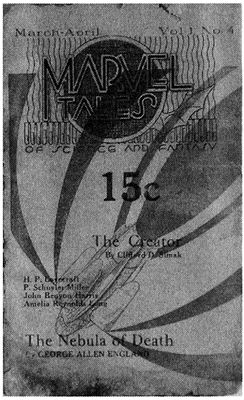

| [Ｈ・Ｐ・ラヴクラフト] ラヴクラフト全集7 | |
| Ｈ・Ｐ・ラヴクラフト | |
| (2015) | |
|
ラヴクラフト全集７東京創元社
Ｈ・Ｐ・ラヴクラフト 大瀧啓裕訳
|
The Doom That Came to Sarnath and Other Stories
by Howard Phillips Lovecraft(1890-1937)
初版発行２００５年１月２１日訳・大瀧啓裕
訳：大瀧啓祐／カバー：ヴァージル・フィンレイ
〈創元推理文庫Ｆ523-07〉
二十世紀最後の怪奇小説作家Ｈ・Ｐ・ラヴクラフト。その全貌を明らかにする待望の全集は、ここに完結する。本巻には、栄華をきわめた都市の誕生から滅亡までを描く「サルナスの滅亡」、過去を探し求める男の遍歴「イラノンの探求」など十三編を収録。さらに巻末には初期作品五編、またラヴクラフトが書簡に書きとめた夢を抜粋した「夢書簡」を収めた。
〈クトゥルー神話〉の創造主にして二十世紀最高の怪奇小説作家、Ｈ・Ｐ・ラヴクラフト。その偉業を俯瞰する文庫版全集はここに完結する。本巻には、一万年前に栄華をきわめた都市の誕生から滅亡までを描くダンセイニ風の掌編「サルナスの滅亡」をはじめ、過去を探し求める男の遍歴の物語「イラノンの探求」など十三編を収録。さらに巻末には、初期作品五編に加え、ラヴクラフトが書簡に書きとめた夢を抜粋した「夢書簡」、また資料として創作が中断した断片を収めた。
目 次
サルナスの滅亡 The Doom That Came to Sarnath (1920)
イラノンの探求 The Quest of Iranon (1935)
木 The Tree (1938)
北極星 Polaris (1920)
月の湿原 The Moon-Bog (1926)
緑の草原 Green Meadow (1927)
眠りの神 Hypnos (1923)
あの男 He (1926)
忌み嫌われる家 The Shunned House (1937)
霊廟 The Tomb (1922)
ファラオとともに幽閉されて Imprisoned with the Pharaohs (1924)
恐ろしい老人 The Terrible Old Man (1920)
霧の高みの不思議な家 The Strange High House in the Mist (1931)
初期作品
洞窟の獣 The Beast in the Cave (1918)
錬金術師 The Alchemist (1916)
ファン・ロメロの変容 The Transition of Juan Romero (1944)
通りThe Street (1920)
詩と神々 Poety and the Gods (1920)
夢書簡
資料:断片
アザトホース Azathoth (1938)
末裔 The Descendant (1938)
本 The Book (1938)
作品解題 大瀧啓裕
ラヴクラフト全集〈７〉
Ｈ・Ｐ・ラヴクラフト／大瀧啓裕訳
サルナスの滅亡 The Doom That Came to Sarnath
ムナールの地に、流れ入る川もなければ流れ出る川もない、静穏に包まれた広大な湖がある。一万年前、サルナスという強大な都市が湖畔に存在したが、もはやその跡形もない。
世界が若かった遠い昔、サルナスの民がムナールの地に到来するまえ、別の都市が湖畔にあって、このイブという灰色の石造都市は、湖そのものと同じほど古くから存在し、見るも不快な生物が棲んでいたという。はなはだ面妖にして醜悪な生物ではあれ、まだ混沌としておおざっぱにつくられた世界では、いかにも生物の大半はそのようなものであった。カダテロンの円筒形粘土には、イブの生物が湖や湖上に昇る霧と同じ緑の体色で、目は膨れあがり、唇は突き出して締まりがなく、耳が奇妙な形をして、声を発することがなかったと録されている。ある夜、霧にまぎれて、彼らや、静穏に包まれた広大な湖や、灰色の石造都市イブが月からくだったともいう。この真相は定かでないにせよ、彼らが水棲の大蜥蜴、ボクラグに似せて彫りあげられた、海緑色の石の偶像を崇拝し、月が凸状に膨らむとき、偶像のまえで恐ろしくも跳ねまわったのは確かである。そしてイラーネクのパピルス古文書には、ある日彼らが火を発見して、それ以来数多くの儀式の際には火を熾したと誌されている。しかしきわめて古い時代に生きた種族であったし、人類はまだ若く、太古のことはよくわかっていないので、この生物に関する記録はさほどない。
悠久の歳月が流れた後、人間がムナールの地に到来したが、髪の黒い牧羊の民で、毛のふさふさとした羊の群をともない、蛇行するアイ河に沿って、トゥラー、イラーネク、カダテロンの町を造った。そしてとりわけ屈強な部族が困難を排して湖畔に進み、地中に貴金属が見いだせるところにサルナスを建設した。
定住地をもたなかった遊牧民は、灰色の都市イブからほど遠からぬところにサルナスの礎石を据え、イブの生物を目にして大いに驚嘆した。さりながら、かような面貌の生物が黄昏時に人間の世界を歩きまわるのは、望むところではないと思いなされたために、驚嘆の念には憎悪がこもっていた。イブの灰色の方尖塔にある奇異な彫像も気に入らなかったのは、それら彫像が古色蒼然として恐ろしかったからである。かくのごとき生物や彫像が、なにゆえ人間の到来するまでこの世界にとどまりつづけたのかは、夢の世界や現実の世界の多くから遠く隔たっていることによるものでないかぎり、はっきりしたことは何もわからない。
サルナスの民はイブの生物を見るにつけ、憎悪をつのらせた。生物が弱く、石や槍や矢に対してあまりにも柔な体つきだと知ったからである。こうしてある日、投石兵、槍兵、弓兵からなる若い戦士たちがイブに進撃して、イブの住民をことごとく屠り、ふれる気にもなれなかったので、異様な死体は長い槍で押しやって湖に沈めた。そしてイブの灰色の彫像のある方尖塔も気に入らなかったため、これらも湖中に投じたが、かような石はムナールはもとより隣接する地にもなく、その甚大な労力を思い、いかにして遠方から運びこんだのかといぶかしんだ。
かくして水棲の蜥蜴ボクラグに似せて彫りあげられた海緑色の石像をのぞき、太古からあった都市イブは跡形もなく消滅した。若い戦士たちはこの石像を、古の神々とイブの生物を征服した象徴、そしてムナールを統率する徴として、サルナスへともちかえった。しかし石像が神殿に据えられた夜に恐ろしいことが起こったにちがいなく、不気味な光がいくつも湖上に見え、朝になってみれば、石像が消えうせているばかりか、大神官タラン＝イシュが遺体となって横たわっており、何やらん名状しがたい恐怖によるもののようだった。さらにタラン＝イシュは息をひきとるまえ、震える手で橄欖石の祭壇に破滅の徴を書きのこしていた。
タラン＝イシュのあとをサルナスの多くの大神官が襲ったが、海緑色の石像はついに見いだされることがなかった。そして幾多の歳月が流れゆくなか、サルナスは並外れて栄え、タラン＝イシュが橄欖石の祭壇に書きのこしたものをおぼえているのは、もはや神官と老婆だけになりはてた。サルナスとイラーネクのあいだに隊商路が生まれ、地中から掘り出された貴金属が、他の金属、稀少な布、宝石、書物、職人の道具、さらには蛇行するアイ河沿いやその彼方に住む人びとの知る贅沢品のすべてと取引きされた。こうしてサルナスは力と学識と美を高め、軍隊を派遣しては近隣の都市を征服し、やがてはムナールの地と隣接する多数の土地を統べる王が、サルナスの玉座につくにいたった。
壮麗なサルナスこそ、世界の驚異、人類すべての誇りとするものであった。砂漠から切り出されて磨きあげられた大理石が城壁をつくり、高さ三百キューピット、厚さ七十五キューピットにおよぶため、その上を馬車がすれちがえるほどだった。全長は五百スタディオンに達し、湖に面する箇所だけが開いて、そこには緑色の石を使った防波堤が設けられ、一年に一度、イブの滅亡を祝う饗宴の日にだけ妙に高まる波を防いでいる。サルナスでは、湖から隊商の出入りする城門にかけて五十の通りがあり、さらに五十の通りが交差していた。通りは縞瑪瑙で舗装されたが、馬や駱駝や象が歩む通りは敷石が花崗岩だった。そしてサルナスの城門は、通りが内陸に面する数だけ設けられ、すべて青銅製で、いまや知る者もない何らかの石を用いた、獅子と象の彫刻が両側をかためていた。サルナスの家屋は光沢のある煉瓦や玉髄で造られ、それぞれ塀に囲まれた庭園や水晶のように澄みきった池を擁していた。不思議な技で建てられており、他の都市にこのようなものはなく、トゥラーやイラーネクやカダテロンから旅をしてきた者たちは、住居が戴く燦然たる円蓋に驚嘆した。
しかしさらに驚嘆させられるのは宮殿と神殿、そして古代の王ゾッカールが造った庭園である。宮殿の数は多く、最小のものでさえ、トゥラーやイラーネクやカダテロンのどの宮殿よりも大きかった。高くそびえるあまり、内部にいると頭上には空しかないように思えることもあるほどだが、ドトゥルの油にひたした松明で照らされると、王たちや軍隊を描いた広大な壁画があらわれ、見る者を感激させるとともに呆然とさせる華麗なものであった。宮殿の柱は数多く、すべてが淡い陰影のある大理石で、ことのほか美しい意匠の彫刻がほどこされていた。そして大半の宮殿では、緑柱石、瑠璃、紅縞瑪瑙、石榴石といった選り抜きのものが、床をモザイク画で埋め、珍無類の花壇を歩いているのではないかと思えるようにされていた。また噴水もあって、巧妙に配置された、目をなごませる送水管から香水をほとばしらせた。これらすべてに勝るのが、ムナールおよび隣接する地を統べる王の宮殿であった。輝く床から数多くの階がつづく先に玉座があって、一対のうずくまる黄金の獅子が両脇をかためていた。それほど巨大なものがどこからもたらされたのか、もはやその事情を知る者とてないが、玉座は一本の象牙から精緻に造りだされたものだった。宮殿にはおびただしい回廊があり、多数の円形闘技場では獅子や人間や象が闘って王を楽しませた。ときには円形闘技場に強力な送水管で湖水が流しこまれ、血沸き肉躍る海戦や、人間と恐るべき水棲動物との闘いが繰り広げられることもあった。
堂々として目を瞠らせるのが、塔を思わせるサルナスの十七の神殿であり、ほかでは見られぬ輝かしい多彩な石で造られていた。最大のものは高さ千キューピットにおよび、王にも劣らぬ威光を放つ大神官が住まいした。一階には宮殿のような広大かつ壮麗な広間がいくつもあり、そこに民が群つどい、サルナスの主神であるゾ＝カラル、タマシュ、ロボンを崇拝するが、これら香をたきこめた三神の聖堂は君主の玉座に匹敵するものだった。ゾ＝カラル、タマシュ、ロボンの聖像は、他の神々のものとは異なり、生けるがごときに造られているので、顎鬚をたくわえた優雅な神御自身が象牙の玉座につかれているかに見えた。そしてきらめく風信子鉱の果てしない階を登りつめたところに、物見の房室が設けられ、大祭司がそこから、昼には都や平原や湖を見渡し、夜には謎めいた月や重大な意味をもつ星や惑星、そして湖に映じるそれらの影をながめやるのだった。水棲の蜥蜴ボクラグを憎悪する古代からの密儀が執りおこなわれるのはこの房室であり、タラン＝イシュが破滅の徴を書きのこした橄欖石の祭壇もここにあった。
同様に素晴しいのが、古代の王ゾッカールが造った庭園である。サルナスの中央に位置して、広大な敷地は高い塀に取り巻かれていた。そして巨大な瑠璃の円蓋を戴き、晴れた日には太陽や月や星の光が射し入り、そうでない日には太陽や月や星のように輝くものが吊るされた。夏には扇で巧みに軽やかに送られる、爽やかでかぐわしい微風で涼しくされ、冬には隠された炉火で暖められるので、庭園のなかはいつも春だった。きらめく玉石の上を流れる小川がいくつもあって、あおあおとした草地やさまざまな色の花園を画し、多くの橋が架け渡されていた。小川が流れゆく先には数多くの滝があり、小川が広がって百合の咲き乱れる池になっていることも多い。小川や池には白鳥がいる一方、珍しい鳥たちのさえずりがせせらぎに和していた。緑したたる土手が整然とした段庭にされ、蔓や芳香を放つ花、大理石や斑岩の腰掛けや長椅子のある木陰の休憩所が、そこかしこで美しさをひきたてていた。そして小さな聖堂や神殿も随所にあって、そこで休んだり小神に祈りを捧げたりできるようにされていた。
毎年サルナスではイブの滅亡を祝う饗宴が催され、葡萄酒、歌、踊り、ありとあらゆる歓楽がふんだんに用意された。面妖な古代の生物を殲滅した勇者の霊魂に大なる敬意が表され、ゾッカールの庭園から採られた薔薇の花冠を戴く踊り手やリュート奏者によって、記憶にのこる面妖な生物や彼らの神々が愚弄されるのだった。そして王が湖を見渡して、その下に横たわる骨を呪う。最初のうち大神官たちがこの饗宴をうとましく思ったのは、海緑色の偶像が消えうせたことや、タラン＝イシュが警告を書きのこして恐怖のあまり息たえたことについて、いかさま奇妙な話が伝わっていたからである。そして大神官たちは高い塔から湖水の下に光が見えることもあると語った。しかし災い一つなく幾星霜がすぎゆくなか、神官たちも笑ったり毒づいたりしながら、饗宴の乱痴気騒ぎに加わるようになった。事実、彼らこそ、神殿の物見の房室で、水棲の蜥蜴ボクラグを憎悪する、古ぶるしい密儀を頻繁に執りおこなっていたというのに。そして世界の驚異、人類すべての誇りとするサルナスに、富と歓喜に満ちた千年の歳月が流れた。
イブ滅亡千年を祝う饗宴は想像を絶する豪華なものだった。ムナールの地では十年前から噂され、いよいよその日が近づくと、トゥラー、イラーネク、カダテロンはもとより、ムナールの全都市やその彼方の地から、馬や駱駝や象に乗って人びとが到来した。当日の夜には、大理石の城壁のまえに、貴顕の仮設建物や旅人の天幕がならび、湖畔一帯に浮かれ騒ぐ者たちの歌が響きわたった。宴会の広間では、王ナルギス＝ヘイが征服地ナスの窖からもたらされた古酒をきこしめして横たわり、祝宴にあずかる貴族やせわしく働く奴隷に取り巻かれていた。その饗宴では数多くの異国の珍味が食され、中海のナリエル諸島の孔雀、イムプランの遙かな丘陵の仔山羊、ブナジク砂漠の駱駝の踵、キュダトリアの林の堅果や香辛料、ムタルの波に洗われた真珠をトゥラーの酢に溶かしたものがあった。饗宴にあずかる者すべての味覚にあわせ、ムナールきっての料理人たちが用意した調味料は数えきれないほどだった。しかしこれら美食のなかで最も珍重されたのは、湖で獲れた大魚であり、いずれ劣らぬおおぶりの魚が、紅玉と金剛石を鏤めた黄金の大皿に載せて出された。
王や貴族が宮殿内で饗宴を楽しみ、黄金の大皿を飾る魚料理をながめていたころ、他の者たちもそれぞれの場所で饗宴にあずかっていた。大神殿の塔では、神官たちが祝宴をし、城壁外の仮設建物では近隣都市の貴顕たちが楽しんでいた。そして凸状に膨らむ月からいくつもの影が湖にくだり、忌わしい緑の霧が湖から湧きあがって月にまで達し、命運つきたサルナスの塔や円蓋が、不気味な霧に包みこまれるのを最初に目にしたのは、大神官ナイ＝カーであった。その後、塔にいた者や城壁の外にいた者は、湖水の上に奇怪な光を目にし、岸辺近くに高くそそりたつ灰色の岩アクリオンがほぼ水没しているのを見た。漠々とした恐怖が速やかにつのりゆくまま、イラーネクや遙かなロコルの貴顕たちは、仮設建物や天幕をたたませ、アイ河目指して出立したが、サルナスをひきあげる理由とて定かではなかった。
やがて真夜中の刻限が近づいたころ、サルナスの青銅の城門のすべてがにわかに開き、狂乱した群衆がどっと繰り出して平原を黒ずませたので、サルナスを訪れていた貴顕や旅人も仰天してひとりのこらず逃げ出した。この群衆はことごとくその顔に、堪えがたい恐怖から生まれた狂気をまざまざとあらわし、聞き手が証を問えないほどの恐ろしい言葉を口走ったからである。恐怖のあまり半狂乱の目をした者たちが、王の宴会の広間で目にした光景を金切り声で叫びたてた。窓からのぞいてみれば、もはやナルギス＝ヘイ王や貴族や奴隷の姿はなく、膨れあがった目、突き出した締まりのない唇、奇妙な形の耳をした、いいようもない緑色のものが、恐ろしげに跳ねまわり、妙な炎をはらむ紅玉と金剛石の鏤められた黄金の大皿を前脚でつかんでいたという。そして馬や駱駝や象に乗って、命運のつきた都サルナスから遁走した貴顕や旅人が、霧の立ち昇る湖をふりかえってみれば、灰色の岩アクリオンは完全に水中に没していた。
ムナール全土とその隣接地すべてにわたって、サルナスから逃げ出した者たちの話が広まり、隊商がいくつも呪われた都とその貴金属を探したが、ついに見つからなかった。旅人がそこへ足を伸ばしたのは長い月日がたってからのことだが、そのときでさえ、あえて旅をおこなったのは、勇気と冒険心を備えた遙かなファロナの若者だけだった。ムナールの民とは縁もゆかりもない、黄色い髪と青い目をもつ雄々しい若者たちであった。事実、彼らはサルナスを目にするために湖まで行ったが、静穏に包まれた広大な湖そのものと、岸辺近くに高くそそりたつ灰色の岩アクリオンを見いだしたものの、世界の驚異であり、人類すべての誇りとするものであった都市を目にすることはなかった。かつて三百キューピットの城壁やさらに高い塔がそびえていたところには、いまや湿地が広がっているばかりで、かつて五千万の民が住んでいたところには、忌わしい緑色の水棲の蜥蜴が這いまわっているだけだった。貴金属の鉱床すらのこっておらず、まさにサルナスは破滅したのであった。
しかし藺草に半ば埋もれた恰好で、奇妙な緑色の石像が見つかった。はなはだ古ぶるしいその石像は、びっしりと海草がこびりつき、水棲の大蜥蜴ボクラグに似せて彫りあげられたものだった。その石像はイラーネクの大神殿に安置され、その後はムナール全土で月が凸状に膨らむときに崇拝された。
ラヴクラフト全集〈７〉
Ｈ・Ｐ・ラヴクラフト／大瀧啓裕訳
イラノンの探求 The Quest of Iranon
花崗岩都市テロスにさまよいこんだ若者は、蔓の頭飾りをつけ、黄色の髪を没薬で輝かせ、身にまとう紫のローブを、古い石橋の手前にそびえるシドラク山の茨に裂かれていた。テロスの民は陰気で重苦しく、角ばった家に住んでおり、眉をひそめて見知らぬ若者に、どこから来たのか、名前は何か、どのような富をもっているのかとたずねた。すると若者はこう答えた。
「わたしはイラノンといい、ほのかな記憶があるだけとはいえ、ふたたび見いだそうとしている遙かな都市、アイラからやってきました。遙かな都市で学びとった歌をうたう者であり、天職は子供のころの記憶にのこったもので美をつくることです。富といえるのは、ささやかな記憶と夢、それに月影さやかで西風が睡蓮の蕾を揺らすときに、庭園で歌いたいという願いしかありません」
テロスの民はこれを聞くと、小声で話しあった。花崗岩都市にはもはや笑いも歌もなかったが、いかめしい民は春にカルティアの丘陵を見やっては、旅人が告げる遙かなオオナイのリュートに思いをはせることがあったからである。そしてそのように思いをいたすと、異国の若者にムリンの塔のまえの広場にとどまって歌うように告げたが、ずたずたに裂けたローブの色も、髪を輝かす没薬も、蔓の頭飾りも、素晴しい声の若わかしさも気に入るものではなかった。日が暮れると、イラノンが歌ったが、歌っているあいだ、ひとりの老人が祈りをささげ、盲目の男が歌い手の頭の上に光輝く雲が見えるといった。しかしテロスの民の多くはあくびをして、笑う者もいれば、眠るためにひきあげる者もいた。イラノンが有益なことは何も口にせず、思い出と夢と希望を歌うだけだったからである。
「わたしは黄昏と月と美しい歌、あやされて眠りについた窓辺をおぼえている。窓の向こうの通りでは、金色の光が射して、影が大理石の家で揺らいでいた。床を四角く照らす月光が他の光とは異なり、母がわたしに歌いかけたとき、さまざまな幻影が月の光のなかで躍りはねたのをおぼえている。そして夏には、さまざまな色合の丘陵の上で朝日が明るく輝き、木々を歌わせる南風に甘い花の香が運ばれたのもおぼえている。
「ああ、大理石と緑柱石の都市アイラよ、おまえの美はどれほど数多いことか。穏やかに澄んだニトラ河の向こうの暖かく芳しい林や、あおあおとした谷を流れるクラ川の滝を、わたしはどれほど愛したことか。それら林や谷では、子供たちがたがいに花輪をつくりあい、わたしは黄昏時になると、眼下の都市の灯りや、蛇行するニトラ河が星たちを帯状に映すのをながめながら、山のヤス木の下で不思議な夢を見た。
「そして都市には、縞模様のある大理石や薄い色のついた大理石の宮殿がいくつもあり、黄金の円蓋と彩色された塀、青い水をたたえた池と澄みきった泉のある緑したたる庭園を擁していた。わたしはそうした庭園で遊び、池を歩いて渡り、木陰で白い花たちに囲まれ、寝そべって夢を見たものだ。そして日没時には、長い山道を歩いて砦や開けたところまで登り、金色の輝きに包まれて壮麗な、大理石と緑柱石の魔法都市、アイラをながめやることもあった。
「流刑にされたとき、わたしは幼かったから、アイラよ、おまえを寂しく思って久しいが、父がおまえの王であり、運命がそう定まっているのだから、わたしはふたたびおまえのもとに行くだろう。七つの土地のすべてをめぐっておまえを探したので、いつの日か、おまえの林や庭園、通りや宮殿をわがものとして、わたしがいずこの地を歌っているかを知り、笑うことも背を向けることもしない者たちに歌うことになるだろう。わたしこそイラノン、アイラの王子だった者なれば」
その夜、テロスの民は異国の若者を厩で眠らせ、朝になると執政官があらわれて、靴直しアトクの店に行って徒弟奉公するようにと告げた。
「しかしわたしは歌をうたう者、イラノンです」イラノンはいった。「靴直しのなりわいをするつもりはありません」
「テロスで暮す者はみな精を出して働かなくてはならない」執政官がいった。「それが法なればな」するとイラノンが告げた。
「何のために精を出して働くのでしょう。働いても幸せではないのではありませんか。もっと働くためにのみ働くのであれば、幸せはいつ訪れるのでしょう。生きるために働くとしても、人生とは美と歌からつくられるのではありませんか。それにあなたがたのなかに歌う者がいないのなら、労働の果実はどこにあるのでしょう。歌もなく働くことは、目的のない倦み疲れる旅のようなもの。それなら死のほうが甘美ではありますまいか」しかし執政官は陰鬱な顔をして、意を酌むこともなく、異国の若者を叱責した。
「おまえは不思議な若者で、わたしはおまえの顔も声も気に入らない。テロスの神々は額に汗して働くことが善なりと述べておられるので、おまえの口にする言葉は不敬なものである。われらの神々は死の彼方に光の安息所があると約束されており、そこには果てしない安らぎがあって、その水晶のような冷たさのなかでは、心を思考で、目を美しさで悩ませることもない。靴直しアトクのもとへ行くか、日没までに都市を出よ。この都市で暮す者はみな奉仕しなければならず、歌は愚行である」
かくしてイラノンは厩を出て、陰気な花崗岩の四角い家屋が建ちならぶ狭い通りを歩き、春の大気のなかに緑のものを探した。しかしすべてが石で造られているため、テロスに緑色のものはなかった。民人は顔をしかめたが、ゆったり流れるズロ河の石造りの堤防に腰をおろした少年は、悲しげな目を河面に向け、雪解けの増水によって丘陵から流れくだる芽吹いた緑の枝を見つめていた。少年がイラノンにいった。
「あなたは執政官がいってた、美しい土地の遙かな都市を探してる人なんでしょう。ぼくはロムノド、テロスの民として生まれたけど、花崗岩都市のならわしではまだ一人前じゃなくて、美と歌のある暖かな林や遠くの土地へ行きたくてたまらないんだ。カルティアの丘陵の向こうには、みんなが声をひそめて話す、美しくもあれば恐ろしくもあるという、リュートと舞踏の都市オオナイがある。ぼくは道がわかるほど大きかったらそこへ行くつもりだし、あなたも歌を聞いてもらいたいなら、行くべきだよ。二人でテロスを離れて、一緒に春の丘陵を旅しよう。あなたが旅する道を教えてくれたら、ぼくは夜に星が一つまた一つとあらわれて、夢見る者の心に夢をもたらすときには、あなたの歌に耳をかたむける。もしかしたら、リュートと舞踏の都市オオナイが、あなたの探してる美しいアイラかもしれない。あなたはずいぶんまえからアイラのことは知らないそうだし、名前はよくかわるものだからね。オオナイへ行こうよ、金色に輝く頭のイラノン。オオナイの民はぼくたちの熱望を知って、兄弟のように迎え入れ、ぼくたちが何を口にしても笑ったり顔をしかめたりしないよ」するとイラノンはいった。
「そうだろうな、小さな子供。美を求める者がこの石造都市にいるなら、山脈やその向こうを探すにちがいないし、わたしはゆったり流れるズロ河の松のそばに、君をのこしていきはしない。しかし君のいう歓喜と理解が、カルティア丘陵のすぐ向こうや、一日あるいは一年ないしは五年の旅で行けるところにあると考えてはいけないね。君のように小さかったとき、わたしは冷えびえとしたクサリ河の流れるナルトスで暮したが、そこでは誰もわたしの歌に耳をかたむけようとはせず、わたしは大きくなったら南の丘陵のシナラへ行って、市場で笑みをうかべるヒトコブラクダ人に歌いかけようと思った。しかしシナラに行ってみると、ヒトコブラクダ人は酔いどれの下品な者ばかりで、彼らの歌はわたしの歌とはちがうものだったから、平底の荷船に乗ってクサリ河をくだり、縞瑪瑙の城壁をはりめぐらしたジャレンに行った。ジャレンの兵士たちがわたしを笑いものにして追いはらったので、数多くの都市をさまよった。大瀑布の下にあるステテロスを目にしたし、かつてサルナスがあった湿地帯をながめたこともある。蛇行するアイ河に沿ったトゥラー、イラーネク、カダテロンに行き、ロマールの地にあるオラトーエで久しく暮しもした。しかしときには耳をかたむけてくれる者がいたにしても、ごくわずかにすぎず、わたしが歓迎されるのは、わが父がかつて王として統治した大理石と緑柱石の都市、アイラだけだとわかっている。だからわたしたちはアイラを探し求め、カルティア丘陵の彼方にある、リュートに祝福された遙かなオオナイを訪れればよいだろう。そこがまさしくアイラかもしれないが、わたしはそうは思わない。アイラの美は想像を絶するもので、歓喜なくして語ることもできないのに、駱駝を駆る者たちは声をひそめ、嫌らしい目つきをして、オオナイのことを語っているのだから」
日が暮れると、イラノンと小さなロムノドはテロスから出立して、長いあいだ緑したたる丘陵や冷えびえとした森をさまよった。道は荒れはててほとんど見分けもつかず、リュートと舞踏の都市オオナイに近づいているふうもなかったが、闇がくだって星たちがあらわれると、イラノンはアイラとその美について歌い、ロムノドが耳をかたむけたので、二人ともそれなりに幸福だった。二人は果物や赤い果実をたっぷりと食べ、時がすぎゆくことも気にしなかったが、長い月日が流れさったにちがいない。小さかったロムノドはもはや小さいとはいえず、甲高かった声が太くて低いものになっていたが、イラノンはいつも同じで、金色の髪を森で見いだせる蔓や芳しい樹脂で飾っていた。こうしてある日、かつてイラノンがゆったり流れるズロ河の石造りの堤防で見かけたとき、テロスに流れてきた芽吹いた緑の枝をながめていた小さなロムノドが、イラノンよりも老けて見えるまでになった。
そしてある満月の夜、二人の旅人は山を登りつめて、オオナイの千々の灯りを目にした。農民たちからもうすぐだといわれていたが、イラノンは祖国のアイラではないことを知った。オオナイの灯りはアイラの灯りとは異なり、ぎらついてけばけばしいのに対して、アイラの灯りといえば、イラノンの母がかつて歌いながら寝かしつけた窓辺の床に射す月光のように、やさしく魔法のように輝くのだった。しかしオオナイはリュートと舞踏の都市なので、イラノンとロムノドは険しい斜面をくだっていき、歌や夢を喜んでくれる者たちを見つけようとした。そして都市に入ってみると、薔薇の花冠をつけて浮かれ騒ぐ者たちが、家を出入りしたり、窓や露台から身を乗り出したりして、イラノンの歌に耳をかたむけ、歌いおわると、花を投げて拍手喝采した。そのときイラノンはつかのま、自分と同じように考えたり感じたりする人びとを見いだしたと思ったが、都市はアイラの百分の一も美しくなかった。
夜明けが訪れると、イラノンは度を失ってあたりを見まわした。オオナイの円蓋は日差しを浴びても金色には輝かず、灰色のわびしいものだった。そしてオオナイの民は歓楽に耽って顔色も青白く、葡萄酒を痛飲して大儀そうで、アイラの輝かしい民とは似ても似つかなかった。しかし花を投げられ歌を賞讃されたことで、イラノンはロムノドとともにとどまりつづけ、ロムノドは都市の歓楽を気に入って、黒い髪に薔薇や銀梅花をつけるようになった。夜になると、イラノンは浮かれ騒ぐ者たちに向かってよく歌ったが、常に以前のように山の蔓だけを頭につけ、アイラの大理石敷きの通りや穏やかに澄んだニトラ河を思いだしていた。フレスコ画に飾られた君主の広間で、鏡の床に設けられた水晶の壇で歌い、聞き手の心にさまざまな情景をもたらしつづけ、やがて床に映じているのが、葡萄酒で顔を赤らめて薔薇を投げる祝宴の列席者ではなく、半ば記憶にのこる過去の美しいもののように思えるまでになった。そして王がイラノンの襤褸になった紫のローブを取りさり、繻子と金糸の衣服をまとわせ、翡翠の指輪と淡い象牙の腕輪をつけさせると、綴織りのかかった金色まばゆい部屋で、天蓋と花を刺繍された絹の上掛けのある、香木を彫刻した寝台にイラノンを休ませた。このようにしてイラノンはリュートと舞踏の都市オオナイで暮したのである。
イラノンがどれほど長くオオナイにとどまったのかは知られていないが、ある日オオナイの王が激しく旋回する踊り子をイラニアの砂漠から、浅黒いフルート吹きを東方のドリネンから宮殿に招くと、その後は浮かれ騒ぐ者たちがイラノンに薔薇を投げることも、踊り子やフルート吹きのように多くはなくなった。そして日を重ねるにつれ、花崗岩都市テロスで小さな少年だったあのロムノドは、葡萄酒を飲みつづけて品性が卑しく、顔が赤らむようになって、夢を見ることも、イラノンの歌を耳にして歓喜をおぼえることも少なくなった。イラノンは悲しかったが、歌うことはやめず、夜になると、大理石と緑柱石の都市、アイラの夢をふたたび語った。やがてある夜、顔を赤く染め、でっぷり太ったロムノドが、宴会の寝椅子の罌粟で飾られた絹に包まれ、大きないびきをかき、身をよじって死んだとき、痩身で青白い顔をしたイラノンは、離れた隅でひとりきりで歌っていた。そしてイラノンはロムノドの墓で涙を流し、ロムノドがかつて愛していたのと同じような芽吹いた緑の枝を撒き散らすと、絹の衣服と派手な装身具を取りさり、来たときと同じ襤褸の紫のローブだけを身につけ、山の新鮮な蔓で頭を飾り、リュートと舞踏の都市オオナイを離れて忘れさられた。
イラノンは夕日のなかへとさまよいでて、なおも祖国と、自分の歌や夢を理解して懐かしんでくれる者たちを探した。キュダトリアの都市やブナジク砂漠の彼方の地の都市をすべて訪れ、にこやかな顔をした子供たちに、古めかしい歌や襤褸になった紫のローブを笑われたが、イラノンはあいかわらず若わかしく、金色の髪に蔓をつけ、アイラや過去の喜びや未来の希望を歌った。
そしてある夜、年老いた羊飼いのむさくるしい小屋を訪れた。汚れ放題で腰の曲がった羊飼いは、泥沼の上の岩の斜面でわずかばかりの羊を飼っていた。イラノンは数多くの他の者に対してしたように、この男に話しかけた。
「穏やかに澄んだニトラ河が流れ、小さなクラ川の滝が緑したたる谷やヤス木の茂る丘に歌いかける、大理石と緑柱石の都市アイラが、いったいどこにあるのかご存じありませんか」羊飼いはこれを聞くと、しばらく不思議そうにイラノンを見つめ、あたかも遙か昔のことを思いだし、見知らぬ男の顔立ち、金色の髪、頭を飾る蔓をつくづくと見ているかのようだった。しかし羊飼いは高齢で、首をふってこう答えた。
「ああ、見知らぬ人よ、確かにアイラという名も、あなたがおっしゃった他の名前も聞いたことはありますが、それはもうずいぶんまえのことですよ。若いころに遊び相手だった、不思議な夢にうつつをぬかしていた乞食の少年から聞きましたが、その少年は月や花や西風にまつわる長い話をつくっていたものでした。わしらはその少年をよく笑いましたが、それというのも、わしらは少年が生まれてからのことを知っているのに、本人は王の息子だと思っていたからです。あなたのように端整な少年でしたが、莫迦なことを考えたり、妙な振舞いをしていました。まだ小さいころに、自分の歌や夢に喜んで耳をかたむけてくれる者を見つけに、どこかへ行きよりました。存在しもしない土地のことや、ありえざるものについて、どれほどわしに歌ったことか。アイラのことはよく語っていました。アイラやニトラ河、それにクラ川の滝のことを。昔は王子として暮していたといっておりましたが、ここでは生まれてからのことが知られていましたよ。アイラという大理石都市は存在しませんし、不思議な歌に喜びを感じる者もおりません。いなくなってしまった、わしの昔の遊び相手のイラノンの夢のなかを措いては」
そして暮色が濃くなりまさり、星が一つまた一つとあらわれて、月が沼地に光を投げかけたありさまといえば、子供が夜にあやされて眠りにつくとき、床に揺れているのを見たものに似ており、死を招く泥沼へと歩んでいく年老いた者は、襤褸になった紫のローブをまとい、枯れた蔓の葉で頭を飾り、夢が理解される美しい都市の黄金の円蓋をあおいでいるかのように前方を見つめていた。その夜、青春と美のいくばくかが旧世界で失われた。
ラヴクラフト全集〈７〉
Ｈ・Ｐ・ラヴクラフト／大瀧啓裕訳
木 The Tree
アルカディアのマエナルス山のあおあおとした斜面には、ある邸宅の廃墟のまわりにオリーヴの林がある。邸宅の近くに墓石があって、かつては崇高きわまりない彫刻がほどこされて美しかったが、いまや邸宅と同様に崩れはてている。その墓石の一端では、歳月とともに薄汚れたペンデリコン山の大理石の石塊を、奇妙な根が押しのけるようにして、いかさま不快な形をした異常に大きなオリーヴの木がはえ、見るも奇怪な姿をした者や、死の苦悶に身をよじる姿に似ているがため、夜に歪んだ大枝ごしに月が朧に輝くときには、地元の者はこの木のまえを通りすぎるのを恐れる。マエナルス山は恐れられるパーンが好んであらわれるところであり、パーンの面妖な仲間は数多いので、単純素朴な田舎の若者たちは、その木が気味悪い小さなパーン神と何やらん恐ろしい関係があるにちがいないと思っているが、近くの小屋に住む老養蜂家は異なった話をしてくれた。
遙か昔、丘の斜面の邸宅が新しくて輝かんばかりだったころ、そこには二人の彫刻家、カロースとムーシデスが住んでいた。リュディアからネアーポリスにいたるまで、二人の作品の美しさが賞讃され、どちらの技倆がまさっているかなどと口にする者もなかった。カロースのヘルメース像がコリントの大理石の神殿に立ち、ムーシデスのパラス像がアテーナイのパルテノーン神殿近くの柱の上に載っている。誰もがカロースとムーシデスを称え、兄弟さながらの二人の友情に芸術上の嫉妬が水をさしもしないことに驚いた。
しかしカロースとムーシデスは完全な調和のうちに暮していたとはいえ、それぞれの性向は異なっていた。ムーシデスが夜にテゲアの都会の歓楽のなかで大いに楽しむのに対して、カロースは家にのこり、奴隷たちの目を忍んで、オリーヴの林の涼しい奥まったところへ行くのが常だった。そこで心を満たす夢想に思いをこらし、生けるがごときの大理石として不滅のものとなる美の形を案出するのである。事実、怠け者たちがいうには、カロースは林の霊たちと言葉をかわし、カロースの彫像はカロースがそこで出会ったファウヌスやドリュアスの像にほかならない──作品をつくるにあたって、生きている人間をモデルに使わないからである。
カロースとムーシデスはかくも有名だったので、シュラークーサエの僭主が二人のもとに代理を送り、おのれの都市に計画している、運命の女神テュケーの豪華な像について語らせたときも、驚くような者はひとりもいなかった。この像は国の驚異にして旅人の目標となるべきものなので、巨大で絶妙の細工がなされていなければならない。その作品を受け入れられた者は思いもよらぬほど称揚されるだろう。この名誉に対して、カロースとムーシデスは競いあうように促されたのだった。兄弟さながらの二人の友愛は夙に知られていたので、悪巧みにたけた僭主は、二人が自分の作品を隠しこむようなことをせず、たがいに助力や助言をあたえあい、この思いやりから未曾有の美をたたえた二つの像が生みだされ、美しさきわまるほうは詩人の夢さえかすませるだろうと忖度したのである。
彫刻家二人は僭主の申し出を歓喜して受け入れ、それからの日々というもの、奴隷たちは絶え間なく鑿がふるわれる音を耳にした。カロースとムーシデスはたがいに自分の彫像を隠したりはしなかったが、他の者には見せようとしなかった。こうして世界がはじまったときから閉じこめられていた神像が、大理石の石塊から巧みなわざで解放されていくありさまは、二人以外の誰も目にすることがなかった。
夜になると、かつてのように、ムーシデスはテゲアの宴会場へと足を向け、カロースはひとりきりでオリーヴの林をさまよった。しかし時が経過するにつれ、かつて才気煥発だったムーシデスに陽気さがなくなっていくのが気づかれた。芸術上最大の褒賞を勝ち取る素晴しい機会をつかんだ者が、このようにふさぎこむというのは、いかさま妙なことではあるまいかと、みんなが話しあった。長い月日が過ぎ去ったが、ムーシデスの渋い顔には、目下の境遇が生みだすはずの熱い期待は露ほどもなかった。
やがてある日、ムーシデスがカロースの病について語り、彫刻家二人の愛慕が尊敬すべき深いものであると知られていたので、それからはムーシデスの悲しみが不思議がられることはなくなった。こうして多くの者がカロースを見舞いにいき、顔色が悪いことに気づいたが、そのカロースには満足そうな安らかさがあって、ムーシデスよりも眼差しが美しかった──ムーシデスは心痛のあまり取り乱しているようで、奴隷をすべて追いはらい、自分の手で親友に食べさせたり身のまわりの世話をしたりした。重たげな帳の背後には、未完のテュケー像が二つあって、最近では病人とその忠実な付添いに触れられることもなかった。
困惑した医者や甲斐がいしい親友の看護にもかかわらず、不可解にも衰弱が悪化の一途をたどるにつれ、カロースはこよなく愛した林へ連れていってほしいと求めることが多くなった。林へ行くと、見えざるものと話したがっているかのように、ひとりきりにしてくれと頼むのだった。ムーシデスはいつもカロースの願いをかなえたが、カロースが自分よりもファウヌスやドリュアスを気づかっていると思い、目に涙をたたえていた。ついに最期が迫り、カロースはこの人生の彼方にあるもののことを語った。ムーシデスはさめざめと泣きながら、マウソールスの霊廟よりも美しい墓を造ってやると約束したが、カロースは大理石の栄光についてはもう口にしないでくれといった。瀕死の男はいまや心にただ一つの願いをいだき、林のなかの特定のオリーヴの木々から小枝を取って、墓に埋めてくれといった──頭に近いところにである。そしてある夜、オリーヴの林の暗闇にひとりきりで坐りこんだまま、カロースは息をひきとった。
愛する友のため、悲しみに打ちひしがれたムーシデスが彫った大理石の墓は、いいようもないほど美しかった。カロース以外の誰もこのような浅浮彫りはできなかったろうと思えるほどのもので、エーリュシオンの光輝のすべてがあらわされていた。そして林からオリーヴの小枝を取ってきて、カロースの頭の近くに埋めることを、ムーシデスは忘れはしなかった。
悲痛の激しい最初の高まりが諦観になりかわると、ムーシデスは精を出してテュケー像の製作に取り組んだ。シュラークーサエの僭主はムーシデスとカロース以外の者の手になる彫像を手に入れるつもりもなかったので、いまや名誉のすべてがムーシデスのものだった。ムーシデスの作業は感情の捌け口となり、毎日ますます堅実に労苦して、かつてあれほど楽しんでいた歓楽にも背を向けた。夜は親友の墓のそばですごしたが、そこに眠りこむ者の頭近くに、オリーヴの若木がはえていた。この木の生長が速やかで、その形も異様なために、これを見る者は誰しも驚きの声をあげたが、ムーシデスは魅了されるとともに反感をいだいているようでもあった。
カロースが亡くなって三年後、ムーシデスが僭主に使者を送ると、テゲアの広場では巨大な彫像が完成したのだと囁かれた。このころには、墓のそばに立つ木が驚くべき大きさになって、同じオリーヴのどの木よりも高くそびえ、ことのほか太い枝をムーシデスが精を出す家屋の上に伸ばしていた。多くの者がやってきて、尋常ならざる木をながめたり、彫刻家のわざを賞讃したりするので、ムーシデスはひとりきりでいることがほとんどなかった。しかし大勢の客がつめかけても気にせず、事実、心血をそそいだ作品が完成するや、ひとりきりになるのを恐れているようだった。冷えびえとした山の風がオリーヴの林や墓のそばの木を騒がせ、不気味にも漠然と言葉にも似た音をたてた。
僭主の使者がテゲアに到着した夜、空はかき曇っていた。巨大なテュケー像が運ばれて、ムーシデスに久遠の名誉がもたらされるのは明らかなので、公使による歓待は懇ろなものだった。夜も更けたころ、マエナルス山の上空で暴風が起こり、遙かなシュラークーサエから到来した者たちは街で快適に休んでいることをうれしく思った。彼らは名高い僭主や、その首都の輝かしさについて語りあい、ムーシデスが僭主のためにまばゆいばかりに美しい彫像を造りあげたことを大いに喜んだ。そしてテゲアの住民も、ムーシデスの技倆の素晴しさや親友に対する深い悲嘆について語り、栄冠を勝ち得たかもしれなかったカロースの亡きいま、芸術の栄誉とて慰めにはならないだろうと嘆じあった。墓のそばで、カロースの頭の近くに育つ木についても語られた。風が恐ろしげに吹きすさび、シュラークーサエから来た者もアルカディアの民も、風の神アイオロスに祈りを捧げた。
朝の日差しのもと、公使が僭主の使者を導いて坂道を登り、彫刻家の邸宅へと向かったが、夜の風が妙なことをなしていた。奴隷たちの叫びが荒廃の場からあがり、もはやオリーヴの林のなかには、ムーシデスが夢を見たり労苦したりした、あの大広間の輝かしい柱廊はなかった。つつましやかな中庭と低い壁が荒れはてた姿でひっそりとのこっているだけだった。壮麗な柱列に囲まれた広い空間に、異様な新しい木から突き出す重い大枝がまともに落ちて、大理石の堂々とした建物を、妙に完膚なきまで、見るも無残な瓦礫の山にかえていた。シュラークーサエの使者もテゲアの民も呆然と立ちつくし、残骸から不吉な大木に目を移したが、その木は異様なまでに人間に似て、彫刻のほどこされたカロースの墓石の下へと奇妙にも根が伸びていた。そして倒壊した家屋が注意深く調べられたとき、恐怖と驚愕が強まった。心やさしいムーシデスも、素晴しいテュケー像も、痕跡一つ見つからなかったのである。凄まじい廃墟のなかには混沌があるばかりで、二つの都市を代表する者たちは落胆してひきあげた。シュラークーサエの使者は彫像をもちかえれないため、テゲアの民は誉となる芸術家がいなくなったためである。しかしながらシュラークーサエの民はほどなくアテーナイでまことに素晴しい彫像を手に入れ、テゲアの民はムーシデスの才能と廉潔さと献身を記念する大理石の聖堂を広場に建てて自分たちを慰めた。
しかしオリーヴの林はカロースの墓からはえた木とともになおもあって、老養蜂家が語ってくれたところによると、ときおり大枝が夜風に吹かれて囁きあい、何度も繰り返して、「オイダ、オイダ（わたしは知っている）」と告げるのだという。
ラヴクラフト全集〈７〉
Ｈ・Ｐ・ラヴクラフト／大瀧啓裕訳
北極星 Polaris
部屋の北の窓から見れば、北極星が不気味な光を放って輝いている。慄然たる長い暗黒の刻限を通じて、北極星はそこで輝きつづける。そして北風が呪いの声をあげてむせび泣き、早朝未明に欠けゆく三日月のもとで、沼沢地の紅葉した木々が囁きあう秋には、わたしは窓辺に腰をおろしてその星をじっと見守る。こうして時間がたつにつれ、きらめくカッシオペイア座がくだる一方、靄に包まれ夜風に揺れる沼沢地の木々の背後から、北斗七星が重おもしく昇ってくる。夜が明けそめようとするころ、アルクトゥールスが低い丘にある墓地の上空で赤くまたたき、髪座が神秘的な東の空遠くで不気味な微光を放つが、なおも北極星は黒い穹窿の同じ場所から睨めつけており、恐ろしげにまたたくありさまといえば、尋常ならざる知らせをもたらそうとしながらも、かつて伝えるべきことがあったことしかおぼえていない、気のふれた見守る目のようである。ときとして空が曇ると、わたしは眠ることができる。
沼沢地の上で凄まじいダイモーンの光が乱舞した、大いなるアウローラの夜のことはよくおぼえている。光のあとには雲が訪れ、そしてわたしは眠りについた。
あの都市をはじめて目にしたのは、欠けゆく三日月のもとでだった。ひっそり静まり返って半ば眠りについたような都市は、奇異な山峰にはさまれた谷間の不思議な高原にあった。壁や塔、柱、円蓋、舗石は、ことごとく薄気味悪い大理石製だった。大理石の通りには大理石の柱が立ちならび、柱の上部には顎鬚をたくわえた威厳ある人物の像が彫りこまれていた。大気は暖かく、そよとの風もなかった。そして頭上を見あげれば、天頂から十度と離れていないところに、すべてを見守る北極星が輝いていた。長いあいだ都市をながめたが、夜が明けることはなかった。赤いアルデバランが空低くでまたたきながら没することなく、四分の一ほど地平線をゆるやかにめぐったとき、住居や通りに光と動きが見えた。不思議な装いをしているとはいえ、高貴で見おぼえのある人びとが、屋内から通りに歩みでて、欠けゆく三日月のもとで、わたしの知るどの言語とも似ていないというのに、なぜかわたしには理解できる言葉で賢明なことを語った。そして赤いアルデバランが地平線をめぐる進路を半分以上進んだころ、ふたたび闇と静寂が訪れた。
目を覚ますと、わたしは以前のわたしではなかった。都市の景観が記憶に刻みこまれ、そのときはいかなるものかも定かでなかった、ぼんやりとした別の記憶が心に生じていた。その後、眠りにつくことのできる曇った夜には、都市を目にすることがよくあり、あの欠けゆく三日月に照らされていることもあれば、地平線近くをめぐるばかりで没することのない、暑い太陽の黄色い光に包まれていることもあった。そして雲一つない夜には、北極星がいままでとはうってかわって睨めつけるのだった。
しだいにわたしは、奇異な山峰にはさまれた不思議な高原のあの都市で、自分はどのような立場にあるのかと思うようになった。最初のうちは、すべてを観察する、肉体のない存在として、都市をながめるだけで満足していたが、いまや自分と都市の関係をはっきりさせ、毎日公共広場で話しあう威厳ある人びとのなかに立ちまじり、思いのたけを口にしたくてたまらなかった。わたしはこうひとりごちたものだ。「これは夢ではない。北極星が夜ごと北の窓からのぞきこむなか、低い丘の墓地や不気味な沼沢地の南に位置する、石と煉瓦で造られたこの家でおくる人生が、どうすれば他にまさる現実であると証明できるのか」
ある夜、数多くの彫像の立ちならぶ大きな広場で議論に耳をかたむけていると、変化が感じられ、ついに肉体を得たことがわかった。もはやわたしは部外者ではなく、ノトンとカディフォネクの山峰にはさまれる、サルキスの高原に位置するオラトーエの通りにいた。弁舌をふるっているのは友人のアロスで、その演説は嘘偽りのない愛国者のものであるため、わたしは心底うれしかった。その夜、ダイコスが陥落し、イヌート族が進攻しているとの知らせがもたらされたのだ。イヌート族はずんぐりした醜悪きわまりない黄色の悪鬼で、五年前に未知の西方からあらわれ、われらの王国を荒しまわり、ついには都市を包囲するにいたった。山麓の要塞地帯が落ちたからには、全市民が一騎当千の力で抵抗しないかぎり、彼らの高原への進撃を食いとめるすべもない。ずんぐりしたイヌート族は戦闘にたけており、われら長身で灰色の目をしたロマールの民に無情な征服をひかえさせている信義など、毫ももちあわせてはいないからである。
わが友人のアロスは高原の全部隊の指揮官でもあり、この国の最後の希望が双肩にかかっていた。このときアロスは対峙すべき危難について語り、ロマールの民のなかで最も勇敢なオラトーエの男たちに熱弁をふるい、かつて大氷河が押し寄せてゾブナから南進せざるをえなかったとき（われらの子孫たちでさえいつかはロマールの地から逃げ出さねばならないが）、行く手に立ちふさがった腕の長い毛むくじゃらの人食いグノフケー族を、祖先が雄々しくも華ばなしく蹴散らした史実をもちだし、その伝統を維持せよと勧告した。わたしは虚弱なうえに、緊張や辛苦にさらされると不思議と昏倒してしまうため、アロスもわたしを部隊に組み入れはしなかった。しかし連日長時間にわたって、ナコト写本やゾブナの父祖たちの知恵を研究しているにもかかわらず、わたしはオラトーエで一番目がよかったので、わが友人はわたしが無為にすごすのを望まず、またとない重要な任務にわたしをつかせた。わが軍の目の役目を果たさせるべく、わたしをタプネンの物見の塔に送った。イヌート族がノトンの峰背後の隘路から砦に達し、守備隊に奇襲しようとするなら、わたしが火を焚いて待ちかまえる兵士たちに知らせ、攻めこまれるのを防ぐのである。
屈強な男たちはすべて山道の守備についたため、わたしはひとりで塔に登った。何日も眠っていないことで、興奮と疲労のあまり、頭が痛んで目もくらみそうだったが、祖国ロマールはもとより、ノトンとカディフォネクの山峰にはさまれる大理石都市オラトーエを愛してやまないために、断固たる決意を固めた。
しかし塔の最上階に立ったとき、遙か遠くのバノフの谷にたれこめる靄を通して、欠けゆく三日月が赤く不気味に揺らめいているのが見えた。そして屋根の開口部から見える青白い北極星は、その輝きがちらついて、あたかも生命を備え、悪鬼や悪魔のごとく睨めつけているかのようだった。北極星の魂魄が悪しき言葉を囁きかけ、わたしの心をなだめて背信の眠りにつかせようと、忌わしいほど調子のよい約束を何度も繰り返すように思われた。
眠れよ、目をこらす者、
二万六千年の歳月を経て、
天球層がめぐり、
われがふたたびいまの場所にもどるまで。
名もなき他の星ぼしが、
天空の軸に昇るであろう。
甘美な忘却でもって、
心慰める星や祝福をあたえる星が昇るであろう。
わが周期が終わるときにのみ、
過去がそなたの扉を騒がせるであろう。
わたしはむなしく睡魔と闘い、この不思議な言葉をナコト写本から学びとった天空の伝承に結びつけようとした。目がくらみ、頭が重くなって、ついには胸にたれ、次に顔をあげたのは夢のなかでだった。窓の外をあおぎ見れば、夢の沼沢地の恐ろしげに揺れる木々の上空で、北極星がにっこり笑っていた。そしてわたしはなおも夢を見ている。
わたしは恥辱と絶望に責めさいなまれ、狂乱した悲鳴をあげて、ノトン峰背後の隘路を忍び歩くイヌート族が砦を奇襲するまえに起こしてくれと、まわりにいる夢の生物たちに訴えかけるが、これらの生物はダイモーンであり、わたしを嘲笑い、わたしが夢を見ているのではないと告げる。わたしが眠りこみ、ずんぐりした黄色い敵がひそかに迫っているかもしれないあいだ、わたしを嘲笑しつづける。わたしは任務を怠り、大理石都市オラトーエを敵に売り渡し、わが友にして指揮官であるアロスを裏切った。しかしなおも夢の影たちはわたしを愚弄する。彼らがいうには、わたしの夜の夢想以外にロマールの地は存在せず、北極星が高く輝き、赤いアルデバランが地平線のすぐ上をめぐる領域には、数千年にわたって氷と雪があるだけで、「エスキモー」という、冷気になぶられるずんぐりした黄色民族をのぞいて、人間は存在しないものらしい。
そしてわたしは罪悪感の苦悶に身をよじりながら、刻一刻と脅威が高まる都市を救おうとやっきになり、低い丘の墓地と沼沢地の南に位置する石と煉瓦で造られた家という、この異様な夢をふりはらおうとむなしく奮闘しつづける。凶まがしくも邪悪な北極星が黒い穹窿から睨めつけており、恐ろしげにまたたくありさまといえば、尋常ならざる知らせをもたらそうとしながらも、かつて伝えるべき知らせがあったことしかおぼえていない、気のふれた見守る目のようである。
ラヴクラフト全集〈７〉
Ｈ・Ｐ・ラヴクラフト／大瀧啓裕訳
月の湿原 The Moon-Bog
どのような遠く離れた恐ろしい世界なのかはわからないが、デニス・バリイはどこかへ行ってしまった。バリイが人と交わって暮していた最後の夜に、わたしはともにいて、あることが起こったときにバリイの悲鳴を聞いたが、ミース県の農夫や警察が長いあいだ遠くまで捜しまわったにもかかわらず、ついにバリイも他の者たちも見つけられなかった。そしていまやわたしは、湿地帯で蛙が鳴くのを聞いたり、わびしい場所で月を見たりすると、わなわなと身を震わせてしまうありさまだ。
デニス・バリイのことは、バリイが財を成したアメリカでよく知っていたし、静かなキルデリイの湿原に近い古城を買いもどしたときには祝いの言葉を伝えた。バリイは父親がキルデリイの出なので、祖先の地で資産家であることを楽しもうとしたのだ。一族がかつてキルデリイを支配し、城を建てて住んでいたが、そうした日々は遙かな昔で、何世代にもわたって城は無人のまま荒廃の一途をたどっていた。バリイはアイルランドに渡ってから、わたしによく手紙を寄こし、バリイの監督下で、灰色の城が塔を一つまた一つとそびえさせ、かつての壮麗さを取りもどしつつあることや、修復された壁を蔦が何世紀もまえのようにゆっくり這い登っていること、そして海の彼方の富で古き良き日々をよみがえらせて、農夫たちに感謝されていることを知らせてくれた。しかしやがて問題が起こり、農夫たちが感謝するのをやめ、破滅を避けるかのように逃げ出した。そしてバリイがまた手紙を寄こして、北部から雇い入れた新しい召使いと作業員以外、城には話し相手もなく寂しいので、泊まりにきてくれないかといってきた。
城を訪れた夜にバリイが語ったところによると、問題すべての原因は湿原だという。わたしがキルデリイに到着したのは夏の日没時で、空の金色が丘陵や林の緑と湿原の青を照らしだし、遠くの小島で異様な古さびた廃墟がぼんやりと輝いていた。夕映えはこのうえもなく美しかったが、バリラクの農夫たちが用心するようにと告げ、キルデリイは呪われているというものだから、城の高い小塔が赤く染まっているのを目にして震えあがりそうになった。キルデリイは鉄道からはずれているので、バリイが自動車をバリラクの駅に寄こしてくれていた。村人たちは自動車にも北部出身の運転手にも近寄ろうとしなかったが、わたしがキルデリイに行こうとしているのを知ると、青ざめた顔をして囁きかけたのだった。その夜、再会したあとで、バリイがわけを話してくれた。
農夫たちがキルデリイから立ち去ったのは、バリイが大きな湿原を干拓するつもりだったからである。バリイはアイルランドをこよなく愛してはいても、やはりアメリカ人であって、泥炭を取り除けば開発することもできる美しい不毛の空間を嫌った。キルデリイの伝説や迷信に動じることもなく、農夫たちが最初は手助けするのをことわり、やがてバリイの決意のほどを知るや、さんざん悪態をつき、わずかばかりの家財道具を携えてバリラクに移ったときも、あっさり笑いとばしたほどだった。バリイは農夫たちのかわりに北部から作業員を呼び寄せ、召使いたちが暇を取ると、同じように補充した。しかし外部から来た者たちのなかでは孤独なので、わたしを招いたのだった。
農夫たちが恐怖にかられてキルデリイから逃げ出したことを聞かされたとき、それがきわめて漠然とした信じがたい笑止千万なものだったので、わたしもバリイと同じように声をあげて笑った。湿原の荒唐無稽な伝説にかかわっていて、わたしが日没時に見た、遠くの小島の異様な古さびた廃墟に住むという、恐ろしい守護霊にまつわるものだった。月が見えない闇夜に光が乱舞し、暖かい夜に冷えびえとした風が吹き、水面の上に白衣の霊が漂い、湿原の底深くに石造りの都市が存在するといった話がある。しかし面妖な話のなかでも群を抜き、誰もが首肯する話が一つあって、あえて広大な赤みがかった湿原に手をつけたり干拓したりする者には、呪いがふりかかるという。農夫たちがいうには、明るみに出してはならない秘密があるらしい。歴史の彼方の往古にパルトランの子らに疫病が蔓延して以来、隠されたままになっている秘密である。『侵略者の書』には、これらギリシア人の息子たちがすべてタライトに葬られたと記されているが、キルデリイの老人たちにいわせると、月の女神の保護を受けずに見すごされた都市が一つあったので、ネメドの民が三十隻の船でスキタイから殺到したとき、樹木の茂った丘陵によって葬るしかなかったらしい。
村人たちをキルデリイから立ち去らせた空疎な話とはこのようなものであって、わたしはこれらを耳にしたとき、バリイが取りあわなかったのも当然だと思った。しかしバリイは古代の遺物に並なみならぬ興味を抱き、湿原の干拓が終われば徹底した調査をおこなうつもりだった。小島の白い廃墟を頻繁に訪れていたが、まさしく古さびたものでありながらも、その外形はアイルランドの多くの遺跡とはかなり異なっているし、ひどく崩れはてているので、いつの時代のものかもわからなかった。いまや干拓のための作業がはじまろうとしており、まもなく北部から来た作業員たちが、禁断の湿原から緑の苔や赤いヒースを剥ぎとり、小さな貝殻に覆われた小川や、藺草に縁取られる静まり返った青い池を干上がらせることになっていた。
わたしはその日の旅で疲れきっていたし、バリイが深更まで話しこんだものだから、こうしたことを聞かされたあと、ひどい眠気を感じた。召使いに連れていかれたのは、離れたところにある塔の一室で、村、湿原のはずれの平地、湿原そのものが見渡せるので、窓からながめてみると、月光のもとで、農夫たちが逃げ出していまでは北部の作業員が暮している家屋のひっそりとした屋根や、古風な尖塔のそびえる教区の教会、陰気な湿原の彼方の小島で遙か昔の廃墟がぼうっと白く輝いているのが見えた。眠りこむ直前に、その方角からかすかな音が聞こえたような気がした。荒あらしい音楽のような音で、わたしを異様に興奮させて夢に影響をおよぼした。しかし翌朝目覚めたときには、すべては夢だったのだと思った。目にしたものが夜の荒あらしい笛の音色よりも素晴しかったからだ。バリイから聞かされた伝説に影響されたのだろうが、まどろみのなかでわたしの心は緑したたる谷間の壮麗な都市の上空を舞い、大理石の通りや彫像、邸宅や神殿、彫刻や碑文がことごとく、一定の調子でギリシアの栄光を告げているのを知った。この夢をバリイに話して、二人で笑ったが、バリイは北部から来た作業員のことで困惑していたので、笑い声はわたしのほうが大きかった。作業員たちは前日早めに休んだというのに、全員が寝すごして、ぼうっとした感じでのろのろと起きだし、よく眠っていないかのように振舞うのは、これで六度目だった。
バリイが干拓の作業をはじめるための最終的な計画で忙しくしていたので、午前中から午後にかけて、わたしは太陽に照らしだされる村をひとりで歩きまわり、怠けている作業員とときおり話をした。作業員たちはさほど楽しそうにはしておらず、大半の者が思いだそうとしてもよみがえってこない夢のせいで、どことなく不安がっているようだった。わたしが自分の夢を話しても、興味を寄せることもなかったが、それもわたしが耳にしたように思う不気味な音について話すまでのことだった。奇妙な目つきでわたしを見つめ、自分たちも不気味な音をおぼえているようだといった。
夕方にバリイがわたしと一緒に食事をして、二日のうちに干拓をはじめると告げた。苔やヒースや小川や沼がなくなるのを見たくはなかったが、深い泥炭の下に隠されているかもしれない古代の秘密を、この目で見きわめたいという願いをつのらせていたので、バリイの知らせをうれしく思った。そしてその夜、笛と大理石の柱廊にまつわる夢が、忽然と不穏な終わりかたをした。谷の都市に悪疫がふりくだるのを見たあと、樹木の茂った斜面が恐ろしくも傾れ落ち、通りの死体を埋めつくして、高峰にあるアルテミスの神殿だけはまぬかれたが、そこでは老齢の月の巫女クレイスが、銀色の頭に象牙の冠を戴いて、冷たい骸と化していたからである。
わたしは急に驚いて目を覚ました。しばらくのあいだ、笛の音色がなおも甲高く耳に響いていたので、目覚めているのか眠っているのかもよくわからなかったが、冷えびえとした月光がゴティック様式の格子造りの窓の輪郭を床に描いているのを見て、キルデリイの城で目を覚ましているにちがいないと判断した。やがて遠く離れた階下の踊り場で時計が二時を告げるのが聞こえ、目覚めているのだとわかった。しかしなおも単調な笛の音色が遠くから聞こえ、荒あらしくも不気味な旋律が、遙かなマエナルスでのファウヌスの舞踏めいたものを思わせた。音が耳について眠れそうもなく、いらだたしい思いでベッドから出ると、部屋を歩きまわった。たまたま北に面する窓に近づき、湿原のはずれにある平地と静まり返った村をながめようとした。早く眠りたかったので、外をながめるつもりもなかったが、笛の音に悩まされるあまり、何かしたり見たりせずにはいられなかった。だが、あのようなものを目にするとは思いもしなかった。
広びろとした平地にふりそそぐ月光のなかに、ひとたび目にすれば忘れられようもない光景があった。湿原に響きわたる葦笛の音色にあわせ、さまざまな揺れる人影が群をなし、音もなく不気味にすべるようにやってきて、シチリア人がその昔キュアネーの畔で中秋の満月のもと、デーメーテールに捧げて踊ったような、浮かれ騒ぐ軽快な舞踏に興じていた。広い平地、金色の月光、揺れ動くぼんやりした人影、そしてこれらに響きわたる甲高い単調な笛の音が、ほとんど身のすくむような効果をもたらしたが、わたしは恐怖のただなかにあって、これら疲れも知らずに機械人形のように踊る者たちの半分が、眠りこんでいたはずの作業員である一方、のこる半分が白衣をまとった不思議な空気のような存在で、その性質とて定かでないにせよ、湿原の泉からあらわれた悩ましい蒼白のナーイアスを思わせるものであることに気づいた。わびしい格子造りの窓から、この光景をどれほどの時間ながめていたのかはわからないが、わたしは急に意識を失って、夢も見ない眠りに落ちこんでしまい、高く昇る朝日を浴びて目を覚ました。
目覚めてすぐに、不安に思うことや目にしたことをバリイに話そうと思ったが、格子造りの東の窓から陽光が射し入っているのを目にすると、見たと思ったものが現実ではなかったと確信するようになった。不思議な幻影を体験したとはいえ、そんなものを信じるほど愚かではないので、この機会に作業員に質問をして、彼らがかなり遅く寝たことや、甲高い音が聞こえた朧な夢以外、前夜のことは何もおぼえていないことを知って満足した。この捉えどころのない笛の件にはかなり悩まされ、秋のコオロギが早ばやとあらわれて夜に鳴きたて、眠りこむ者の夢を悩ませたのではないかと思った。その日遅く、バリイが書斎で翌日はじまる大作業の計画書に目を通しているのを見て、農夫たちを逃げ出させたのと同様の恐怖を、はじめて身にこたえるほどまざまざと感じた。どういうわけか、古くからある湿原と闇に包まれた秘密を乱すという考えを恐れ、悠久の歳月を重ねた泥炭の計り知れない底に横たわる恐るべき光景を思いうかべた。こうした秘密を明るみに出すことが賢明ではないように思え、城と村を離れる口実があればよいのにと願うまでになった。さりげなくバリイにこの件をもちだしもしたが、高らかに笑われてしまっては、あとをつづけられなかった。それで太陽が遠くの丘陵の上で燦然と輝き、キルデリイが何かの前兆のように赤と金の光に染まると、わたしは黙りこくってしまった。
その夜の出来事が現実だったのか幻影だったのかは、わたしには確かめるすべもない。確かにわれわれが自然や宇宙で夢見るものを超越しているが、終わったあとで誰もが知ることとなったあの消失は、普通のやりかたではどうにも説明がつけられないのだ。わたしは不安に胸をふたがれたまま早めに床につき、不気味に静まり返った塔で長いあいだ眠れずにいた。空には雲一つなかったが、今夜の月はかなり欠けているうえ、深夜まで昇らないため、ひどく暗かった。わたしは横たわったままデニス・バリイのことを思ったり、明くる日に何が湿原に起こるのかと考えたりしていたが、いつしか闇のなかにとびだして、バリイの車に乗りこみ、脅かされる土地からバリラクへやみくもに逃げ出したいという衝動にかられ、ほとんど気も狂わんばかりになった。しかし恐怖が行動の形を取るまえに、眠りこんでしまったらしく、恐ろしい影に包まれ冷えびえとして死にたえた谷の都市を、夢のなかでまじまじと見つめた。
おそらく甲高い笛の音で目覚めたのだろうが、目を開けたとき最初に気づいたのは、その音ではなかった。わたしは湿原を望む窓に背を向けていたので、欠けゆく月が昇っているなら、わたしが顔を向けている壁に光が見えるはずだと思った。まさかあんなものを目にするとは思いもしなかった。確かに光が前方の鏡板を照らしていたが、月が投げかける光ではなかった。ゴティック様式の窓から流れこむ赤みがかった一条の光は、恐ろしくも射るように鋭く、部屋全体がこの世のものならぬ強烈な輝きに明るく照らしだされていた。わたしが咄嗟に取った行動は、このような状況では特異なものだったが、洞察力のある劇的なことをおこなうのは小説の世界の話である。わたしは湿原の向こうの新たな光源に目を向けるかわりに、恐怖にすくみあがって目を窓に向けないようにしながら、ぼんやりと逃げ出すことを考え、おろおろと服を身につけた。回転拳銃と帽子をつかみとったことはおぼえているが、発砲することも頭にかぶることもないまま失ってしまった。しばらくすると、赤い輝きに魅了されて恐怖が静まり、東の窓にそろそろと近づいて外を見たが、こんなあいだもとぎれることなく、気も狂いそうになる笛の音が城や村に響きわたっていた。
沼の上に赤あかとした不気味な光が明るく輝き、遠くの小島の異様な古さびた廃墟からあふれでているのだった。その廃墟がどのようなものだったかはとても書けない──わたしは狂っていたにちがいなく、まったく腐朽もせずに壮麗にそびえ、素晴しくも柱に取り巻かれ、柱頭の真っ赤に染まる大理石が山頂の神殿の先端のように空にそそりたっていた。笛が甲高く奏でられ、太鼓が鳴り響きはじめ、畏怖と恐怖に打たれてながめているうち、大理石と光輝を背景に、踊る人影がグロテスクなシルエットを描くのを見たように思った。そのありさまたるや巨大なもの──考えられないもの──で、笛の音が左で強まったと思うようなことがなければ、いつまでもながめていたかもしれない。恍惚とした思いと妙に入り乱れる恐怖に身を震わせながら、円形の部屋を横切って、湿原のはずれの平地と村が望める北の窓に行った。自然の圏外にある情景に背を向けたばかりだというのに、そんなことがなかったかのように、はなはだしい驚きのあまり、またしても目を大きく見開いた。恐ろしくも赤く輝く平地で、悪夢をおいて誰も見たことのないようなやりかたで、不思議な存在が列をつくって動いていたのだ。
空中を半ばすべるように、半ば漂うように、白衣をまとった湿原の霊たちがゆっくりと、古代の荘厳な儀式の舞踏を思わせるような不思議な隊形で、静まり返った水と小島の廃墟のほうへと退いていた。あの見えざる笛の唾棄すべき音色に導かれ、彼らのふる透明な腕が、ふらついている作業員たちに不気味なリズムで合図を送り、作業員たちは目が見えず、頭も働かず、もがくような足取りで犬のように霊たちのあとを追い、生硬だが容赦ない魔物の意志にひきよせられているかのようだった。ナーイアスたちが進路をかえないまま湿原に近づくと、わたしの窓のはるか下にある城のどこかの扉から、ふらふらと酔ったように迷い出た者たちが新たな行列をつくり、目が見えないかのように手探りして、中庭と介在する村の一部を横切り、平地にいる作業員のぎこちなく進む列に加わった。かなりの距離はあったが、いまや愚鈍さがいいようもない悲劇になりはてた料理人の醜悪で不恰好な体つきが見てとれたので、彼らが北部から来た召使いであることはただちにわかった。笛が恐ろしい音色を奏で、またしても小島の廃墟のほうから太鼓の響く音が聞こえた。やがて音もなく優雅にナーイアスたちが水辺に達し、ひとりまた一人と、古くからある湿原に溶けこむ一方、あとにつづいていた者たちの列が、一度も歩調をゆるめることなく、ぎこちなくナーイアスのあとを追って、水しぶきをあげながら湿原にとびこみ、真っ赤な光のなかでかろうじて見える、不快に泡だつ小さな渦のなかに姿を消していった。そして最後の哀れな者、太った料理人が、あの陰鬱な湿原に重たげに沈みこむと、笛と太鼓の音が静まって、廃墟から射す目もくらむ赤い光も瞬時に消え、新しく昇った月の淡い光のなかで、命運のつきた村がぽつんと荒蓼とした姿をさらけだしていた。
わたしはといえば、いまやいいようもないほど混乱していた。気が狂ったのか正気なのか、眠っているのか目覚めているのかもわからないまま、ひとえにありがたくも体が麻痺していたせいで助かったのだ。アルテミス、ラートーナ、デーメーテール、ペルセポネー、プルートーンに祈りを捧げるといった、莫迦げたことをしたのだと思う。あまりにも恐ろしい状況によって、心の奥深くにある迷信が目覚めさせられ、古典の神話から思いだせるかぎりの名前が口にのぼった。村全体の死を目撃したように思い、いまや城のなかにいるのは、大胆さによって破滅をもたらしたデニス・バリイとわたしだけであるのを知った。バリイのことを思うと、新たな恐怖に身が震え、床に倒れこんでしまった。意識を失ったわけではないが、体がいうことを聞かなかった。するうち月が昇っている東の窓から冷たい風が吹き寄せるのを感じ、城のかなり下から悲鳴があがるのを耳にした。すぐにその悲鳴は筆舌につくしがたい性質の凄まじい大きさになり、いまでさえ思いだすだけでも失神しそうになる。わたしにいえるのは、それを発したのが友人として知っていた者だったということだけである。
この慄然たるありさまがつづいているうち、いつしか冷風と絶叫によって我に返ったにちがいなく、記憶にのこっている次の印象は、真っ暗な部屋や廊下を狂ったように駆け抜け、中庭をよぎって恐ろしい夜闇のなかに出たことだった。わたしは夜明けにバリラクの近くをふらふらとさまよっているのを発見されたが、わたしを気も狂わんばかりにさせたのは、以前に目にしたり耳にしたりした恐怖のどれでもなかった。闇のなかからゆっくりあらわれたわたしが口にしていたのは、逃げ出してから起こった奇妙な二つの出来事のことで、どちらも些細なことでありながら、いまでも特定の沼沢地や月の光のあたるところにひとりきりでいると、しきりと脳裡によみがえって悩まされてしまう。
呪われた城から湿原のはずれに沿って逃げていたとき、新たな音を耳にした。ありふれたものでありながらも、キルデリイで耳にしたどんな音ともちがっていた。最近では生物がまったくいなくなった澱んだ水に、ぬらぬらした大きな蛙が群がって、妙にその大きさには釣り合わないほどの声で、不断に甲高く鳴きたてたのだった。月の光のなかで、蛙たちが膨れあがった緑色の体を輝かし、光の源を見あげているようだった。わたしは一匹のきわめて太った醜い蛙の視線をたどり、二番目のものを目にして気が変になってしまった。
遠くの小島にある異様な古さびた廃墟から欠けゆく月にまっすぐ伸びる、揺れる一条のかすかな輝きを、わたしは目でたどったようだが、その輝きは湿原の水にまったく映じていなかった。そしてわたしは熱にうかされたような妄想をおぼえ、その青白い光の上のほうに、ゆっくりとのたうつ、うっすらした影があるように思った。ぼんやりした歪んだ影は、見えざる魔物にひきよせられているかのようにもがいていた。わたしは狂っていたのだろう。その悍しい影に、恐るべき類似──胸が悪くなるような信じがたい戯画──を見たのだが、それはデニス・バリイだった者の冒涜的な姿だった。
ラヴクラフト全集〈７〉
Ｈ・Ｐ・ラヴクラフト／大瀧啓裕訳
緑の草原 Green Meadow
註記
以下のきわめて特異な物語、あるいは印象の記録は、異常な状況下で発見されたものであるため、くわしく事情を説明しておかなくてはならない。一九一三年八月二十七日水曜日の夜、八時半頃、アメリカ合衆国メイン州のポトワンケットという小さな海辺の村の住民は、目がくらむような閃光をともなう轟音によって安らぎを破られた。海岸近くにいた者たちは、岸からさほど遠くない海中に巨大な火球が空から落下して、凄まじい水煙をあげるのを見た。次の日曜日に、ジョン・リッチモンド、ピーター・Ｂ・カー、サイモン・キャンフィールドの乗りこんだ漁船が、トロール網で金属質の岩塊をひっかけ、岸までひきずってきたが、重さは三百六十ポンドあり、（キャンフィールドの言葉によれば）鉱滓めいていたという。住民の多くは口をそろえて、この重い岩塊が四日前に空からふってきた火球だと述べており、地元の科学者リチャード・Ｍ・ジョーンズ博士は石質隕石にちがいないと発言した。ボストンの熟練した分析者に送るべく、ジョーンズ博士が標本をいくつか削りとったとき、半金属質の塊のなかに、以下の物語を記した不思議な冊子が収められているのが見つかった。この冊子はいまも博士の手もとにある。
形態の面では、発見されたものはごく普通の手帳に似ており、大きさは五×三インチで、三十枚の用紙がふくまれている。しかし材質となると、尋常ならざる特性を顕著に示していた。表紙は地質学者にとって未知の黒っぽい石質の物質から造られており、いかなる機械的手段によっても破壊できない。どんな試薬にも反応しないようだという。用紙も同じような材質だが、ただ色は表紙よりも明るく、簡単に丸められるほど、このうえもなく薄い。これらの用紙がいかなる処理によって綴じられているのかは、これを観察した者の誰にもわからず、用紙の材質が表紙の材質に粘着しているのである。これらは分離することができず、用紙はいかなる力をくわえても破れない。用紙に記された文章は純粋きわまりない古典ギリシア語で、古文書の研究者の何人かが断言するには、文字は紀元前二世紀頃に使用された筆記体であるという。文章には年代を特定できるような記述はない。均等な書きかたから推測できるのは、石筆によって石板に書かれたものに似ているということだけである。ハーヴァード大学の故チェイムバーズ教授によって分析作業がおこなわれているあいだに、数ページにわたる文章、主として物語の結末にあたる文章が、まだ誰も読み通していない段階で、ほとんど読めないほどに薄れてしまった。取り返しのつかない損失である。のこっているものは古文書学者のラザーフォードによって、現代ギリシア語の書体で書き写され、この形で翻訳者に手渡された。
マサチューセッツ工科大学のメイフィールド教授は不思議な石の標本を調べ、まさしく隕石であると言明している。この意見にはハイデルベルク大学のフォン・ヴィンターフェルト教授の見解は取りこまれていない（教授は一九一八年に危険な敵性外国人として拘禁された）。コロンビア大学のブラドリイ教授は穏当な立場を取って、ある種の未知の成分が大量に認められることを指摘し、いまのところ分類は不可能だと述べるにとどめている。
不思議な冊子の存在、性質、内容は、由々しい難問になっており、解釈しようとする試みさえおこなわれていない。現存する本文をすべて、現代の言葉で可能なかぎりの逐語訳をおこなって提示するので、これを読む人がいつか解釈の手がかりを見いだして、近年最大の科学上の謎の一つを解決してくれることを願う。
そこは狭い場所で、わたしはひとりきりだった。わたしがいるのは目にしみるような緑色の草の揺れるところで、片側には海があった。青く、明るく、ゆったりとうねる海は、薄靄のような水しぶきをあげ、わたしの胸をときめかせた。事実、水しぶきがあまりにも多いものだから、海と空が一つになっているという妙な印象を受けたものだ。諸天も海と同様に明るく青いからである。反対側には森があり、海そのものと同じくらい古くから存在し、果てしなく内陸部に広がっている。木々がグロテスクなまでに大きく太く、信じられないほど数多いので、森のなかはことのほか暗い。巨大な幹はぞっとするような緑色をしており、わたしが立っている狭い緑の草地と不気味に溶けあっている。少し離れたところでは、異様な森が水際まで広がって、海岸線を消しさり、狭い草地を囲んでいる。木々の一部は海中からはえており、森が広がりゆくのをさえぎれるものは何もないかのようだ。
生きものはついぞ目にしたこともなく、わたし以外の生きものが存在した痕跡すらない。海と空と森がわたしを取り囲み、想像を絶する領域へと広がっている。風に吹かれる木々のざわめきと波の寄せる音をのぞいては、耳に届く音もない。
沈黙の草地に立っていると、急に体が震えはじめた。どのようにしてここにやってきたのかもわからず、自分の名前や地位もろくに思いだせなかったが、まわりに何が潜んでいるかがわかれば、気がふれてしまうように思えたからだ。わたしは遙か遠くの他の人生で学びとったこと、夢に見たこと、想像したこと、切望したことを思いだした。天の星ぼしを見つめては、肉体をもってしては到達できない広大な深淵を、わたしの自由な魂が渡れないことで、神々に不敬の言を吐いた長い夜のことを考えた。わたしは古代の冒涜行為の数かずや、恐ろしくもデーモクリトスのパピルスを読みふけったことを思いおこしたが、記憶がよみがえるにつれ、さらに恐怖がつのって身が震えた。わたしがひとりきりであること──恐ろしくも天涯孤独の身の上であること──がわかったからだ。しかし孤立していながらも、決して理解することも出会うことも願わない、巨大かつ茫洋としたたぐいの意識あるものの感情が間近に感じられる。揺れる緑の枝がたてる音のなかに、悪意に満ちた憎しみや、狂乱した勝利の喜びめいたものが感じとれるような気がした。木々の鱗じみた緑色の幹に半ば隠されている、想像を絶した慄然たるものと、木々が恐ろしくも話をかわしているように思えることもあった。そうした慄然たるものは、目には見えないにせよ、意識には隠しきれないのだ。わたしの感覚を最も圧迫しているのは、不気味な異質感だった。まわりにあるのは、木、草、海、空というように、はっきり名前をあげることのできるものばかりだが、それらとわたしとの関係は、ぼんやりおぼえている別の人生で知っていた、木や草や海や空との関係と同じではなかった。相違の性質についてはわからないが、異質さをまざまざと感じるにつけ、恐怖のあまり身を震わせるわたしだった。
やがて、以前は靄のかかった海しか見えなかったところに、緑の草原が望めるようになった。小波が日差しを照り返す広大な青い海原によって、緑の草原とわたしは隔てられているが、不思議と近くにあるように思えた。これまでわたしはこわごわと右の肩ごしにふりかえり、木々に目をやることがよくあったが、妙に愛着をおぼえる緑の草原をながめるほうがよかった。
いまいる特異な草地に目をすえていたとき、足もとの地面が揺れるのをはじめて感じた。恐ろしくも意識的な行為であることをほのめかすような、脈動するうねりでもってはじまり、わたしの立っている草地の一部が海岸から離れ、そして漂いはじめたのだった。何か容赦のない力をもつ流れに運ばれているかのように、ゆっくりと前進しつづけた。予想だにしなかった現象に愕然とするあまり、身動き一つせず、凍りついたように立ちつくしていると、わたしと木々の生い茂る陸地のあいだに、幅広い水路ができあがるまでになった。やがてわたしは呆然としたありさまで腰をおろし、日差しを照り返す小波と緑の草原をふたたびながめやった。
背後では、木々と木々に隠されているやもしれないものが、このうえもない脅威を発散させているようだった。このことはふりかえって目を向けるまでもなくわかった。目にはいる景色に慣れるにつれ、わたしはしだいに、かつてのようには五官を頼りにしなくなっていたからだ。緑一色の森がわたしを憎んでいるのはわかっていたが、いまやわたしは森から安全なところにいて、わたしのいる草地の一部は岸から遠く離れて漂っていた。
しかし一つの脅威は去ったにせよ、新たな脅威が迫ってきた。わたしのいる浮かぶ小島から着実に土が失われていくので、いずれ死は遠からぬことだった。しかしそのことがわかったときでさえ、死がわたしにとってもはや最期ではないように感じられた。ふたたび緑の草原に目をやれば、わたしの恐怖と不思議な対照をなす、奇妙な安心感をおぼえたからだ。
するうち果てしない遠くから、水の傾れ落ちる音が聞こえた。わたしが知っている小さな滝の音ではなく、地中海の水が計り知れない深淵に流れ落ちるとすれば、遙か遠くのスキタイの地で聞こえるような音だった。しだいに小さくなりゆく小島は、この音のするほうに進んでいたのだが、わたしは満足していた。
遙か後方で、この世のものとも思えない恐ろしいことが起こっていた。わたしはふりかえってそれを目にし、わなわなと総身を震わせた。いかさま異様なことに、空に暗い靄めいたものがあらわれて、木々の上にわだかまり、揺れる緑の枝の挑発に応えているようだった。やがて海から濃い霧が昇り、空に浮かぶものにくわわって、岸が見えなくなってしまった。太陽──わたしの知っているものではない太陽──は、わたしを取り巻く海の上で明るく輝いているが、わたしが離れた陸地は凄まじい大嵐に襲われ、地獄めいた木々と木々に隠されているものの意志が、海と空の意志に粉砕されているようだった。そして霧が消えたとき、目にはいるのは青い空と海だけで、もはや陸地と木々の姿はなかった。
このときわたしの注意は緑の草原での歌声にひきつけられた。先にも述べたように、これまで人間の生活を示すものに出会ったことはなかったが、いまやわたしの耳には詠唱がぼんやりと聞こえ、その源と性質は歴然としてまちがいようのないものだった。言葉は理解のおよばないものだったにせよ、詠唱によってわたしの心に一連の特異な連想がひき起こされた。古代エチオピアの首都メロエのパピルスから採られたものを、かつてエジプトの書物から翻訳したことがあるが、そのどことなく不穏な文章を思いださせるものだった。思いだすさえ恐ろしい文章、地球がまだ若かった時代の生命形態や古ぶるしいものについて語る文章が、わたしの脳裡をよぎっていった。考え、動き、生きていながらも、神々にしても人間にしても生きているとはみなさなかったものについてのことだ。恐ろしい書物だった。
耳をかたむけていると、それまで潜在意識の段階でわたしを当惑させていた状況が、しだいにわかるようになってきた。これまで緑の草原には明確なものは何も目にとまらず、目にしみる青草が均一に広がっているという印象が、わたしの知覚したもののすべてだった。しかしいまや、流れがわたしのいる小島を緑の草原のすぐ近くへと運んでいることがわかり、緑の草原やそこで歌っているもののことが、あるいはわかるようになるやもしれなかった。好奇心がつのるまま、歌っているものを見たくてたまらなかったが、この気持ちには不安もまじりあっていた。
わたしを運ぶごく小さな島がなおも土を失いつつあったが、わたしはこの損失を気にもとめなかった。わたしが所有しているように思える肉体（あるいは肉体の見かけをとるもの）とともに、自分が死ぬわけではないように思えたからだ。わたしのまわりにあるものはすべて、生や死さえもが、幻影にほかならなかった。わたしは死の定めや肉体を有する生物の領域を超越し、何ものにもとらわれない自由な存在になっている。ほぼ確信に近い、そんな印象を受けていた。自分がどこにいるのかはわからず、かつて馴染み深いものであった地球上ではありえないと思うばかりだった。はらいきれない恐怖とは別に、わたしの胸を占めていた感情は、つきせぬ発見の航海に乗りだしたばかりの旅人がいだくようなものだった。ほんのつかのま、わたしはあとにしてきた土地や人のことを考えた。二度ともどれないやもしれないが、いつの日かこの冒険を知らせる方法について思いをめぐらした。
いまでは緑の草原のすぐ近くを漂っているので、声がはっきり聞こえはしたが、多数の言語に通じているというのに、歌われる言葉がまったく解せなかった。はるか遠くにいたとき漠然と感じとっていたように、まさしく聞きおぼえのあるものなのだが、畏怖すべき朦朧とした記憶があるという以外には何もわからず、雲をつかむようなものだった。声の驚嘆すべき特質──とても言葉ではあらわせない特質──は、恐ろしいものであると同時に魅惑的なものでもあった。やがて遍在する青草のなかに、いくつかのものが識別できるようになった──明るい緑色の苔に覆われた岩、丈のある灌木にくわえ、かなりな大きさの見定めがたいものがあって、灌木のなかで妙に動いているか揺れているように見えた。歌い手を目にしたくてたまらなかったが、歌声は最大に高まっているようで、見定めがたいものは歌にあわせるように、その数がおびただしいものになったり、動きが活発なものになったりした。
そしてわたしを乗せた小島がさらに近づき、水の流れ落ちる音がさらに高まっていくなか、わたしは歌っているものの姿をはっきりと目にし、その恐るべき一瞬のうちに、すべてを思いだした。そのことについては、語ることもできなければ、語る勇気とてない。これまでわたしを困惑させていたもののすべてが恐ろしくも解き明かされたのだ。そんなことを書きとめたりすれば、これを読む者は気がふれてしまう。わたしですら発狂しそうになったほどなのだから......わたしは自分が経験した変化、かつて人間であった一部の者が経験した変化と、わたしのような者には逃れるすべもない未来の果てしない周期について知った......わたしは永遠に生き、永遠に意識しつづけるだろうが、わたしの魂は悲鳴をあげ、死や忘却の賜物を神々に求めることだろう......すべてがわたしの目のまえにある。耳を聾せんばかりの流れの彼方には、ステテロスの土地があり、そこには果てしなく年老いた若者たちがいる......緑の草原......遼遠たる恐ろしい深淵の彼方に、知らせを届けることにしよう......（以下判読不能）
ラヴクラフト全集〈７〉
Ｈ・Ｐ・ラヴクラフト／大瀧啓裕訳
眠りの神 Hypnos
睡眠、すなわち夜ごとのあの不気味な冒険については、これが危険を知らないためであるとわかっていないなら、人は不可解な大胆さでもって日々に床につくといってもよいだろう。
もしもこの世におわしますなら、慈悲深い神々よ、意志の力もなければ、人間の抜け目なさがつくりだす薬物もない刻限に、わたしが深い眠りの亀裂に落ちこまずにすむようになさしめたまえ。死がありがたいものであるのは、二度ともどることはありえないからだが、夜の最下底の洞から、知識を得て憔悴しきってもどった者は、もはや安息に恵まれることもない。かような是認されざる熱狂に動かされ、人間が分け入るべきではない神秘にとびこむとは、わたしは莫迦もいいところだった。愚者ないしは神と呼ぶべきか──わが唯一の友は、わたしを導き、わたしよりも先に行って、ついには恐怖のただなかに入りこんだが、それがわたしの運命になるやもしれない。
思い返せば、わたしたちは鉄道の駅で出会い、わが友はあさましくも物見高い群衆に取り巻かれていた。意識を失い、痙攣のようなものを起こして、わずかばかりの黒衣に包まれた体を妙に硬直させていたのだった。そのとき四十に近い年齢だろうと思ったのは、青白くて頬のこけた顔に深い皺が刻みこまれていたからだが、その顔は楕円形をして実に端整なものであり、ふさふさした波打つ髪と、かつては漆黒であったこぶりな顎鬚には、ちらほらと白いものがまじっていた。額はギリシアのペンデリコン山の大理石のように白く、その高さと幅はほとんど神の彫像を思わせるものだった。
わたしは彫刻家の情熱を高ぶらせ、この男は古代ギリシアで造られたファウヌスの彫像であり、神殿の廃墟から掘り起こされて、どのようにしてか息苦しい現代に生き返らされたため、苛酷な時代の冷気と重圧を感じる羽目になりはてたのだと、そう自分にいい聞かせた。そして落ちくぼんだ炯々と輝く黒い大きな目が開いたとき、そのような目は通常の意識や現実を超えた世界──わたしが夢想のなかで慈しみながらむなしく探し求める世界──の威光や恐怖をつぶさにながめているにちがいないと見てとれたので、わたしの唯一の友──絶えて友人をもった試しのない者にとっての唯一の友──になってくれるはずだとわかった。そこで野次馬たちを追いはらってから、ぜひわたしの家に来て、計り知れない神秘を教え導いてほしいと告げると、ひとことも口にせずに同意してくれた。その後、わが友の声が音楽であることを知った──低いヴィオルと澄んだ天球の音楽だった。わたしたちはよく夜に話しこみ、昼間にはわが友のさまざまな表情を不滅のものにするべく、わたしは胸像に鑿をふるったり、象牙に細密肖像を刻みこんだりしたものだ。
わたしたちが研究したことについては、生きている人びとが想像するような世界のいかなるものともほとんど関係がないため、とうてい語ることなどできはしない。物質や時間や空間よりも深いところにあって、ある種の夢──普通の人間にはかなわぬとはいえ、想像力豊かな者の生涯に一、二度訪れる、夢を超越した稀れな夢──のなかでしかその存在を推測することもできない、模糊とした実体や意識の存する広大な慄然たる宇宙にかかわるものなのだ。われらの覚醒時の知識にある世界は、シャボン玉がピエロのパイプから生まれるように、かような宇宙から生みだされ、シャボン玉がピエロの気まぐれによって吸われるときに、その嘲弄する口もとにふれるようにしか、かような宇宙にふれることはない。学識ある者たちはほとんど推測することもなく、もっぱら無視している。賢人たちが夢を解釈して、神々に嗤われている。東洋人の目をもつ男が時間と空間は相対的なものだといって、皆に笑われた。しかし東洋人の目をもつその男でさえ、推測しているだけにすぎない。わたしは推測以上のことをしたいと願い、さまざまな試みをなしているし、わが友は努力を重ねて部分的な成功を収めていた。やがてわたしたちは古さびたケント州にある蒼古たる荘園屋敷の塔に設けたステュディオで、二人してさまざまな試みをなすようになり、新種の薬物をいくつか使って、恐ろしい夢や禁断の夢を見た。
これらが数日後にもたらす苦悶のなかには、あの最たる苦しみ──筆舌につくしがたいもの──がある。神をも畏れぬ探求をおこない、そうして学びとったことや目にしたことは、とうてい言葉ではあらわせない──いかなる言語であろうと、それらを象徴する言葉もほのめかす言葉もないからだ。わたしがこのようにいうのは、わたしたちの発見したことがおしなべて、感覚の性質にのみかかわっているからである。そうした感覚は通常の人間の神経系が受け入れられる印象とは何らの関係もない。感覚ではあれ、その内部には信じがたい時間と空間の要素があった──根底において、明確な存在性を有さないものなのだ。わたしたちが経験したことについて、その全般的な性質をどうにか人間の言葉で伝えるには、突入あるいは飛翔と呼ぶしかない。啓示のあらゆる段階において、わたしたちの精神のどこかの部分が、現実に存在するものすべてから大胆に逃れ、慄然たる無明の恐怖みなぎる深淵を軽やかに急進して、蒸気の濃密不快な塊としか描写しようのない、ある種の目立った典型的な障壁を通過することもあったからだ。肉体を脱してこうした暗澹たる飛翔をおこなっているときには、ひとりきりになることもあれば、二人一緒になることもあった。二人がそろうときには、わが友は常に遙か前方にいた。肉体が存在しないにもかかわらず、わが友のいるのが理解できたのは、不思議な光を浴びて金色に輝き、不気味なまでに美しい、ことのほか若わかしい頬、燃えあがる目、オリュムポスの神々にふさわしい額、陰をなす髪や鬚といった、わたしの目にうつるわが友の顔の視覚的な記憶めいたものによってだった。
時間の進展については、わたしたちにとって時間は些末な幻影にすぎなくなっていたため、二人とも記録をつけもしなかった。やがてわたしたちはどうして歳を取らないのかと不思議に思うようになったので、きわめて特異なものがかかわっていることだけはわかっている。わたしたちのかわす会話は罪深いものであり、常に恐ろしいまでの野心にあふれていた──いかなる神であれ魔神であれ、わたしたちがひそかに目論んでいたような発見や征服を熱望したりはしないだろう。わたしは口にするだけでも総身が震えるほどだし、あえて明らかにしたいとも思わない。一度、わが友が口にする勇気とてない願いを紙に書きとめたとき、わたしはその紙を燃やし、震えあがって窓から星のきらめく夜空をながめた。ほのめかすことしかできはしないが、わが友は目に見える宇宙やそれ以上のものの支配権にかかわる企て、地球や星たちがわが友の意のままに動き、生けるものすべての運命がわが友のものになるという企てを胸に秘めていたのだ。わたしは断言する──誓っていう──が、わたしはこうした極端な野心にはあずからなかった。わが友が正反対のことを口にしたり書きとめたりしているとすれば、それはまちがっている。成功を収めるために必要な、口にはできぬ領域でのいいようもない闘争をはじめる危険をおかせるほど、わたしは力ある者ではないからだ。
ある夜、未知の空間に発する風が渦を巻き、あらゆる思考や実体を超えた果てしない虚空へと、否応もなくわたしたちを連れこんだ。いかさま狂乱して伝えようもないものを、わたしたちはおびただしく知覚した。果てしない知覚はそのときわたしたちを欣喜雀躍させたが、いまではその一部が記憶から失われ、おぼえているものにしても、とうてい他人にはあらわしようもない。濃密な障壁を急速に次つぎと突破していき、やがてわたしはこれまでに知ったどこよりも遙かに遠い領域に運ばれたのだと思った。この新たな悍しいエーテルの大洋に突入したとき、わが友は遙か前方にいて、そこに漂う輝かしくも若やいだ記憶の顔に、凶まがしい狂喜を見てとることができた。突然、その顔がぼんやりしたものになって、速やかに消えてしまい、わたしはほんのつかのま、突破できない障壁に投げだされたことを知った。その障壁は他と同じようなものでありながら、このうえもなく濃密だった。非物質的な領域ではあれ、類似する特性をあらわすとするなら、粘着性のある冷たくて湿っぽい塊だったというしかない。
わたしを導くわが友がうまく突破した障壁に、わたしは阻まれたのだと思った。新たに奮闘すると、薬物による夢が終わり、塔のステュディオで目を開けてみれば、奥の片隅では、まだ意識を取りもどしていないわが友、夢見る者が微動もせずに青白い体を横たえており、月が金色がかった緑の光を投げかけるなか、大理石から彫りだされたようなその顔は、不気味なまでにやつれて、荒あらしくも美しかった。しばらくすると、片隅で横たわっていた友が身じろぎした。哀れみ深い天よ、わたしの眼前で起こったたぐいのものを、二度と目や耳にすることのないようになさしめたまえ。わが友がいかに悲鳴をあげ、恐怖のみなぎる黒い目に、ほんの一瞬、訪れることさえできない地獄の何たる光景が映じたかは、とても言葉であらわすことはできない。ただいえるのは、わたしが気を失ってしまい、わが友が意識を回復して、恐怖と孤独をはらいのけてくれる者を得ようと、やっきになって揺さぶってようやく、目を覚ますにいたったことだけだ。
それが夢の洞窟へのわたしたちの自発的な探検の最後になった。障壁を越えてしまったわが友は、畏れおののきながら重おもしく、あの領域には二度と入りこんではならないと警告した。目にしたものについては、わたしに語りかける勇気とてなかったが、目覚めているために薬物が必要になろうとも、できるかぎり眠るのをひかえなくてはならないと、思慮深くわたしに告げた。意識を失うつど、いいようもない恐怖に呑みこまれることで、わが友の言葉の正しさはすぐにわかった。短くも避けがたい眠りに落ちこむたびに、わたしが歳を取っていくように思える一方、わが友はほとんど愕然とするほどの速さで老けこんでいった。目のまえで皺ができ、髪が白くなっていくのを見るのは、実に恐ろしいことである。わたしたちの暮しぶりはいまやすっかりさまがわりしていた。これまでのところ、わたしの知るかぎり、わが友は世捨て人だった──本名も出身地もついぞ口にしたことがない──が、いまでは孤独を恐れるあまり逆上するまでになっていた。夜にはひとりきりになろうとせず、わずかばかりの者がそばにいるだけでは落ちつかせることもできなかった。心を安らかにできるのは、ごくありふれた喧しい浮かれ騒ぎのなかにいるときだけなので、若者や陽気な者が集まるところでわたしたちの知らない場所はほとんどないほどだった。
わたしたちの容貌と年齢がよく嘲笑を招くように思え、わたしはひどく憤慨したが、わが友は孤独よりはましだと考えていた。そして星が輝いているときには、とりわけ戸外に出るのをこわがり、どうしてもそうせざるをえないときには、盗み見るように空に目を向け、空にいる何か悍しいものに追われているかのようだった。いつも空の同じ場所に目を向けていたわけではない──季節によって異なっているようだった。春の夜には北東の低いところ、夏にはほぼ天頂近く、秋には北西、冬には東だが、もっぱら早朝未明のことだった。真冬の夜にはさして恐怖を感じなかったようだ。わずか二年を経て、わたしはわが友の恐怖を特定のものに結びつけるようになり、わが友が夜空の特別な箇所に目を向け、異なった時期での位置がわが友の見つめる方角に対応することを知るにいたった──おおよそ冠座が目印になるところだった。わたしたちはいまではロンドンにステュディオをかまえ、決して離れることはなかったが、非現実的な世界の神秘を調べつくそうとした日々については、たがいに口にすることもなかった。二人とも薬物や暴飲、そして神経をはりつめることで、めっきり老けこみ衰弱してしまい、わが友の薄らいでいく髪や鬚は雪のように白くなっていた。わたしたちが長い睡眠をひかえているのは驚くほどで、いまや恐ろしい脅威にまでなっている闇に対して、一度に一、二時間屈服するのがせいぜいだった。やがて霧と雨の一月となり、金もとぼしく、薬物を買うのが困難になった。わたしは彫像や象牙の胸像をすべて売りはらい、新しい材料を買う手立てもなく、たとえ材料があったところで、彫刻をする精力もなかった。わたしたちはひどく苦しみ、そしてある夜、わが友は深い息づかいをする眠りに落ちこんで、目覚めさせることができなかった。いまでもその光景は脳裡に焼きついている──雨が打ちつける庇の下にある、寒ざむとした暗い屋根裏部屋だった。部屋の掛時計が時を刻んでいた。化粧台に置いた二人の腕時計の音が聞こえるように思えるなか、家のどこか離れたところで鎧戸が揺れてきしみ、霧と距離によってくぐもっている遠くの街の音も聞こえていた。そのなかでも最悪なのは、寝椅子に横たわる友の息づかいが不気味なほどに深く着実なことだった──規則正しい呼吸は、想像もつかぬ遙かな禁断の世界をさまよっている友の霊魂に対する、尋常ならざる恐怖と苦悶の一刻一刻を計っているようだった。
見守っていることで緊張が堪えがたいものになり、ほとんど箍のはずれたわたしの脳裡には、些末な印象や連想がひきもきらずに奔放に湧きあがった。どこかで時計が時報を打った──わたしたちの時計は時報を打たないものなので、わたしたちのものではない。わたしの病的な想像力はここに莫迦げた彷徨の出発点を見いだした。時計──時間──空間──無限──そしてわが想像力がふたたび目下の場所に立ちもどったとき、そのときでさえわたしは、屋根や霧や雨や大気の彼方で、わが友の恐れていたらしい冠座が北東に昇り、その半円形を描いてきらめく星たちが、いましもエーテルの計り知れない深淵のなかで、目には見えないながらも輝いているにちがいないと思った。たちまち熱にうかされたように敏感になっている耳が、薬物によって強められた雑多な音のなかに、新たな歴然としたものを聞きつけた──きわめて遠くからの低くて忌わしいほど執拗な音だった。北東から鈍く唸り、どよめき、嘲笑し、呼びかける音だった。
しかしわたしの体を麻痺させ、わたしの魂に二度と拭いされないかもしれない恐怖の刻印を捺したのは、その遙かな唸りではなかった。わたしが悲鳴をあげ、ひどい痙攣を起こして、下宿人や警官がドアを打ち破ることになったのも、その音のせいではなかった。わたしが耳にしたものではなく、目にしたもののせいである。あの闇に包まれ、施錠して閉ざされ、カーテンまでひかれた部屋のなかに、黒ぐろとした北東の片隅から、恐ろしくも赤みがかった一条の金色の光があらわれたのだ──その光は闇を追いはらう輝きをもっておらず、剣呑な眠りにつく友の身動き一つしない頭だけを照らしだし、友が障壁を越えてあの悪夢の秘められた深奥にある禁断の洞窟にとびこんだときに、わたしが深淵の空間と何ものにも律せられぬ時間の夢のなかで知った、輝かしくも不思議と若やいだ記憶の顔の恐るべき複製をもたらした。
そしてわたしが見守っていると、わが友の頭があがり、深く落ちくぼんだ黒い潤んだ目が恐怖もあらわに開き、陰った薄い唇が分かれたが、あまりにも恐ろしすぎて悲鳴を出せないかのようだった。闇のなかで体が見えないまま、若わかしさを取りもどして輝いている、あの死人を思わせるような硬直した顔に、天地がいまだわたしについぞ明かしたこともない、脳も砕けそうなあふれんばかりの至高の恐怖が宿っていた。しだいに近づいてくる遙かな音のなかで発しられる言葉とてなかったが、記憶にある顔の狂った視線を追って、一条の光をたどっていくと、光の発するところから唸りも聞こえるのがわかるとともに、ほんのつかのま、わが友の狂った目が見つめているものをわたしも見て、絶叫を耳に鳴り響かせる発作を起こし、下宿人や警官を招くことになったのである。いくら努力しようが、目にしたものが実際に何であったのかは、とても語ることはできないし、あのこわばった顔が告げてくれるわけもない。わたしよりも多くを見ているはずだが、もはや二度と口を開くことはないからだ。しかし眠りの神である飽くことを知らぬ嘲笑するヒュプノスを、夜空を、知識や哲学をきわめるという狂った野心を、わたしはこれから常に用心することだろう。
何が起こったのかはわからない。異様かつ悍しいものによって理性を失ったばかりか、何もかもが忘却に包まれて、狂気でないというなら、何らの意味もないものだからだ。どういうわけか、みんなはわたしに友などおらず、芸術、哲学、狂気がわたしの悲惨な人生を満たしていたのはわかっているはずだという。あの夜、下宿人と警官がわたしをなだめ、医者が鎮静剤を投与してくれたが、どのような悪夢めいた事件が起こったのかを理解できる者はいなかった。彼らはわが友のこわばった姿に哀れみを催すこともなく、ステュディオの寝椅子に見いだしたものによって、わたしを褒めそやして閉口させ、いまやわたしは絶望にうちひしがれたまま世評をはねつけ、何時間にもわたって坐りこんでは、頭が禿げあがり、鬚も灰色に変じ、やつれはて、薬物に狂った半身不随のありさまで打ちひしがれ、彼らが見いだしたものを敬慕し、祈りを捧げているありさまだ。
それというのも、みんなはわたしが彫像を最後の一つまで売りはらったことを否定して、一条の輝く光が冷たく石化させた、あのものいわぬものを、感きわまったように指し示すからである。それがわが友──わたしを狂気と破滅に導いた友──のいまにのこる姿なのだ。古代ギリシアのみが生みだしうるような大理石の神のごとき頭部、時間を超越した青春の若さを備え、美しい鬚をたくわえた顔、ほほえむ唇、オリュムポスの神さながらの額、ふさふさした波打つ髪。みんなはわたしの心に取りつくあの記憶の顔が、わたし自身の顔、二十五歳のときの顔をモデルにしているというが、大理石の台座にはアッティカの文字でただ一つの名前が刻みこまれている。ヒュプノスと。
ラヴクラフト全集〈７〉
Ｈ・Ｐ・ラヴクラフト／大瀧啓裕訳
あの男 He
あの男に会ったのは、どうあっても自分の夢を救おうと自暴自棄になって歩いていた、眠れない夜のことだった。ニューヨークにやってきたのはまちがいだった。忘れさられた路地や広場や波止場地区から、同じように忘れさられた路地や広場や波止場地区へと、果てしなく曲がりくねる古びた通りが織りなす迷宮や、欠けゆく月のもとで黒ぐろと古都バビロンのようにそびえる巨大な現代の塔や尖塔のなかに、心を揺り動かす驚異や刺激を探し求めたというのに、見つけだしたものといえば、わたしを支配し、麻痺させ、消しさろうとする、恐怖や圧迫感だけだった。
幻滅は徐々に訪れた。はじめて街に来たとき、河にかかる巨大な橋から夕暮の街を目にしたが、信じられない頂きやピラミッドが菫色の靄から花のように繊細にそびえたち、輝く金色の雲や夕べの最初の星たちと戯れていた。やがて灯りが窓にともっていくなか、その下には輝かしい流れがあって、ライトが揺れながらすべりゆき、低いホーンが唸って異様な和音をつくりだし、街そのものが夢に見る星の散らばる大空と化して、妖精の音楽をしのばせ、カルカソンヌ、サマルカンド、エル・ドラードといった、壮麗な都市や半ば伝説の都市の驚異をたたえるにいたった。その後まもなく、わが夢想にとって価値ある古びた通りへと入りこみ──ジョージ王朝風の赤煉瓦の建物が建ちならび、かつて金ぴかのセダンや鏡板を張った馬車をながめたことのある、柱つきの戸口の上で小さな窓ガラスのはまった屋根窓がまたたく、狭い曲がりくねった小路や通りを進みつづけ──これこそ久しく望んでいたものだとはじめて実感したときには、いつか詩人にさせてくれるやもしれないような、そんな宝物を勝ち取った思いがしたものだ。
しかし成功と幸福はかなわないことだった。明るすぎる昼の光は、月が愛らしさや昔の魔術をほのめかしていたところに、汚らしさや、外国人や、石の不快な広がりを照らしだすばかりで、峡谷のような通りに殺到する群衆は、険しい顔つきで目の細い、ずんぐりした浅黒い外国人や、夢をもたず、まわりの景色に馴染まない狡滑な外国人で、美しい緑の小道やニューイングランドの村の白い尖塔を心にいだく、昔気質の青い目の男にはまったく何の意味もなかった。
だから願っていた詩のかわりに、ぞっとするような虚ろさと、いいようもない孤独が訪れただけで、わたしはついに誰もあえてあらわしたことのない恐ろしい真実──囁かれることもないまま深く隠された秘密──を知った。ロンドンに古いロンドンがのこり、パリに古いパリがのこっているのとは異なり、この石と騒音の都市は古いニューヨークを体感させてはくれず、実際には既に死にたえていて、そのぶざまな死体は完全な防腐処置もされずに、生きていたときには何のかかわりもなかった奇妙な生物がはびこっているのである。この事実を発見するや、安らかに眠ることができなくなったが、諦観の安らぎのようなものがよみがえるにつれ、昼間は通りを避けて、夜にだけあえて外出するという習慣を身につけるようになった。夜には闇が亡霊のようになおもとどまっている過去のいくばくかを呼び出し、古びた白い戸口がかつてそこを通った屈強な男たちを思いだす。このような慰めを胸に、わたしはいくつかの詩を書きさえしたし、あさましくも敗残者として逃げ出さないよう、なおも故郷に帰ることはこばみつづけた。
そしてある眠れない夜に、あの男と出会ったのである。場所はグリニッチ地区の人目につかない異様な中庭だった。わたしは詩人や画家の自然な避難所だと聞いて、無知のあまりそこに住みついていたのである。古びた通りや家屋や予想外の小さな広場は、まさしくわたしを喜ばせたが、詩人や画家が大声でそう自称する者にすぎず、その奇矯さも見かけだおしで、詩や絵画という純粋な美をことごとく否定する生活をおくっているのがわかってからも、詩や絵画という尊ぶべきものを愛するがゆえにとどまりつづけた。グリニッチがまだ街に呑みこまれていない静かな村だった、全盛期の詩人や画家を思いうかべ、浮かれ騒ぐ者たちがすべてこそこそ立ち去る夜明けまえの頃合に、曲がりくねった謎めいた通りをひとりでさすらい、何世代もの人びとが積み重ねたにちがいない奇妙な神秘に思いをはせたものだ。こうすることによってわたしの心は生きつづけ、わたしの心の奥深くにある詩人が求めてやまない、夢や幻想のいくつかがもたらされた。
いまでは介在する建物の灯りもない廊下を抜けていくしかないが、かつては見るも美しい網の目のような小路の一部であった、一連のへだたった中庭を縫うようにして進んでいた八月の曇った日の午前二時頃、男がわたしのまえにあらわれた。わたしはこの迷宮のような場所を漠然とした噂で耳にして、現代の地図では見つけられないことを知ったが、忘れさられているという事実に心がときめき、いつも以上の熱心さで探したのだった。見つけだしたいま、意気ごみも倍加した。それら中庭の配置に、数多くあるなかのほんの一部にすぎないと思わせるものがあって、もしかして暗くてひっそりした同じようなものが、何もない高い塀や奥まった無人の共同住宅に目立たないようはさまれていたり、垬路の向こうに灯りもないままひそんでいたりして、外国語を話す大勢の者に吹聴されることもなく、昼の光も人目も避けて活動する無口な芸術家たちに守られているのではないかと思えたからである。
狭間飾りのあるドアからほのかに射す青白い光を顔に受け、鉄の手摺のある踏段の上でノッカーのある戸口を調べていたとき、あの男がわたしのたたずまいと眼差しに気づいて、いきなり話しかけてきた。男は顔が陰になっていて、好んでまとう廃れた外套と妙にしっくり調和する、つばの広い帽子をかぶっていたが、わたしは声をかけられるまえですら、どことなく不安な思いがしていた。やつれはてているのではないかと思えるほどの痩身で、声は小さく虚ろなものだとはいえ、さほど低いものではなかった。さまよい歩いているわたしを何度か見かけたことがあるといって、過去の名残を愛する点で自分とよく似ているようだと告げた。そして、こうした調査をずいぶんまえからおこなっているので、新しく街に来た人には得られないような、深遠な情報に通じているわたしの助けはいらないかとたずねた。
男がそういったとき、唯一の屋根裏の窓から射す黄色い光が男の顔にあたった。端整とさえいえる気高い年長者の顔つきで、現代のこんな場所には珍しい、血筋のよさや上品さをうかがわせるものがあった。しかし顔にかかわる何らかの特徴が、顔つきがわたしを喜ばせたのとほぼ同様に、わたしを不安な思いにさせた──おそらく肌の色が白すぎるか、顔が無表情であるか、まったくこのあたりでは場ちがいなものに思えるために、くつろいだ気楽な気分になれなかったのだろう。それにもかかわらず、わたしは男のあとにつづいた。あのわびしく荒んだ日々に、わたしの心を生かしつづけるには、過去の美や神秘を探し求めるしかなく、同じような探求をわたしよりもはるかに深くきわめているらしき人物にめぐりあったのが、稀れにしか起こらない天恵のように思えた。
夜の何かのせいで、外套をまとった男は沈黙をつづけ、かなりのあいだ余計なことは何もいわずにわたしを導き、昔の名前や年代や変化についてごく簡潔にふれるにとどめ、もっぱら手の動きでわたしを促し、狭いところを通り抜け、廊下を爪先立って歩き、煉瓦塀を乗りこえ、一度などは低いアーチ造りの通路を四つん這いになって進んだが、この通路はあまりにも長くてひどく曲がりくねっているので、どこをどう進んでいるのかもわからなくなった。わたしたちが目にしたのは、きわめて古い素晴しいもの、あるいは少なくともわずかばかりに射す光のなかでそう見えるものであり、ぐらつくイオニア式の柱、縦溝のある付柱、壺形装飾のある鉄のフェンス、豪華な楯のある窓、飾りたてた扇形窓といったものが、未知の古色を帯びたこのつきることのない迷宮に深く入りこむにつれ、ますます風変わりで見慣れないものになっていったことは、決して忘れることはないだろう。
誰にも出会うことはなく、時間がたつにつれて、灯りのついた窓が少なくなってきた。最初に目にした街灯は、灯油を使う、古い菱形のものだった。やがて蝋燭を使うものがいくつかあるのに気づき、そして最後に、漆黒の闇のなかを手袋をはめた手につかまれ、灯り一つない物騒な中庭を横切って、高い塀に設けられた狭い木戸へと導かれたあと、短い路地に行きついたが、家のまえに七軒おきに設けられた角灯に照らされているだけだった──信じがたいことに、上部が三角形で、側面に穴のある、植民地時代のブリキの角灯である。この路地は急な登り坂──ニューヨークのこのあたりで予想されるものよりも急な勾配──になっており、登りきったところは私有地の蔦がからんだ塀にふさがれ、その向こうに白い頂塔と、空のほのかな明るさを背景にして揺れる木々の梢が見えた。この塀には低いアーチ造りの小さな通用門があって、鋲を打った黒い樫の扉が備わっていたが、男が重たげな鍵を使って開けた。そしてわたしを内部に導いて、漆黒の闇に包まれたまま、どうやら砂利道らしきところを進み、石造りの踏段を登って住居の玄関前に達すると、ドアを開けてわたしを促した。
わたしたちが屋内に入ると、長い歳月にわたる不健全な腐朽の産物にちがいない、強烈な黴の悪臭がどっと押し寄せ、気分が悪くなりそうだった。わたしを案内した男は気づいてもいないようなので、そしらぬ顔をして黙っていると、わたしを促して曲線を描く階段を登り、廊下を進んで部屋に入らせたが、背後でドアを施錠する音が聞こえた。明るくなりゆく空を背景にしてかろうじて見える、小さなガラスのはまった三つの窓があり、男は窓をすべてカーテンでふさぐと、暖炉に歩み寄り、火打ち石と鉄を打ち合わせて、炉棚の壁に十二ある枝付き燭台の蝋燭二本に火をともし、静かな会話を楽しもうというような仕草をした。
この弱よわしい光のおかげで、広びろとして調度も調った、鏡板で飾りたてられた書斎にいるのがわかり、どうやら十八世紀初頭のものらしく、戸口には素晴しい切妻装飾があって、ドリス様式の蛇腹が備わり、炉棚には素晴しくも渦形装飾と壺の彫刻がほどこされていた。びっしりと本のならぶ書棚の上の壁には、丹念に描かれた家族の肖像画が間隔を置いてならび、すべてが変色して妙にぼんやりしていたが、優美なチッペンデイルのテーブルのそばにある椅子を指して、坐るようにと促す男によく似ていた。男は向かいあう椅子に坐るまえに、つかのま当惑しているかのようにたたずんでいたが、やがてしぶしぶのように手袋をはずし、つばの広い帽子を取って、外套を脱ぐと、芝居がかった姿勢をとって、弁髪や襞飾りから、膝丈のズボン、絹の靴下、以前には気づかなかった飾り留金のある靴にいたるまで、完璧なジョージ王朝風の装いをあらわにした。そしてゆっくりと竪琴形の背もたれがある椅子に坐り、わたしをまじまじと見つめはじめた。
帽子がなくなると、以前にはほとんど目につかなかったのに、きわめて高齢の顔つきであるとわかり、この異常なまでの長寿をそれとなく示すものが原因で、先に不安な思いがしたのだろうかと思った。男がようやくしゃべったとき、虚ろでくぐもった小声がよく震え、ときおりついていくのに苦労したが、驚きと一抹の不安を徐々につのらせながら耳をかたむけた。
「あなたのまえにいるのは」男が話しはじめた。「きわめて奇矯な習癖をもつ男で、あなたのような知性と性向をもつ人には、このような服装をしていることを弁解するまでもないでしょう。古き良き時代に思いをいたして、臆するところなく昔の流儀をつきとめ、往古の服装や作法を身につけているのです。華美に走らないかぎり、不快感をあたえることのない道楽ですよ。幸運にも祖先が田舎にもっていた地所を保有していますが、これは二つの街、最初は一八〇〇年以後に建設されたグリニッチと、一八三〇年頃に合併したニューヨークに吸収されてしまいました。この土地を家族でしっかり守っているのには数多くの理由がありまして、わたしもそうした義務を履行するのを怠ってはおりません。一七六八年に相続した地主はある種の学問の研究をおこない、ある種の発見をなしとげましたが、そうした研究や発見はすべて、この特別な土地に存在し、断固として守る価値のあるものにかかわっております。こうした研究と発見の奇妙な結果のいくつかを、極秘裡にあなたにお見せいたしましょう。あなたの興味や忠実さに疑念をいだかないほどには、わたしも人を見る目をもっておりますので」
男が言葉を切ったが、わたしはうなづくことしかできなかった。先にも述べたように、わたしは不安を感じていたが、わたしの心にとっては、ニューヨークの物質的な昼の世界ほど致命的なものは何もないし、この男が無害な畸人であれ、危険なわざをふるう者であれ、ひとまず男にしたがって、男が何をもちだすにせよ、それでもって驚異を愛する気持ちを満足させるしかなかった。それでわたしは耳をかたむけた。
「わたし......わたしの祖先が考えたことですが......」男が小さな声でつづけた。「人類の意志には、きわめて驚くべき特性が備わっているようなのです。自分や他者の行為のみならず、自然界のありとあらゆる力や物質、自然そのものよりも遍在すると考えられる数多くの元素や次元をも、疑問の余地なく支配するという特性です。わたしの祖先が時間や空間のように大いなるものの神聖さを嘲って、かつてこの丘に野営していた混血のインディアンの儀式を異様な使用に供したといっておきましょうか。これらのインディアンはここに屋敷が建てられると激怒して、満月の夜には敷地に入らせてくれとしつこくいいたてました。長年にわたって毎月こっそりと塀を乗りこえ、ひそかにある種の行為を果たしたのです。そして一七六八年に、インディアンが儀式をおこなっているのを新しい地主が見つけ、あるものを目にして立ちつくしました。その後インディアンと取引きをして、彼らの行為を内密にすることを条件に、敷地内に自由に入ることを許可したのです。インディアンの祖父たちが純潔だった祖先たちの慣習や、旧オランダ議会の時代にオランダ人から受け継いだものがあることを知ったからです。しかし残念ながら、地主は自分ひとりが秘密を知ってから一週間にわたって──わざとそうしたのかどうかはわかりませんが──インディアンにひどいラムを飲ませたにちがいないと思います。秘密があることを外部の方にお話しするのはこれがはじめてですから、あなたが昔のものを熱心に求めてらっしゃるのではなく、わたしがおせっかいなことをしているようでしたら、どうかおひきとりください」
男が打ち解けた話しかたをして、お馴染みのまた後日ということを口にしたので、わたしはぞくっとした。男がつづけていった。
「しかしどうか知っておいていただきたいのですが、その......地主が混血の蛮人どもから得たものは、地主が学びとるようになったものの一部にすぎなかったのです。オックスフォードで無駄にすごしたわけではありませんし、パリで経験を積んだ化学者や占星術師と無益に話をしたわけでもありません。地主は、つまるところ、世界のすべてがわたしたちの知性の煙のようなものにすぎないことを明らかにしたのです。庶民の意のままになるわけではありませんが、賢者であれば、極上のヴァージニアの煙草の紫煙のように、吐いたり吸ったりすることができます。望むものをまわりにつくりだし、望まぬものを消しされるのですよ。このすべてが肉体においてまったくの真実だとは申しませんが、ときとして実に素晴しい光景をつくりだすほどには真実であるのです。あなたもご自分の想像を超える特定の時代をよくご覧になれば、きっと楽しめるでしょうから、わたしがお見せしようと思っているものに対して、どうか驚かないようになさってください。さあ、窓に近づいて、静かにしていてください」
不快な臭いのする部屋の長いほうの壁には窓が二つあり、男がわたしの手を取って、その一方に連れていったが、手袋をはずした指にはじめてふれて、わたしはぞくっとした。男の肌は乾いて手応えのあるものだったが、氷のような冷たさがあって、思わず手をひっこめそうになったほどだった。しかしふたたび現実の虚しさと恐ろしさに思いをいたし、どこに導かれるにせよ、大胆についていく心がまえをつけた。窓辺に行くと、男が黄色い絹のカーテンをひいて、わたしに外の闇を見るよう促した。一瞬、はるか下に、おびただしい数の乱舞する小さな光が見えるだけだった。やがて男の手のこっそりした動きに応えるかのように、熱の雷光が頭上で閃いて、鬱蒼と茂った葉叢がはるか遠くまで広がっているのが見えた──清浄な葉叢であって、誰もが期待する屋根の広がりではなかった。右手にはハドスン河が意地悪くもきらめき、はるか下の前方には興奮しやすい蛍の群がる広大な塩性湿地の有害な輝きがあった。光が消えると、年老いた魔術師の青白い顔に不快な笑みがうかんだ。
「あれはわたしの時代──新しい地主の時代──に先立つものですよ。もう一度試してみましょう」
わたしは気分が悪くなり、あの呪われた都市の憎むべき現代性よりも重苦しい思いがした。
「すごい」わたしは声をひそめていった。「あなたはああいうことをいつでもできるのですか」そして男がうなづき、かつて黄色い牙だったものの黒い残根をあらわにすると、わたしはカーテンをつかんで倒れこみそうになるのを防いだ。しかし男があの恐ろしい氷のように冷たい鉤爪めいた手でわたしを支え、空いている手をまたしてもこっそりと動かした。
ふたたび稲妻が閃いた──が、今回照らしだされたのは、まったく見慣れない景色というわけではなかった。グリニッチ、それもかつてのグリニッチであって、そこかしこにはいま望めるのと同様の屋根や家屋の並びがありながらも、美しい緑の小路や野原や草のはえた共有地があった。湿地はなおも彼方で輝いていたが、はるか遠くには当時のニューヨークのすべてであるものの尖塔が見えた。トリナティ教会、聖パウロ教会、ブリック教会が他の教会よりも抜きんでて、木を焼く煙が朧な靄のように街全体を覆っていた。わたしは荒い息づかいをしたが、景色そのものというより、恐ろしくもわたしの想像力が呼びだしたのではないかと思ったせいだった。
「もしかして──あえて──さらに遠くまでいけるのですか」わたしは畏怖の念に打たれてそうたずね、男もつかのま畏怖の念をいだいたように思うが、不快な笑みをうかべただけだった。
「さらに遠くだと。わたしが目にしたものを見れば、体が萎びて、狂った石像のようになりはててしまうぞ。前方にも、後方にも行けるのだからな。腰抜けの愚か者め」
男が声をひそめてそう告げるとともに、新たな仕草をすると、空に以前よりもまばゆい、目もくらみそうな光が閃いた。優に三秒のあいだ、万魔殿さながらの光景を目にすることができ、その後も夢で苦しめられることになる光景を見たのだった。異様な飛行するものが空にひしめき、その下には巨大な石段状の身の毛もよだつ黒い街があり、不遜なピラミッドが荒あらしく月に向かって突き出し、無数の窓で鬼火が燃えていた。そして空中に架けられた回廊に忌わしくも犇いているのは、その街の黄色い肌をしたやぶにらみの住民で、恐ろしくもオレンジと赤のローブをまとい、熱にうかされたようなケトゥル・ドラムの乱打、耳ざわりなクロタルの連打、そしてとぎれることのない悲しげな響きを不浄な瀝青の海の波のようにうねらせる、音をおさえたホルンの狂おしい呻きに合わせ、痴れ狂ったように踊っているのだった。
わたしは確かにこの光景を目にし、心の耳でもって、これに付随する冒涜的な邪悪の巣窟に鳴り響く不協和音を聞いた。あの死にたえた都市がわたしの心にかきたてた恐怖すべての慄然たる完成であり、わたしは神経がまいってしまい、まわりで壁が揺れるなか、沈黙していなければならないことも忘れはて、悲鳴に悲鳴をあげつづけた。
するうち閃光が消え、わたしのそばで男も震えているのが見えた。わたしの悲鳴に激怒してひどく歪めていた表情を、凄まじい恐怖が半ばかき消していた。男がよろめき、わたしがまえにしたようにカーテンをつかむや、狩りたてられる動物のように激しく頭をふった。それも当然であって、わたしの悲鳴が消えるとともに、感情が麻痺していればこそ正気と意識を保てたような、恐ろしくも慄然たる別の音が聞こえてきたのだった。施錠されたドアの向こうで、着実にひっそりと階段がきしむ音がして、裸足か生皮を足に巻いた者が大勢登ってくるようだった。そして弱よわしい蝋燭の灯りのなかで輝く真鍮の掛金を、用心深く決然とまさぐる音がした。老いた男は黄色いカーテンをつかんで身を揺らしながら、黴臭い室内でわたしをつかもうと手を伸ばし、唾を吐きかけ、喉にかかった声で叫びたてた。
「満月だ......おのれ......吠えたてる犬のようなおまえが......あいつらを呼びだして、あいつらがわたしのもとにやってきた。鹿皮の靴をはいている......死人だ......くそっ、赤い悪魔め。しかしわたしはおまえたちのラムに毒をもらなかったぞ......おまえたちのいまいましい魔術を安全に保ってやっていたではないか......おまえたちが暴飲して病んだのではないか。呪われよ。それを地主のせいだというのか......立ち去れ、おまえたち。掛金から手をはなせ......ここには何もない......」
このときごく慎重にゆっくりと三回たたかれて、ドアの鏡板が揺れ、逆上した魔術師の口に白い泡があらわれた。老人の恐怖が冷酷な絶望になりかわりつつあったが、それでもわたしに対する怒りをよみがえらせる余地があり、わたしが体を支えようとして端をつかんでいるテーブルのほうに一歩足を進めた。そして左手を伸ばしたとき、なおも右手でつかんでいるカーテンがはりつめて、ついに優雅な留金具からはずれ、空を明るくさせていたあの満月の光が部屋に射し入った。あの緑がかった光のなかで、蝋燭の明かりもかすみ、黴臭さのこもる部屋じゅうに新たな腐朽のありさまがあらわれて、虫に食われた鏡板、たわんだ床、毀れた炉棚、ぐらつく家具、すりきれたカーテンがあらわになった。月光は老人をも照らしだし、月の光によるものか、あるいは老人の恐怖と狂乱のせいなのか、老人が萎びて黒ずんだ姿になりはてながら、禿鷲の鉤爪のような手でわたしを引き裂こうと、ふらつきながら近づいてきた。まともなものは老人の目だけで、その目が瞳孔を広げて燃えあがっていたが、それも顔と同様に黒ずんで小さくなった。
ドアをたたく音が執拗なものになり、今度は金属でたたいているようだった。わたしのまえにいる黒ぐろとしたものは、目のある頭部だけになりはて、沈みゆく床をむなしくわたしのほうに進もうとして、ときおり悪意もあらわに小さな唾を弱よわしく吐きつけた。いまやドアの鏡板に速やかで猛烈な打撃が繰り返され、ついに鏡板が断ち割られたとき、その割れ目にトマホークの輝きが見えた。わたしは動きたくても動けないまま、ドアが粉砕されていくのを呆然とながめ、悪意のこもるぎらつく目をした、これという定まった形のない漆黒の巨大なものが、流れこむように押し寄せてくるのを見た。腐った隔壁を押し破る油の流れのように濃密に押し寄せて、広がりながら椅子を倒し、テーブルの下を流れて部屋を横切り、まだわたしをにらみつけている目のある黒ずんだ頭部に近づいていった。頭部を取り囲み、完全に呑みこむと、次の瞬間には退きはじめ、わたしに触れることなく見えない荷を運びさり、順序が逆になったとはいえ、ふたたびあの黒ぐろとした戸口を抜けて、以前のようにきしむ音をたてながら見えない階段をくだっていった。
そのとき床がついに崩れ、わたしはあえぎながら階下の暗い部屋にすべり落ち、蜘蛛の巣に喉を詰まらせ、恐怖のあまり半ば呆然としていた。緑色の月の光が壊れた窓から射しこみ、半分開いたドアを照らしていたので、漆喰の散らばった床から起きあがり、落ちこんだ天井から身をよじって逃れたが、そのとき恐ろしい真っ黒な流れが、憎しみのみなぎる目をおびただしくぎらつかせて、速やかに移動していくのが見えた。漆黒の流れは地下室へのドアを探しつづけ、それを見つけるとそのなかに姿を消した。わたしはといえば、この部屋の床も階上の部屋の床と同様に崩れようとしているのを感じとり、凄まじい音とともに、頂塔だったにちがいないところの西の窓を越えて落下したのだと思った。残骸から逃れ出すや、廊下を駆け抜けて玄関に達し、どうにも開けられないことがわかると、椅子をつかんで窓を壊し、死物狂いで荒れ放題の芝生に出たが、一ヤードの高さにまで伸びた芝や雑草の上で月光が舞っていた。塀は高く、扉はすべて鎖されていたが、片隅に箱を積み重ねるとどうにか手が届き、そこに設けられた大きな石の壺にすがりついた。
疲れはてたわたしのまわりに見えるのは、異様な壁と窓と古びた駒形切妻屋根だけだった。進むべき急勾配の通りはどこにも見えず、月光が明るく照らしているにもかかわらず、ごくわずかに見えるものも、河から寄せる霧に速やかに包みこまれた。突然、わたしの致命的な眩暈に共鳴しているかのように、すがりついていた壺が震えはじめ、次の瞬間、わたしはいかなる運命が待ちうけているとも知れないところへと落下していた。
わたしを見つけた人は、目の届くかぎり血痕が落ちているので、わたしが骨折していながらも、長い距離を這ってきたにちがいないといった。しのつく雨がわたしの試練の場とのこの繋がりをすぐに消しさったので、わたしがペリイ・ストリートのはずれの小さな暗い中庭の入口にある、未知の場所からあらわれたということ以外には、まったく何もわからなかった。
あの黯黒の迷路にもどろうとしたこともなければ、場所がわかったとしても、良識ある人をそこへ連れていくつもりもない。あの年老いた男が誰で、何者であったかについては、わたしは何も知らないが、この街は死にたえており、思いもよらない恐怖がみなぎっているといっておこう。あの男がどこへ行ったのかはわからないにせよ、わたしはいまでは、芳しい海風が夕べに吹き寄せる、清らかな小路のあるニューイングランドに帰りついている。
ラヴクラフト全集〈７〉
Ｈ・Ｐ・ラヴクラフト／大瀧啓裕訳
忌み嫌われる家 The Shunned House
Ⅰ
恐怖のなかで最たるものでさえ、皮肉が欠落していることはあまりない。あれやこれやの出来事の成り立ちに直接入りこむこともあれば、人と場所のかかわりの偶発的な局面にのみ結びついていることもある。後者のたぐいを素晴しくも実証するのが、古さびたプロヴィデンスの街での事例であり、エドガー・アラン・ポウは四〇年代末にこの街に滞在して、才能豊かな女流詩人、ウィットマン夫人にむなしく求愛していた。ポウはたいていベナフィット・ストリートのマンション・ハウス──かつてワシントンやジェファースンやラファイエットが身を寄せたゴールデン・ボールという宿屋が改称されたもの──に逗留し、気に入りの散歩はその通りに沿って北に進み、ウィットマン夫人の住居や近くの丘の斜面にある聖ヨハネ教会の墓地に向かうものだったが、十八世紀の墓石の隠れた広がりに特別な魅力を感じていた。
さて、皮肉とはこういうことである。世界にならぶ者とてない恐怖と怪異の巨匠は、何度も繰り返されたこの散歩で、通りの東側に建つ特定の家のまえを通らざるをえなかった。その古風で陰気な家は、いきなり急勾配でそびえる丘の斜面にあって、このあたりにまだ人家も少なかったころにさかのぼる庭が、まったくかまわれもせずに広がっていた。ポウがその家について書いたり語ったりしたことはないようで、そもそも家に気づいていた形跡もない。しかしある種の情報をもっている二人の男にとって、その家の恐ろしさたるや、気づかないまま何度も通りすぎた天才の荒誕きわまりない夢想に優るとも劣らないものであり、いいようもない悍しさの象徴として際立っているのである。
家は──なおも現存しており──好奇の目をひくたぐいのものである。当初は農場ないしは半農を営む家族の住まいだったので、十八世紀半ばの平均的なニューイングランドの植民地時代風のものになっている──裕福そうな尖り屋根で、二階建ての家屋に屋根窓のない屋根裏部屋が備わり、ジョージ王朝風の玄関と内部の鏡張りは当時の好みの進展を物語っている。家は南に面し、一方の妻壁は一階の窓にいたるまで、東にそびえる丘によって日差しをさえぎられ、もう一方は通りに面する土台まで吹きさらしになっている。百五十年以上もまえの家は、そのあたりの道が工事されるのにあわせて建築されたのだ。というのも、ベナフィット・ストリート──かつてはバック・ストリートと呼ばれた通り──は、最初の定住者たちのさまざまな墓地を曲がりくねって進む小道として設けられたものであり、遺体が北墓地に移され、旧家の敷地をつつましやかに切り開くことが可能になってはじめて、まっすぐ伸びるものにされたからである。
最初は西の壁が道端の急な芝地から二十フィートほどそびえていたが、独立戦争のころに通りが広げられたことにより、介在する空間の大半が切りとられ、土台がさらけだされたので、煉瓦で地下室の壁を造らなければならず、深い地下室が地面の上にあらわれて、扉と二つの窓を備え、新しい公道近くに位置するようになった。一世紀前に歩道が設けられると、介在していた空間もなくなってしまい、ポウが散歩中に目にしたのは、歩道に接して鈍い灰色の煉瓦がそびえ、その上に高さ十フィートの古びた柿板の家屋がおさまっているありさまだったにちがいない。
農場めいた敷地は丘の上の奥深く、ほとんどウィートゥン・ストリートにまで広がっていた。家の南側の空間はベナフィット・ストリートに隣接しており、もちろん現在の歩道よりもはるかに高く、そこにある露台は苔むしてじめじめした高い石垣に区切られ、その石垣に狭い急な階段が設けられているのだが、両側に高い石組がそびえる峡谷さながらの階段は、汚らしい芝地、湿っぽい煉瓦壁、放棄された花壇へと通じており、壊れたコンクリート製の壼、節の多い木の三脚から落ちて錆びついた鍋といったものが散らばる先に、風雨に傷んだ玄関扉があって、扇窓は壊れ、イオニア式の付柱は腐朽し、切妻形装飾は虫に食われていた。
この忌み嫌われる家について、わたしが幼いころに耳にしたのは、驚くほど多くの者がそこで亡くなったということだけである。そのため最初に所有していた家族は建築後二十年ほどでよそへ移ったという。健康に害のあるところであり、その原因はおそらく、地下室がじめじめして茸がはえていることや、家じゅうに不快な臭いがたちこめていること、廊下に隙間風が入ること、井戸やポンプでくみあげられる水の質がよくないことだろう。これだけでもひどいことだし、わたしの知る人たちはそのように思っていたにすぎない。昔の召使いや下層庶民のあいだに広まった噂について、その底流となっている曖昧模糊とした憶測を、ようやくわたしに明らかにしてくれたのは、わたしの伯父にあたる古物研究家のエラヒュー・ウィップル医師の記録だけだった。この憶測は広く外部に伝わらないまま、プロヴィデンスが現在の浮動人口をかかえる大都市になったときには、おおむね忘れさられていた。
周知の事実として、問題の家は地域の堅実な人びとから、いかなる意味においても、「幽霊屋敷」と見られていたわけではない。鎖が鳴る音がしたり、冷気が流れたり、光が明滅したり、窓に顔が見えたりするといった噂もなかった。極端なことを口にする人でも、「不吉な」家だというのがせいぜいだった。真に論争の余地なく明らかなのは、その家で亡くなった人がひどく多いということだが、もう少し正確にいうなら、六十年以上前に特異なことが起こってからというもの、借りる者もいないまま空家となっているので、かつてそこで多くの者が亡くなったということである。これらの人びとは何か一つの原因で急死したのではなく、むしろ知らぬまに生命力が奪われて、どのような虚弱さの傾向があったにしても、それによる自然死よりも早く亡くなったようなのだ。そして死ななかった人たちにしても、それぞれ程度の異なるある種の貧血ないしは衰弱を示し、ときには精神の機能が低下することもあって、家が健康によくないものであることを告げている。近くの住居はこうした有害さと無縁であったことを書きくわえておかなくてはならない。
わたしはしきりに伯父に頼みこんで記録を見せてもらい、そうしてついに二人で慄然たる調査に着手するまえから、これだけのことは知っていた。わたしが子供のころには、忌み嫌われる家は空家になっていて、鳥がたたずむこともない高台になった庭には、実を結ばない節くれだった恐ろしげな古木、妙に青白くて長い芝、悪夢のように異様な姿をした雑草があった。わたしたち少年はここをうろつくのが常で、不気味な植物の病的な異様さだけではなく、荒廃した家の凶まがしい雰囲気と悪臭にも、子供心に恐怖を感じたことをいまでも思いだせるが、施錠されていない玄関の扉から、度胸試しによく入りこんだものだ。小さなガラスの入った窓は大半が壊れ、いつはずれるとも知れない壁の鏡板、ぐらつく鎧戸、めくれた壁紙、剥落する漆喰、崩れかけた階段、まだのこっている壊れた家具の残骸といったものに、いいようもない荒涼とした雰囲気が漂っていた。埃や蜘蛛の巣が恐ろしさをつけくわえているので、まさに勇敢な少年だけが自分から進んで梯子を登り、屋根裏部屋に入りこむのだが、そこは垂木の見える広びろとしたところで、破風の端に備わった小さな細い窓から光が射すにとどまり、長い歳月にわたって埃が厚く積もっているものだから、あたりにひしめく箪笥や椅子や紡ぎ車の残骸の山また山が、輪郭も朧な身の毛のよだつ姿に見えるのだった。
しかしともかく屋根裏部屋は一番恐ろしいところではなかった。どういうわけかわたしたちに最大の嫌悪を感じさせたのは、じめじめとした冷たい地下室だったが、通りに面するほうは完全に地表に出て、薄い扉と窓のある煉瓦壁によって人通りのある歩道からさえぎられているにすぎなかった。わたしたちは幽霊に魅せられてしげしげと足を運ぶべきか、心と正気のために避けるべきなのかもほとんどわからなかった。一つには、家の悪臭がそこでは一番強かった。それ以外にも、夏に雨がつづくと、硬い土間からときおりはえる真っ白な茸が、どうにも気味悪かった。これらの茸は外の庭の植物にグロテスクなほど似ていて、その輪郭が実に恐ろしく、天狗茸や銀龍草の忌むべき戯画のようで、ほかの場所ではついぞ目にしたこともない。すぐに腐りはじめ、ある段階では燐光を発するので、夜に通りかかった人のなかには、強烈な悪臭を放つ窓の割れたガラスの向こうで鬼火が燃えていたと告げる者もいた。
わたしたちは決して──ハロウィーンの気分が奔放きわまりないものになっているときでさえ──夜にこの地下室を訪れることはなかったが、昼間に訪れたときでも、暗くて湿っぽい日には燐光を目にすることができた。ほかにもよく見いだしたと思った謎めいたもの──せいぜいほのめかすことしかできない異様なもの──がある。汚れ放題の土間に、朦朧とした白いものが見えるのだった──黴か硝石がたまってぼんやりと動いているようで、地下の厨房の大きな炉床近くにうっすらはえる、茸のなかまでたどっていけると思えたこともある。ときとしてほかとはちがうこの染みのようなものが、不気味なまでに体を丸めた人間の姿に似ていることもあったが、普通そのような類似があろうはずもなく、白い堆積物がまったくないことのほうが多かった。ある雨のふる午後に、この幻影はことのほか顕著になったうえ、さらにはその硝石じみたものから、薄い黄色がかった揺らめく発散物めいたものが、ぽっかり口を開ける炉床のほうへと漂っていくように見えたものだから、わたしはこれを伯父に話した。伯父はこの奇妙な話に顔をほころばせたが、その微笑みには昔をしのんでいるようなところもあった。あとで耳にしたことだが、庶民のあられもない昔話のなかに、同じようなものがふくまれているのだった──大きな煙突から昇る煙が奇怪な姿や狼じみた姿を取るだの、ゆるんだ土台の石組のあいだから地下室に入りこんだ、曲がりくねった木の根が妙な形をしているだのといった話である。
Ⅱ
伯父が忌み嫌われる家に関する記録や資料を見せてくれたのは、わたしが成人になってからのことだった。伯父のウィップルは良識ある堅実な保守派の医者で、この家に興味をもっているにもかかわらず、わたしの考えを異常なものへ向かわせるようなことはしなかった。伯父の見解というのは、家と土地が著しく不衛生であると主張するものにすぎず、異常な現象とは何の関係もなかったが、自分自身の興味をかきたてた、まざまざと目にうったえるありさまが、想像力豊かな少年の心にありとあらゆる恐ろしげな空想を生みだすことを知っていたのである。
伯父は独身で、髭をきれいに剃った白髪の古風な紳士であり、名高い郷土史家として、シドニイ・Ｓ・ライダーやトマス・Ｗ・ビクネルといった、論争好きな伝統の擁護者たちとよく議論を戦わせていた。ドア・ノッカーや鉄の手摺が玄関に備わって、ノース・コート・ストリートの急な坂にあぶなっかしく建つ、ジョージ王朝風の屋敷に、下僕ひとりとともに住んでおり、そばには古びた煉瓦敷きの広場と植民地時代の議場があるが、そこで伯父の祖父──一七七二年に女王陛下の武装スクーナー船ガスピイ号を焼きはらった有名な私掠船船長ウィップルの従弟──が、一七七六年五月四日に、議会でロード・アイランド植民地の独立を支持する投票をしたのだった。じめじめした天井の低い書斎は、古びた白い鏡板、暖炉上に彫刻のほどこされた重おもしい装飾、蔓に覆われた小玻璃窓を備え、家族伝来の遺品や記録がいたるところにあって、そのなかにベナフィット・ストリートの忌み嫌われる家に関するものも数多くあった。問題の家はさほど離れてはいない──最初の移民たちが登っていった丘の急斜面に沿う植民地時代の議場の上に、ベナフィット・ストリートは突き出すようにして伸びているからだ。
わたしがうるさくせがみつづけ、成年に達したこともあって、ついに伯父がわたしの求める秘蔵の記録をもちだしてくれ、わたしのまえにいかさま不思議な資料が置かれた。一部の資料は長ながとした統計や退屈な系図だったが、そこには不気味で執拗な恐怖と尋常ならざる悪意が連綿とつづき、わたしは善良な医師をしのぐほどに胸を打たれた。別個の出来事が凶まがしくも結びつくとともに、見かけは関係のない細目が恐るべき可能性に満ちているのだった。新しい熱烈な好奇心が生まれ、これにくらべれば、子供のころの興味も弱よわしい未熟なものだった。こうして最初に明らかになった事実に基づき、徹底した調査をおこない、ついにはわたしと伯父にとってあまりにも不運な、あの慄然たる探索へといたった。というのも、ついに伯父もわたしがはじめた調査に加わると主張して、あの家で夜をすごした後、わたしとともにひきあげることがなかったからである。長い歳月にわたって、名誉、廉潔、眼識、慈悲、学識だけがみなぎっていた、あの心やさしい伯父を失ってさびしい。わたしは聖ヨハネ教会の墓地──ポウが愛した場所──で、墓石や墓標が大きな古さびた教会とベナフィット・ストリートの家屋や石垣のあいだにひっそりとならぶ、丘の大きな柳の木々の人目につかない茂みに、大理石の壺を据えつけて伯父に捧げた。
迷宮のような日付けのなかからあらわれた問題の家の歴史には、その家屋やそれを建てた裕福で立派な家族に、凶まがしいものは何も見いだせなかった。しかし最初から不運に染まり、まもなく不吉な意味をもつようになるのは歴然としていた。伯父が入念にまとめあげた記録は、一七六三年の建築からはじまり、なみはずれた詳細な細目でもって家の歴史を追っている。どうやら忌み嫌われる家に最初に住みついたのは、ウィリアム・ハリスとその妻ロビイ・デクスターと子供たち、すなわち一七五五年に生まれたエルカナ、一七五七年に生まれたアバゲイル、一七五九年に生まれたウィリアム・ジュニア、一七六一年に生まれたルースであったようだ。ハリスは西インド諸島貿易に携わる裕福な商人で、オウバダイア・ブラウンとその甥たちの会社と関係があった。ブラウンが一七六一年に亡くなると、新しいニコラス・ブラウン社の手配により、プロヴィデンスで建造された、排水量百二十トン、横帆二本マストのプルードゥンス号の所有者になったので、結婚以来願っていた家をかまえられるようになった。
ハリスがあらかじめ選んでいた土地──混雑したチープサイドを見おろす丘の斜面に沿った、新しい当世風のバック・ストリートで、最近になってまっすぐ延長された箇所──は、願ってもないところで、家屋もその場所にいかにもふさわしいものだった。ほどほどの資産で建てることのできた最高のものであり、家族が期待していた五番目の子供が生まれるまえに、ハリスは急いで移り住んだ。その子供、男児は十二月に生まれたが、死産だった。それから一世紀半にわたって、その家で子供が無事に生まれたことはない。
翌年の四月に子供たちが病気になって、アバゲイルとルースがその月のうちに亡くなった。ジャブ・アイヴズ医師は何らかの小児の熱病だと診断したが、ただの衰弱や消耗を超えるものだと言明する者もいた。ともかく伝染性のものだったようで、二人いた召使いのひとり、ハナ・ボウアンが同じ病で六月に亡くなっている。もうひとりの召使い、イーライ・リディースンは、体調がすぐれないことを始終こぼしていたので、ハナの後釜として雇われたマヒタブル・ピアースに急に愛情を寄せるようなことがなければ、リーアボウスにある父親の農場にもどっていたことだろう。イーライは翌年亡くなった──実に悲しい年であり、この年には家長のウィリアム・ハリスも、仕事のために過去十年のうちかなりの期間にわたって滞在した、西インド諸島東部のマルティニーク島の気候によって衰弱したすえに亡くなった。
寡婦になったロビイ・ハリスは夫の死のショックから立ち直ることもなく、二年後に長男のエルカナが死亡すると、それが理性に対する最後の打撃になった。一七六八年に穏やかな形の狂気に陥り、その後は家の二階に軟禁されて、独身であった姉のマーシイ・デクスターが移り住んで家族の世話をするようになった。マーシイは地味でやせこけた女ではあれ、たいへんな力もちだったが、この家で暮すようになってから健康が目に見えて衰えていった。不幸な妹に深い愛情を捧げ、唯一のこっている甥のウィリアムにも格別の愛情を寄せたが、ウィリアムは頑健な幼児から、ひょろ長い病弱な少年になっていた。この年に召使いのマヒタブルが死に、もうひとりの召使い、プリザーヴィド・スミスがまともな釈明もせずに出ていった──いや、少なくとも、家のにおいが気に入らないと文句をいったり、あられもない話をいくつか口にはしていた。わずか五年のうちに七人が死に、ひとりが狂ったことで、やがて異様なものになりはてる噂がたちはじめたために、しばらくのあいだマーシイは使用人を雇うこともできなかった。しかし結局は町の外から新しい召使いを雇い入れた。ノース・キングズタウンの一部で、現在はエクシターになっている土地の陰気なアン・ホワイトと、ボストン出身の有能なジーナス・ロウである。
とりとめもない不吉な噂をはじめて明確なものにしたのは、このアン・ホワイトだった。マーシイはヌースネック・ヒル地方の出の者を雇うべきではなかった。その森林地帯の奥地は、当時もいまと同様にきわめて不快な迷信の巣窟になっているからだ。一八九二年にいたっても、エクシターでは、公衆衛生や安らぎに有害な災いを避けるためと称して、死体を掘り起こして心臓を仰々しく焼いていたほどで、一七六八年に同じ地区がどのようなありさまであったかは容易に想像できるだろう。アンの舌は有害なまでによく動き、マーシイは数カ月とたたないうちに解雇して、ニューポート出身の忠実で気立てのよい女丈夫、マリーア・ロビンズを後釜にした。
この間、狂気に陥っている哀れなロビイ・ハリスは、きわめて恐ろしい夢や想像を口にしていた。ときとして悲鳴が堪えがたいものになることもあり、長きにわたって金切り声で恐ろしいことを口にするので、息子を一時的に、新しい大学の建物に近いプレズバティアリアン＝レインにある、従兄のペレグ・ハリスの住居に住まわせなければならなかった。息子はこのあと健康が回復したようなので、マーシイが善良であるとともに賢明でもあったなら、そのままずっとペレグのもとで暮させていたことだろう。ハリス夫人が激しい発作で何を叫んでいたかについては、伝承も告げるのをひかえている。あるいはむしろ、あまりにも法外なものなので、莫迦げているとして無視したのだろう。フランス語の初歩を学んだだけの女が、しばしば何時間も下品なフランス語を叫びたてたり、軟禁されている同じ人物が、噛みつくものが見えると激しく訴えたりするのは、確かに莫迦げているように思える。一七七二年に召使いのジーナスが死んだが、ハリス夫人はこれを聞いたとき、夫人にあっては異質な、恐るべき歓喜をあらわにして笑った。翌年そのハリス夫人も亡くなり、北墓地で夫のかたわらに葬られた。
一七七五年にイギリスとの問題が起こると、まだ十六で虚弱であったにもかかわらず、ウィリアム・ハリスはグリーン将軍麾下の偵察隊に志願して入隊し、そのときから着実に健康と信望を高めた。一七八〇年にはエインジェル大佐のもとでロード・アイランド部隊の指揮官として、イリザバスタウンのフィービ・ヘトフィールドと出会って結婚し、翌年に名誉除隊すると、妻をプロヴィデンスに連れ帰った。
若い兵士の帰還は必ずしも幸福に包まれたものではなかった。確かに家はまだ良好な状態にあり、通りは広くなって、その名称もバック・ストリートからベナフィット・ストリートにかわっていた。しかしマーシイ・デクスターはかつての頑健な体を悲しくも妙なまでに衰えさせ、いまや腰の曲がった哀れな姿になりはてて、声も虚ろで心騒がされるほどに青白かった──そしてまだひとりのこっている召使いのマリーアも、これらの特徴を驚くほどに備えていた。一七八二年の秋に、フィービ・ハリスが娘を死産し、翌年五月の十五日にマーシイ・デクスターが有能にして謹厳実直な生涯を終えた。
ウィリアム・ハリスもこうしてついに、住居がきわめて不健全な性質のものであると得心し、ひきはらって永遠に鎖す処置を取った。新しく開業したゴールデン・ボール・インに、自分と妻の仮住まいの部屋を得ると、グレイト・ブリッジを越えた町の発展する地区にあるウェストミンスター・ストリートに、新しい立派な家を建てる手配をした。息子のデューティは一七八五年にそこで生まれ、やがて商業地区が広がってくると、一家はふたたび河を渡って丘を登り、新しいイースト・サイドの住宅地区にあるエインジェル・ストリートに移ったが、そこに故アーチャー・ハリスが一八七六年に、豪華とはいえ醜悪なフランス屋根の屋敷を建てた。ウィリアムとフィービは一七九七年の黄熱病の流行でともに亡くなったが、デューティはペレグの息子にあたるラスボウン・ハリスに育てられた。
ラスボウンは実務家肌の男だったから、ウィリアムが無人のままにしておきたいと願っていたにもかかわらず、ベナフィット・ストリートの家を賃貸しした。少年の資産を最大限に活用するのが保護義務だと考え、死人や病人が出て借家人が頻繁にかわろうが気にもせず、家に悪評がたって忌み嫌われるようになっても無頓着だった。一八〇四年になって、そのころには終息しかけていた黄熱病によるものらしい、四人の死者が出たことにより、町議会から硫黄とタールと樟脳で家を燻蒸消毒するように命じられると、このときばかりは苛立ちをおぼえたらしい。家には熱病のにおいがあったという。
デューティ自身は家のことをほとんど考えもせず、私掠船の乗組員になって、一八一二年の戦いではカフーン船長が指揮するヴィジャラント号で武勲を立てた。負傷もせずにもどり、一八一四年に結婚して、強風が湾の海水を町の半ばまで押しあげた、一八一五年九月二十三日のあの忘れがたい夜に父親になったので、マストの高いスループ型帆船がウェストミンスター・ストリートまで漂ってきて、マストがハリス家の窓にふれるほどであり、新生児ウェルカムが船員の息子であることを象徴的に告げているようだった。
ウェルカムは父親より長生きすることはなく、一八六二年にフレデリクスバーグで名誉の戦死を遂げた。ウェルカムも息子のアーチャーも、忌み嫌われる家については、賃貸しもできない厄介なものだということくらいしか知らなかった──長いあいだかまわれずにいたことで、黴などによる悪臭がたちこめているせいだと思っていたのだろう。事実、戦争の騒ぎで表立ちはしなかったが、一八六一年に頂点に達した一連の死がつづいてからというもの、賃貸しされることはなくなった。男子の血筋の末裔にあたるキャリントン・ハリスは、わたしの体験を耳にするまで、伝説のめざましい中心になっている無人の廃屋と見ていただけだった。取り壊して跡地に集合住宅を建てるつもりでいたが、わたしの話を聞いてから、家はそのままのこし、配管工事をおこなって賃貸しすることに決めた。もはや借家人を得るのに困難もなかった。恐怖は終わったのである。
Ⅲ
ハリス家の記録にどれほどわたしが強く心を動かされていたかが、よくおわかりいただけるだろう。この連綿とした記録のなかに、わたしの知る自然を超越する執拗な邪悪──明らかに家族ではなく家に結びついた邪悪──があるように思えてならなかった。この印象は伯父のいささかまとまりのない雑多な資料──召使いの陰口を伝える噂話、新聞の切抜き、同僚の医師たちによる死亡診断書の写し等──によって裏書きされた。伯父は飽くことのない古物研究家で、忌み嫌われる家に格別の興味を抱いていたので、こうした膨大な資料のすべてを公表することはできないが、出所の異なる数多くの報告に繰り返しあらわれることによって顕著な、いくつかの際立ったものについてはお知らせしてもよいだろう。たとえば召使いの陰口は、邪悪な力が猛威をふるっているのを、黴がはえて悪臭を放つ地下室のせいにしている点で一致している。地下の厨房を使おうとしない召使がいたし──とりわけアン・ホワイトがそうだった──少なくとも三つのはっきりと述べられた伝承が、木の根やそのあたりの黴の染みによって、人間のような魔物のようなものの奇妙な輪郭があらわれることにふれていた。わたしは子供のころに見たもののせいで、黴の染みにひどく興味をそそられたが、どの伝承にもあれやこれやのありふれた地元の幽霊話が紛れこみ、それぞれの伝承の意味するところが概ね曖昧なものになりはてていた。
エクシターの迷信にどっぷり浸かったアン・ホワイトが、法外きわまりないとはいえ首尾一貫した話を広め、家の下に吸血鬼──肉体の形を保ち生者の血や息を糧にする死者──が葬られ、その恐ろしい軍勢が生者を餌食にする幽霊ないしは霊を夜ごと送りこんでいるにちがいないといいたてた。老婆たちによれば、吸血鬼を滅ぼすには、掘り出して心臓を焼くか、少なくとも心臓に杭を打ちこまなければならず、アンは執拗に地下室の下を調べつづけることで解雇されるにいたった。
しかしアンの話は広く伝わり、すぐに受け入れられた。家がまさしくかつて墓地として使用された土地にあったからである。ただし当時の人びとが興味を寄せたのは、こうしたありさまというよりも、きわめて適切なやりかたでもって、アンの話を特定の他のことがらに結びつけたことによるもののようだ──アンの前任者であって、アンのことをまったく知らなかった召使いの故プリザーヴィド・スミスが、夜に何らかのものが「自分の息を吸った」とこぼしていたことや、チャド・ホプキンズ医師による一八〇四年の黄熱病の死亡診断書に、四人の死者が不可解にも血を失っていると記されていたこと、そして哀れなロビイ・ハリスが意味不明なたわごとで、どんよりした目の朦朧とした存在の鋭い歯について、文句をいいたてていたことである。
わたしはいわれのない迷信とは無縁の男だが、これらのことからどうにも妙な感じがしてならず、忌み嫌われる家での死にかかわる、歳月の隔たった二つの新聞の切抜きによって、その感じがますます強まった──一つは一八一五年四月十二日付けの『プロヴィデンス・ガゼット・アンド・カントリイ・ジャーナル』、いま一つは一八四五年十月二十七日付けの『デイリイ・トランスクリプト・アンド・クロニクル』で、それぞれ類似が顕著な慄然とするほど恐ろしいありさまを詳しく伝えている。一八一五年に亡くなったのはスタフォードという穏やかな老婦人、一八四五年に亡くなったのはエリエイザー・ダーフィという中年の教師だが、どちらの場合も、恐ろしいほどさまがわりして、駆けつけた医師を冷ややかに見すえ、喉に噛みつこうとしたという。しかしさらに困惑させられるのは、家の賃貸を終わらせることになった最後の事件である──貧血症になって死ぬ者がつづいたあと、ある借家人の狂気が進行して、患者は巧みに喉や手首を切って近親者の殺害を企てた。
これが起こったのは一八六〇年から翌年にかけてのことで、ちょうど伯父が医師として開業したころだった。そして伯父は診療をはじめるよりも早く、年長の医師たちから問題の家にまつわることをよく聞かされた。真に不可解なのは──悪臭を放つ忌み嫌われる家を借りるのは無知な者に限られていたにもかかわらず──犠牲者が学んだはずもないフランス語で悪態をついたことだった。ほぼ一世紀前の哀れなロビイ・ハリスを思わせるものなので、伯父は心を動かされて、戦争からもどってまもなく、チェイス医師とウィットマーシュ医師からじかに話を聞いてから、家にかかわる史料を集めはじめた。事実、伯父がこの件について深く考えこみ、わたしが興味をもっているのをうれしく思っているのがわかった──思いやりがあって偏見のない者から興味を寄せられたことで、他の者なら笑いとばしてしまうようなことを、伯父はわたしと議論することができたからだ。伯父の想像はわたしのものをしのぐほどではなかったが、それでも伯父は問題の家が珍しく想像力をかきたてるところで、グロテスクなものや怪奇なものを感じさせる場所として注目に値すると思っていた。
わたしについていえば、すべてをこのうえもなく真剣に受けとめがちで、ただちに証拠を検討するだけではなく、できるかぎり数多くの証拠を集めだしもした。当時の所有者だった初老のアーチャー・ハリスとは、一九一六年に亡くなるまで何度もよく話し、アーチャーおよびまだ健在だった未婚の妹アリスから、伯父が集めた一家の情報すべてについて、確かな補強証拠を得ることができた。しかしあの家がフランスやフランス語と何らかの繋がりはあるのだろうかとたずねると、二人とも困惑するばかりで、わたしと同様に無知であることを告白した。アーチャーはまったく何も知らず、ミス・ハリスが口にしたのも、祖父のデューティ・ハリスが耳にした古い話がささやかな光明を投じるかもしれないということだけだった。息子のウェルカムが戦死して二年後に亡くなった老船員は、家にまつわる伝説を何一つ知らなかったが、幼いころの乳母だった老マリーア・ロビンズが、あの哀れなロビイ・ハリスの晩年によく耳にしたフランス語でのたわごとについて、異様な意味をそえるかもしれない何かを漠然と知っていたらしいことをおぼえていたという。マリーアは一七六九年から一家が移転した一七八三年まで、忌み嫌われる家に住みつづけ、マーシイ・デクスターの死を見とどけている。かつて幼いデューティに、マーシイのいまわの際のいささか特異なありさまについて話したことがあったが、デューティはすぐに忘れてしまい、異様なものだったとおぼえているだけだった。孫娘にしても、このことをかなり苦労して思いだした。アリスもアーチャーも、アーチャーの息子のキャリントンと同様、家にはさして興味もなく、わたしが現在の所有者であるキャリントンと話をしたのは、あの家で恐ろしい体験をしてからのことだ。
わたしはハリス家から可能なかぎりの情報を得ると、町の古い記録や公文書に注意を向け、伯父が同じ作業にときおり示した熱意をしのぐ意気ごみで調査した。わたしがつきとめたかったのは、一六三六年の最初の植民以来の町の包括的な歴史だった──インディアンのナラガンセット族の伝説に何らかの情報をもたらしてくれるものが見つかるなら、植民に先立つ歴史も知りたかった。最初に見いだしたのは、ここがもともとジョン・スロックモートンに下賜された細長い土地の一部だったことである。河のそばのタウン・ストリートからはじまって、おおよそ現在のホープ・ストリートに相当する小道まで丘を登って伸びる、同じような数多くある細長い土地の一つだった。もちろんスロックモートンの土地は後に分割されたので、バック・ストリートやベナフィット・ストリートが後に設けられた地域を根気よく調べつづけた。まさしく噂が告げるように、スロックモートン家の墓地があったが、記録をさらに丹念に調べると、墓はすべて遙か昔にポータキト西街道の北墓地に移されたことが判明した。
やがて突然──主要な記録のなかにはなく、たやすく見逃すようなものだったから、純然たる偶然の賜物として──あるものをたまたま見つけだしたことで、わたしはこのうえもない熱意をかきたてられ、家にまつわる事件の奇妙きわまりない局面のいくつかにあてはめようとした。土地の一部が一六九七年にエティエンヌ・ルレとその妻に賃貸されたことを示す記録だった。ようやくフランス人という要素があらわれ──さらにその名前が奇怪なものをあれこれ読みあさった記憶の深い奥底から、暗澹たる別の恐怖を呼び起こしたこともあって──わたしは熱にうかされたように、一七四七年から一七五八年にかけて、バック・ストリートが部分的にまっすぐ延長されるまえの土地のありさまを調べた。そして半ば予想していたこと、すなわちいま忌み嫌われる家が建っているところに、ルレ夫妻が屋根裏部屋のある平屋の背後に墓地を擁し、そこにあった墓が移設された記録とてないことを見いだした。事実、文書はかなり混乱したありさまで途切れており、ロード・アイランド歴史協会とシェプリイ図書館で徹底した調査をおこなってようやく、エティエンヌ・ルレという名前によって開かれる地元の扉を見つけだしたのである。こうしてわたしはあるものを見いだした。かなり漠然とはしているが、すさまじい意味をもつものなので、ただちに新たな興奮に胸を高鳴らせ、忌み嫌われる家の地下室をくまなく調べはじめた。
どうやらルレ夫妻は一六九六年にナラガンセット湾の西岸にある東グリニッチからやってきたらしい。コーデ出身のユグノー教徒で、プロヴィデンスの行政委員に町で暮すことが許可されるまで、かなりの敵意にさらされた。ナントの勅令が撤回されたあと、一六八六年に到着した東グリニッチでは、住民にしつこくつきまとわれて悩まされ、噂によれば、そのように嫌われた原因は、フランス人であることやフランスに対する偏見、さらにはアンドロス総督ですら鎮められなかったフランス人入植者とイギリス人の対立にかかわる境界紛争を越えるものだったらしい。しかし湾に近い村から文字通りに追いはらわれたとき、夫妻の熱烈な新教教義の信奉──熱烈すぎると囁く者もいた信仰態度──と歴然たる窮状によって、町の長老たちの同情心が動かされた。こうして新来の夫妻は安息の地をあたえられ、浅黒い肌のエティエンヌ・ルレは、熱心に農業に携わるというより、あやしげな本を読んだり、妙な図を描いたりするのがもっぱらだったが、タウン・ストリートのかなり南に位置するパードン・ティリンガースト波止場の倉庫で、聖職者の地位につくことが認められた。しかしその後──おそらく四十年後にルレが亡くなってからだろうが──何らかの騒乱があって、それ以来ルレ家の消息はとだえているらしい。
一世紀以上にもわたって、ニューイングランドの港町の静かな生活に起こった生なましいさまざまな事件として、ルレ家はよく記憶され、頻繁に議論されていたようだ。エティエンヌの息子のポールは無愛想な男で、その奇矯な振舞いによって家族全員が殺される騒乱が起こったのだろうが、ことのほか噂のたえない人物だった。プロヴィデンスは近隣の清教徒の土地の妖術パニックとは無縁だったとはいえ、老婆たちがあからさまにほのめかしたところによると、ポールの祈りはまっとうな時刻におこなわれることもなければ、まっとうなものに対するものでもなかったという。こうしたことのすべてが、マリーア・ロビンズの知っていた伝説の土台となったにちがいない。ロビイ・ハリスをはじめ、忌み嫌われる家の他の住民たちのフランス語でのたわごとに、これがいかなる関係を有しているのかは、想像や将来の発見によって決するしかないだろう。わたしが広範囲な読書で知った恐ろしいものとのさらなる繋がりを、伝説を知っていた者のいくたりが察していたのか。身の毛のよだつ年代記の凶まがしい記録には、一五九八年に悪魔に取り憑かれた者として死刑を宣告されながら、その後パリ議会によって火刑から救われ、癩狂院に監禁された、コーデのジャック・ルレという人物のことが語られている。ジャックは二匹の狼が少年ひとりを殺して引き裂いたあとまもなく、林のなかで血と肉片に塗れているのが発見された。一匹の狼は無傷で逃げ出すのが目撃された。確かに炉端の話としてはかなりのもので、人名や地名に奇妙な暗合があるが、プロヴィデンスの噂好きな者がこれを知っていたとは考えられない。知っていたなら、名前の一致から、恐怖におびえた過激な行動を取っていたことだろう──声を潜めて語られたわずかなことが、ルレ家を町から消しさる最終的な騒乱にいたったのではないのか。
いまやわたしは呪われた場所に足繁く通いつめ、庭の病んだ植物を観察し、建物の壁すべてを調べまわり、地下室の土間を虱潰しに見つめつづけた。ようやくキャリントン・ハリスの許可を得ると、暗い階段、一階の玄関ホール、玄関の扉よりも、すぐに外に出られるほうを好み、ベナフィット・ストリートの真上にある地下室の使われることのなかった扉を鍵で開けた。病んだものが最も濃密に潜んでいるそこで、蜘蛛の巣に覆われた地表の窓から陽光が射しこむなか、静穏な外の歩道から数フィートと離れていない扉が開いていることに安心感をおぼえながら、長い午後を費やして、目をこらして調べつづけた。この努力に報いる新たなものは何も見いだせず──以前とかわらぬ憂鬱な黴臭さとごくかすかな悪臭と床の硝石が描く輪郭があるだけにすぎず──数多くの通行人が壊れた窓ごしに物珍しそうにわたしを見ていたにちがいない。
やがてわたしは伯父の提案を受け、夜に訪れてみようと心を固め、ある荒天の真夜中に、不気味な形や半ば燐光を放つ歪んだ形をした菌類のある黴臭い床に懐中電灯の光を走らせた。その夜わたしはこの場所に妙に気力をくじかれ、白じらとした堆積物のただなかに、子供のころに気づいたことのある「体を丸めた」形を目にしたとき──見たと思ったとき──には、それなりの心の準備はできていた。それがはっきりしているありさまといえば、予想もしなかった驚くべきものだった──そしてそれを見ているうち、かなりまえのあの雨のふる午後にわたしを仰天させた、あの薄い黄色がかった揺らめく発散物めいたものが、また見えたように思えた。
発散物は暖炉のそばの人間じみた形の黴の上に昇った。隠微な、吐き気を催させる、ほぼ発光している蒸気が、じめじめした地下室で揺れながら、ぼんやりした慄然たる形を取りはじめたようで、徐々に何とも知れない腐敗物のなかへと漂っていき、悪臭をあとにのこして、大きな煙突の闇のなかに消えた。実に恐ろしいことであり、わたしはこの場所を知っているだけに、恐ろしさもひとしおだった。逃げ出したくなるのを踏みとどまって、それが消えていくのを見守った──そうしてながめているうち、見えるというよりそこにあるように思える目が、わたしを貪欲にながめているような気がしてならなかった。あとでこのことを話すと、伯父がひどく興奮し、一時間ほど緊張して考えこんだあと、思いきった決断をくだした。ことの重要性とわたしたちの関与の度合が心にのしかかるまま、伯父はあの黴臭い菌類のはびこる地下室で、二人して積極果敢な夜の監視をつづけることにより、家の恐怖を調べあげ、できることなら消滅させようと主張したのだった。
Ⅳ
わたしたちが何を見いだすと思っているかの推測はふくめないまま、キャリントン・ハリスに相応の通知をした後、一九一九年六月二十五日の水曜に、伯父とわたしはキャンプ用の椅子二脚、折畳み式のキャンプ用簡易ベッド一台を、かなりの重量の複雑な科学機器のいくつかとともに、忌み嫌われる家に運びこんだ。これらを昼間に地下室に備え、窓を紙で塞ぎ、夜になってから最初の監視のためにもどるつもりだった。一階に通じる地下室の扉は施錠して、外に通じる地下室の扉の鍵をもち、監視がいつまでつづくとも知れなかったが、高価な精密機器──かなりの出費をしてひそかに手に入れた機器──をのこしてひきあげようとした。深更におよぶまで二人で眠らずにいて、その後は夜が明けるまで、最初はわたしで次は伯父というふうに、ひとりずつ二時間交代で見張り、もうひとりが簡易ベッドで仮眠するという段取りだった。
ブラウン大学の実験室とクランストン・ストリートの州兵部隊本部から、伯父が機器を入手する際に発揮した天性の指導力、そしてわたしたちの企てに対して下した直観的な指示は、八十一にもなった人物の潜在的な活力と快活さを素晴しくも実感させるものだった。エラヒュー・ウィップルは医師として説き勧める衛生学の決まりに従って暮していたので、ああいうことがなかったなら、いまも壮健であっただろう。何があったのかを察しているのは二人だけ──キャリントン・ハリスとわたしだけ──である。家の持主には事情を知らせる必要があるため、ハリスには話さなければならなかった。そして調査のことはあらかじめ伝えてあったので、伯父が亡くなってから、どうあっても必要な世間への説明をおこなうにあたって、理解と助力を寄せてくれるはずだとも思った。ハリスはひどく青ざめた顔をしたが、助力を承諾してくれて、いまや安全に家を貸し出せると結論を下した。
わたしたちがあの雨の夜に監視をはじめたとき、神経質になっていなかったといえば、法外かつ莫迦げた誇張になってしまうだろう。既に記したように、わたしたちはいかなる意味においても幼稚な迷信を信じてはいなかったが、科学に基づく研究や熟考によって、既知の三次元の世界というものは、物質とエネルギーからなる宇宙全体のごくわずかな一部を包含しているにすぎないことを承知していた。この場合、圧倒的に多い出所の確かな証拠が指し示しているのは、尋常ならざる悪意をもった、ある種の大きな力がかたくなに存在しているということだった。わたしたちが実際に吸血鬼や狼男を信じていたといったのでは、思慮を欠いたおおざっぱな発言になってしまう。むしろ生命力と希薄化した物質の異質で未分類の変種が存在する可能性について、否定するつもりはなかったといわなければならない。他の空間とさらに密接に結びつきながらも、わたしたちの世界の境界に接近しており、適切な見通しのきく地点がないばかりに、わたしたちには理解することすら願えないような出現をときおりおこなうため、ごく稀れに三次元の世界に存在するのである。
いいかえれば、伯父とわたしには、議論の余地のない一連の事実から、忌み嫌われる家に何らかの力がとどまって、二世紀前に疎まれたフランス人定住者の誰かにまでさかのぼるこの力が、原子や電子の稀有で未知の運動法則によって、なおも作用しているように思えたのである。実体の外周──普通の者が嫌悪と恐怖をいだくだけの暗澹たる領域──に、ルレ家が異常な親近性をもっていたことは、記録された彼らの歴史が証明しているようだ。では、かつての一七三〇年代の騒乱がきっかけになり、ルレ家の誰かひとり──とりわけ陰湿なポール・ルレー──ないしは複数の者の病んだ脳に、ある種の運動パターンが生みだされ、群衆によって肉体を殺され葬られた後にもかすかにのこり、侵害する共同社会の激烈な憎悪に決せられた生前の力の作用方向に沿って、多次元空間のようなところで機能しつづけたのではないか。
相対性理論や原子内運動理論を含む最新の科学に照らせば、そのようなことは物理および生化学においてありえないことではないのである。形があろうとなかろうと、実体あるいはエネルギーの異質な核が、他の明確な形を取って生きているものに入りこみ、ときとしてその組織と完全に融合して、その生物の生命力ないしは肉体組織や体液に発する、触知できない非物質的なものによって生かされているのだと、容易に想像がつく。あからさまに敵意をもっているか、単に自己保存というやみくもな動因に動かされているのかもしれない。いずれにせよ、そのような怪物はこの世界の物事の成り立ちにおいて、必ずや異例の者か侵入者にちがいなく、その根絶は世界の生命、健康、正気に敵対しない者にとって最大の義務になる。
わたしたちが当惑したのは、どのような状況でそれに出会うかがまったくわからないことだった。正気の者でかつて目にした者はなく、はっきり感じとった者もごくわずかしかいない。純粋なエネルギー──物質の世界の外部にある超越的なもの──か、部分的に物質であるかもしれず、何らかの未知なる不分明の可塑性のあるもので、自在におおよそ固体・液体・気体めいたものや、粒子とかかわりない希薄な状態に変化できるのかもしれない。床の黴の形状、黄色がかった蒸気の形、一部の昔話にある木の根の曲がったありさまが、古い話の一部では、少なくともどことなく人間の姿に結びつくと主張されているが、その類似がどれほどはっきりした不変のものなのかは、誰も確信をもっていえることではなかった。
わたしたちは戦うために二つの武器を考案していた。実体のないことが判明して、凄まじい破壊をおこなうエーテルの放射によってしか対抗できない場合に備え、特殊な焦点板と反射器があって、強力な蓄電池で作動する、特別あつらえの大きなクルックス管が一つ、それに一部が物質で物理的な破壊が可能な場合に備え、世界大戦で使用されたタイプの軍用火炎放射器二台である──エクシターの迷信深い田舎者のように、心臓があるものなら、焼きつくすつもりだったからだ。地下室で簡易ベッドと椅子の位置や、黴が奇怪な形を取った暖炉前の場所に合わせ、これら攻撃のための機器を配置した。あのいわくありげな染みは、備品や機器を配置したときも、その夜に監視をおこなうためにもどってきたときも、かすかに見える程度だった。もっと明確な輪郭を取った染みを目にしたことについて、つかのまわたしは半信半疑になったが、そのあとさまざまな伝説のことを考えた。
地下室での監視は夏時間で午後十時にはじめたが、時間がたつにつれて、それらしい進展が起こりそうな徴候もないとわかった。外で雨に打たれる街灯の光が弱よわしく射し入るとともに、地下室の不快な菌類がほのかな燐光を放って、水漆喰の痕跡すらなくなった水のしたたる石壁、凶まがしい菌類のある白黴だらけの固い土間、道具や椅子やテーブルの朽ち果てたものやもとの形をとどめない家具、頭上にある一階の重おもしい厚板や太い梁、家の他の場所の下にある貯蔵庫や部屋に通じる老朽化した板戸、壊れた木製の手摺のある崩れかかった石段、錆びついた鉄の断片がかつて鉤、薪架、串、自在鉤、肉焼き器の扉のあったことをしのばせる、黒ずんだ煉瓦からなる大きな暖炉を照らしていた──こうしたものにくわえ、わたしたちが運びこんだ簡素なベッドやキャンプ用の椅子、重おもしいこみいった破壊装置をである。
以前に調べたときのように、通りに出られる扉は施錠せずにおいたので、わたしたちの力では対処しきれないものが出現した場合、すぐに利用できる直接の退路は確保されていた。いかなる邪悪な実体がここに潜んでいようと、夜にわたしたちがとどまっていればあらわれるだろうし、相応の準備をしているので、それと知って十分に観察すれば、用意した手段のどちらかですぐに処理できるにちがいない。そのものを呼び出して根絶するのにどれほどの時間がかかるのかは、まったくわからなかった。どのような力をもっているとも知れないので、わたしたちの企てが安全なものではないようにも思えた。しかしわたしたちは危険をおかす価値はあると考え、二人だけでためらいもせずに着手した。外部の援助を求めたりすれば、わたしたちは笑いものになるだけだし、おそらく目的全体が無に帰してしまうだろう。わたしは伯父とこうしたことを念頭に置いて話しあった──夜遅くまで話しこみ、やがて伯父が眠気を催してきたので、二時間眠るようにといった。
深夜にそこにひとりきりで坐っていると、恐怖に似たもののせいでぞくぞくしてきた──ひとりきりだといったのは、眠っている者のかたわらに坐っている者は孤独だからだ。おそらく自覚する以上に孤独なのである。伯父はぐっすり眠りこみ、深い呼吸の音に外の雨の音がともなうとともに、神経にさわる別の音、家の内部のどこかで水がしたたっている音も断続的に聞こえた──からっとした日でも、この家は不快なほどじめじめしているので、この嵐のなかでは沼地にいるも同然だった。菌類の光と紙で覆われた窓の隙間から射し入る街灯の光のなかで、わたしは壁のゆるんだ古い石組を調べ、その場の不快な空気のせいで気分が悪くなると、一度扉を開けて通りを見渡し、目を馴染み深い景色、鼻孔を健全な空気でもって楽しませた。なおも監視に報いるものは起こらず、疲労が不安をしのぐなか、何度もあくびをした。
やがて眠っていた伯父が身じろぎしたことに注意がひかれた。最初の一時間の後半は簡易ベッドで何度も落ちつきなく寝返りを打っていたが、いまでは普通でない不規則な息づかいをして、ときおりもらす溜息といえば、いくつかの点で喉を詰まらせた呻きを超えるものだった。懐中電灯の光を向けると、わたしのほうに背を向けていたので、立ちあがって簡易ベッドの反対側に行き、ふたたび懐中電灯を向けて、苦しんでいるかどうかを確かめようとした。どちらかといえば取るに足りないものではあれ、わたしは目にしたものにひどくうろたえた。目下の状況はさして恐ろしいものでも異常なものでもないので、いまいる場所とわたしたちの企ての不気味な性質に影響されたにちがいない。どうやら目下のありさまに刺激された異様な夢に悩まされているらしく、伯父の顔の表情がかなりの興奮を示して、普段の伯父らしく見えなかっただけのことである。普段の表情は温和で育ちのよさを示す穏やかなものだが、いましも伯父の心でさまざまな感情がせめぎあっているようだった。もっぱらこれら感情の多様さがわたしを不安にさせたのだと思う。伯父はいやましに狼狽してあえぎながら身悶えし、いまや目を開けはじめていたが、ひとりではなく多数の人間であるように思え、伯父とは異質な奇妙な資質をほのめかしていた。
突然、伯父がつぶやきはじめ、しゃべっているときの口と歯のありさまがどうにも気に入らなかった。最初は言葉が聞きとれなかったものの、やがて──このうえもなく恐ろしいことに──心を冷ややかな恐怖で満たすものが認められ、伯父の教養の範囲や、伯父が『両世界評論』の人類学や古書に関する記事をおびただしく翻訳していたことを思いおこすまでになった。尊敬すべき伯父、エラヒュー・ウィップルがフランス語でつぶやいており、わたしにもわかった一部の言葉は、伯父が有名なパリの雑誌から導きだした暗澹たる神話に結びついているようだった。
眠っている伯父の額に急に汗が吹きだし、伯父が半睡の状態で不意に身を起こした。フランス語でのたわごとが英語での悲鳴になりかわり、しゃがれた声で興奮して、「息が、息が」と叫んだ。そしてすっかり目を覚まし、顔つきも正常なものにもどり、わたしの手をつかんで夢について語りだしたのだが、それが意味するものの核心は、ある種の畏怖の念をいだきながら推測するしかなかった。
伯父の話によると、ごく普通の一連の夢の情景から漂いだして、これまでに学びとったこととは何のかかわりもない奇怪な情景に入りこんだという。この世界でありながら別の世界でもあった──幾何学が混乱しているような朦朧としたところで、見慣れたものの諸要素がきわめて異様に入り乱れて見えるのだった。妙に混沌として重なりあった情景らしきもの、時間と空間の本質要素が消滅して、不条理きわまりないやりかたで混じりあって配置されているようなものがあった。この万華鏡のような幻影めいたイメージの渦中に、このようないいかたをしてよいものなら、ことのほか鮮明でありながらも不可解なまでにさまざまなものが混淆している、スナップ写真のようなものがときおり見えた。
一度、ぞんざいに掘られた窖のなかに横たわり、ほつれた髪と三角帽子に縁取られた、数多くの猛だけしい顔に威圧されているように思えたことがあったという。ふたたび家──明らかに古ぼけた家──の内部にいるように思えたが、細部や住民が絶えず変化するとともに、顔や家具は見慣れないものばかりで、移動する物体のように扉や窓が絶えず入れ替わっているようなので、部屋そのものもどこのものとも知れなかった。奇妙なこと──はなはだ面妖なこと──であり、そうした見慣れない顔のうち、数多くの顔にはまちがいようもなくハリス家の特徴があったそうだが、伯父はそう告げるときにいささかばつが悪そうで、信じてはもらえないと半ば思っているかのようだった。そして伯父はこんなふうに話をしているあいだも、喉が詰まるという感じがしてならず、何か浸透する存在が伯父の体に広がって、生命にかかわる身体機能を支配しようとしているかのようだった。八十一年にもわたって働きつづけて疲労している身体機能が、若くてたくましい組織でさえ恐れるような未知の力と闘っているのではないかと思い、わたしはついぞくっとしたが、すぐさま夢は夢にすぎず、これら不快な情景にしても、せいぜいのところ、最近わたしたちの心を完全に満たしてほかのものを閉めだしていた、あれやこれやの調査と予想に対する伯父の反応にすぎないのだろうと思った。
伯父と言葉をかわすうちに、奇異な感じもなくなると、あくびがではじめたので、今度はわたしが仮眠を取ることにした。伯父はすっかり眠気もうせているようで、割り当てられた二時間のかなりまえに、悪夢のせいで目覚めたにもかかわらず、喜んで監視の役目についてくれた。わたしはたちまち睡魔に襲われ、そうしてすぐに不穏きわまりない夢に悩まされた。夢のなかでは宇宙的な深淵の孤独を感じ、いたるところから敵意が押し寄せるなか、わたしは牢獄めいたところに閉じこめられて横たわっていた。どうやら体を縛られ、猿轡をされているようで、わたしの血を求める遠くの群衆の叫びがわたしを嘲っていた。近づいてきた伯父の顔が、目覚めているときとはちがって、さまざま不快なものを思わせ、わたしはむなしく悲鳴をあげようとしたのをおぼえている。快適な眠りではなかったので、夢の壁を切り裂いた悲鳴によって、いきなり愕然として目を覚まし、眼前にあるものすべてが普通以上にまざまざとくっきり見えたことも残念には思わなかった。
Ⅴ
わたしは伯父の椅子に背を向けて横たわっていたので、いきなり覚醒したとき目に入ったのは、通りに通じる扉、北に面する窓、地下室の北側の床と天井にすぎず、菌類や外の街灯の輝きよりも明るい光のなかで、すべてがぞっとするほど生なましく脳裡に焼きついた。それほど強い光ではなく、実際には普通の本が読めるほどの明るさでもなかった。しかしわたしや簡易ベッドの影を床に描くほどのもので、輝き以上のものをほのめかす、黄色がかった浸透する力を帯びていた。他の感覚の二つが激しく責めさいなまれている事実にもかかわらず、わたしはこれを健全ならざる鮮明さで知覚した。というのも、耳にはあの慄然たる悲鳴の反響が鳴り響く一方、鼻孔はあたりにたちこめる悪臭に辟易していたからだ。感覚と同様に鋭敏な意識でもって、はなはだ異常なものに気づき、ほとんど反射的にとびおきると、暖炉前の黴の染みに向けて置いてあった破壊装置をつかもうとしてふりかえった。そうしたとき、目にしたものに震えあがった。悲鳴は伯父が発していて、伯父と自分をいかなる脅威から守ればよいかもわからなかった。
しかし目にしたものは、わたしが恐れていたものよりひどかった。数多ある恐怖をしのぐ恐怖であって、およそ夢に見る悍しいものすべてのなかでも、宇宙が呪われた不運な少数の者を粉砕するべく取っておくものの一つだった。菌類のはびこる土間から、病的な黄色の蒸気めいた人魂のようなものがたちのぼり、泡立って巨大な高さにまでそびえ、人間のような化けもののような朦朧とした輪郭を取ったのだが、背後の煙突や暖炉が透かし見えた。いたるところに眼──狼じみた嘲笑する眼──があり、皺の多い昆虫じみた頭部は、一番上が溶けて薄い靄の流れのようになっており、それが不快にも渦を巻き、やがて煙突を昇って消えてしまった。わたしはこれを目にしたといったが、忌わしい姿のおおよそをつかみとったのは、意識して記憶をふりしぼってからのことにすぎない。目にしたときは、ぼんやりと燐光を放って激しく動く菌類の忌わしい塊にすぎないように思え、忌むべき可塑性でもって、わたしが注意を向けているものを包みこんで溶かしつつあった。わたしが注意を向けていたものとは、伯父──尊敬すべきエラヒュー・ウィップル──にほかならず、顔は黒ずんで腐乱し、いやらしい目つきでわたしを見つめながらわめきたて、この恐怖がもたらした激怒もあらわに、液体のしたたる鉤爪じみた手を伸ばし、わたしを引き裂こうとした。
わたしが狂わずにすんだのは、一連の手順を定めていたからだった。危機に際して取るべき手順をしっかり頭にたたきこんでおいたことで、盲目の訓練に救われたのである。泡立つ邪悪な存在が物質や有機化学で触れられるものではないと知るや、左側に置いてあった大きな火炎放射器は無視して、クルックス管の機器を作動させ、人間の技が自然の空間と流体からつくりだせる最も強力なエーテル放射を、不滅の冒涜的なものに集中させた。青みがかった靄があらわれ、はじけるような激しい音が聞こえ、黄色がかった燐光が弱まったように見えた。しかし弱まったのは放射の輝きに比較してのことにすぎず、クルックス管の放射はまったく何の効果もなかった。
するうち、その凶まがしい光景のただなかに、新たな恐怖を目にしたことで、わたしはついに悲鳴をあげ、静かな通りに通じる扉へとよろめきながら進み、いかなる異様な恐怖を世界に解き放ったかも、世人にどう思われ判断されるかも気にしなかった。あのぼんやりした青と黄色の輝きが混じりあったなかで、伯父の姿が忌わしい液化をはじめ、肉体の本質がいいようもないほど失われていき、消えゆく顔に狂人のみが考えだせるような変化が起こったのである。伯父は悪魔であると同時に多数の者であり、死体安置所のようであると同時に野外劇のようでもあった。渾然とした揺らめく光のなかで、あのねばねばした顔が、十、二十、百の様相を取って、歯をむきだしにして笑い、見慣れない者たちや見おぼえのある者たちを戯画化したような面貌をまといつつ、牛脂のように体が溶けた土間へと沈んでいった。
わたしは見た。ハリス家に連なる者たちの、男や女、成人や幼児の顔と、他の老いた顔や若わかしい顔、肌の荒れた顔や整った顔、見おぼえのある顔や見おぼえのない顔を。デザイン学校美術館で見たことのある、気の毒な狂ったロビイ・ハリスの細密画のひどい模写のようなものを、ほんのつかのま目にしたあと、キャリントン・ハリスの家にある肖像画で見たおぼえのある、マーシイ・デクスターのやせこけた顔を見たように思った。想像を絶する恐ろしさで、最後のほうにいたっては、緑がかった脂のたまりが広がりゆく菌類のはびこった土間近くで、召使いと赤ん坊の妙に入り乱れた顔が揺らめき、変化しつづける顔がせめぎあって、伯父のやさしげな顔の輪郭に似たものをつくりだそうとしているかのようだった。そのとき伯父が存在して、わたしに別れを告げようとしていたのだと考えたい。わたしは渇ききった喉をふりしぼるようにして別れを告げるや、すぐに通りにとびだしたが、脂の薄い流れが扉を抜けて、雨に打たれる歩道にまで追ってきたようだ。
そのあとのことは恐ろしくも朦朧としている。濡れそぼった通りは無人で、わたしが体験を話せそうな者はこの世にひとりもいなかった。あてもなく南へ進み、カレッジ・ヒルと図書館を通りすぎ、ホプキンズ・ストリートを歩きつづけ、橋を渡って商業地区に入ると、現代のものが世界を古代の不健全な驚異から守っているように、高い建物がわたしを守ってくれているように思えた。やがて灰色の夜明けが雨をついて東から広がりはじめ、古くからある丘や古風な尖塔の輪郭を描き、恐ろしい企てが未完のままになっているところへとわたしを招いていた。そしてついにわたしは、ぐっしょり濡れて帽子もかぶらず、朝の光のなかを呆然としたありさまで、ベナフィット・ストリートへともどり、半開きにされたままなおも謎めいた感じで揺れているのが、話しかける気にもなれない早朝の通行人にもはっきりと見える、あの悍しい扉を抜けて内部へと入りこんだ。
土間は小さな孔が多いので、脂はなくなっていた。そして暖炉のまえには、硝石の描く体を丸めたような巨大な輪郭の痕跡もなかった。簡易ベッド、機器、もっていくのを忘れたわたしの帽子、伯父の黄変した麦わら帽があった。とにかく呆然としていたので、どこまでが夢で、どこからが現実なのかもよくわからなかった。やがてある考えが少しずつよみがえり、かつて夢に見たこともないほど恐ろしいものを目にしたことを知った。その場に腰をおろし、正気が許してくれるかぎり、何があったか、そしてまさしく現実のものであるなら、恐怖にどう止めを刺せばよいかを推測しようとした。物質でもエーテルでもなく、人間の頭で想像できるいかなるものでもないようだった。では、何らかの異質な発散物、つまりエクシターの農夫たちが特定の教会付属墓地に潜んでいると告げる、吸血鬼めいた蒸気のようなものではないのか。わたしはこれが手がかりだと思い、黴や硝石が異様な形を取っていた暖炉前の土間にふたたび目をこらした。十分もすると決心がつき、帽子を手にして家に帰ると、入浴して食事を取り、鶴嘴、踏鋤、軍用ガス・マスク、硫酸の入った大型ガラス瓶六つを電話で注文して、すべてを翌朝ベナフィット・ストリートの忌み嫌われる家の地下室の扉のまえに届けてもらうよう手配した。そのあと眠ろうとしたが、うまくいかず、何時間も読書をしたり、空疎な詩をつくったりして、気持ちを落ちつけようとした。
翌日の午前十一時に土間を掘り起こしはじめた。天気がよくて、そのことがうれしかった。未知の恐怖を求めながらも不安にかられ、誰かに話すことを思うだけでもさらに恐ろしいので、なおもひとりきりだった。あとでハリスに話したのは、必要にせまられてのことにすぎず、ハリスが老人たちから信じられようもない妙な話を聞かされていたからだ。暖炉前の悪臭漂う黒い土を掘り起こしていると、踏鋤が白い菌類を切断して、ねばねばした黄色の膿めいたものが滲みだし、何をさらけだすことになるのかと不安に思って身を震わせた。大地内部の秘密は人類にとっていいものであるわけもなく、これはその一つであるようだった。
手がそれとわかるほど震えたが、それでもわたしは掘りつづけ、しばらくすると大きな穴のなかに立っていた。六フィート平方ほどの穴が深くなるにつれ、不快な臭いが強まって、一世紀半以上もこの家を発散物で呪った地獄めいたものに、いまにもふれようとしているということが、もはや疑いもなくなった。どのようなものなのかと思わずにはいられなかった──その姿や材質はどのようなものであり、長い歳月にわたって生命を吸いとったことで、どれほど巨大化しているのかと思った。やがてわたしは穴から出ると、かきだした土を分散させてから、硫酸の入った大型ガラス瓶を穴の二つの側面近くにならべ、必要なときには速やかにすべてを穴に流しこめるようにした。それからはのこる二つの側面に沿って土をすくいあげ、悪臭が強くなるにつれ、ガス・マスクをつけてゆっくりと作業した。穴の底の名状しがたいものに近づいていることで、ほとんど気力もくじけそうだった。
突然、踏鋤が土よりも柔らかいものにあたった。わたしはぞくっと身を震わし、ほとんど首ほどの高さになっている穴から出ようとした。しかし勇気がよみがえり、持参してきた懐中電灯の光のなかでさらに土を掘り起こした。わたしがさらけだした表面は、生臭いガラス質のものだった──半ば腐敗した固まったゼリーのようで、半透明らしかった。さらに土をかきだすと、その形状が目に入った。実体の一部が折り重なっているところに割れ目があった。あらわになった箇所は大きく、おおよそ円筒形をしており、柔らかな青みがかった白い巨大なストーヴ用煙突が二つ折りになっているようなもので、最も太い箇所は直径が二フィートほどあった。さらに掘りつづけたが、やがていきなり穴からとびだし、不浄なものから身を遠ざけるや、やっきになって重い大型ガラス瓶の蓋をはずし、腐食性の内容物を次つぎに、あの地獄の深淵と、巨大な肘をもつ異常なものに注ぎかけた。
硫酸を流しこむにつれ、あの穴から、目も見えなくなるほどの緑がかった黄色の蒸気がもうもうと湧きあがったことは、わたしの記憶から消えることはないだろう。丘の全域に住む人たちが、プロヴィデンス河に捨てられた工場廃棄物から有害なひどい煙が立ち昇った黄色の日について語っているが、わたしは彼らが発生源についてまちがっているのを知っている。彼らはこの煙の発生と時を同じくして、地中で調子の狂った水道管かガス管から凄まじい唸りがあがったことについても語っている──が、わたしは勇気さえあれば、彼らのまちがいを正すこともできる。いいようもないほど衝撃的なことであり、どうしてわたしが生きながらえたのかがわからないほどだ。わたしはガス・マスクごしに蒸気が入りこんできたあと、四本目の大型ガラス瓶の硫酸を流し、それをやりおえたあとで失神したのだが、目を覚ましたときには、穴から蒸気は出ていなかった。
何の効果もないまま、のこる二本の大型ガラス瓶を空にして、しばらくすると土を穴にもどしても安全だと思った。作業を終えるまえに夕闇が訪れていたが、その場の恐怖はなくなっていた。湿気はそれほど悪臭を放たず、妙な菌類はすべて萎れ、無害な灰色がかった粉のようなものになり、灰のように土間を吹きとばされていった。大地の深奥の恐怖の一つが永遠に根絶され、地獄があるとすれば、不浄なものの凶まがしい魂を迎え入れたのだった。そして最後の土を鋤で投げ入れたとき、わたしははじめて涙を流し、愛すべき伯父の思い出をしのんで長ながと泣きつづけた。
翌春、忌み嫌われる家の高台になった庭には、青白い芝も異様な雑草もはえず、その後まもなくキャリントン・ハリスは家を貸し出した。いまなおつかみどころのないものではあれ、その奇異なところにわたしはなおも魅せられつづけ、家がけばけばしい店舗か悪趣味な集合住宅のために取り壊されるときには、安堵と奇妙な落胆が入り乱れた気持ちになることだろう。いままで不毛だった庭の古木が小さな甘いリンゴをつけはじめ、昨年は鳥たちが節くれだった大枝に巣をつくった。
ラヴクラフト全集〈７〉
Ｈ・Ｐ・ラヴクラフト／大瀧啓裕訳
霊廟 The Tomb
死ぬるとも、せめて平穏な場所で安らぐことはできましょう。
この精神病院に監禁されるにいたった経緯を述べるにあたり、わたしの目下の立場によって、話の信憑性におのずと疑いが生じることはわかっている。不幸な事実として、おおかたの人は脳裡に思い描けるものがごく限られているので、ありふれた経験の埒外にあって、霊感のある者だけが見たり感じたりする孤立した現象を、忍耐と知性を用いて慎重に考慮することができない。知性豊かな人であれば、現実と非現実を截然と区別するものがないことや、あらゆるものの見かけは個人が事物を意識する繊細な心身の伝達媒体によるものでしかないことを承知しているが、理解しやすい経験論のヴェールを刺し貫く超視野のひらめきを、大多数の人は愚昧な唯物論でもって狂気だと非難する。
わたしはジャーヴァス・ダドリイといって、ごく幼いころから夢想家であり神秘家である。働く必要もないほど資産があり、型にはまった学問や知人との交流には向いていない気質なので、世間とは没交渉の暮しをおくり、年少のころから思春期まで、ほとんど世に知られていない古書を読みふけったり、祖先伝来の家に近い野原や林を歩きまわったりしてすごした。そうした古書で読んだり、野原や林で見たりしたものが、他の少年たちが読んだり見たりしたものとまったく同じであるとは思わないが、これについては多くを語るわけにはいかない。こと細かく述べたところで、わたしのまわりでこそこそと看護人たちが声をひそめて話すのを聞いたことがある、わたしの知性に対するひどい中傷を裏書きするだけだからだ。原因を分析したりせずに、出来事を語れば十分である。
世間とは没交渉の暮しをおくったと記したが、ひとりきりで暮したとはいっていない。人間にはそんなことができるわけもなく、生者との交わりがないなら、生者にあらざるものや、もはや生きてはいない者との交友を避けがたくもひきよせてしまうのである。わたしの家の近くに樹木の茂った風変わりな谷間があって、その薄暗い奥で本を読んだり、考えごとをしたり、夢を見たりして大半の時間をすごした。よちよち歩きをしたのは苔に覆われた斜面でだったし、子供のころに最初の夢をつむぎあげたのは、グロテスクなまでに節くれだった樫の木々のまわりでだった。それら木々を支配するドリュアスをよく知るようになり、葉叢ごしにほのかに射し入る月明かりのなかで、ドリュアスが荒あらしく踊るのをしばしばながめた──が、これらについて語るわけにはいかない。丘の斜面の木立のなかで最も暗いところにただ一つある霊廟、わたしが生まれる遙かまえに直系の末裔が黒ぐろとした奥処に葬られた、由緒ある高貴なハイド家の霊廟についてだけ述べることにする。
この霊廟は古びた花崗岩造りのもので、長い歳月にわたる霧や湿気で崩れて褪色していた。丘の斜面を彫り抜いているので、外部からは入口しか見えない。扉は近寄るのもはばかられるどっしりした平石で、錆びついた鋼鉄の蝶番で支えられ、半世紀前の恐ろしい慣習にしたがって、妙に薄気味悪くもわずかに開けたまま、重たげな鉄の鎖と南京錠で鎖されている。子弟がここに葬られている一族の住居が、霊廟のある急な斜面の上にかつてあったが、凄まじい落雷によって起こった火災で失われて久しい。この重苦しい館を破壊した真夜中の嵐について、このあたりの年配の住民たちは、ときおり声をひそめて不安そうに語ることがあり、「神の怒り」をほのめかすものだから、林の闇に包まれた霊廟に常々感じていた強い魅力がそこはかとなく高められた。焼死したのはひとりだけである。ハイド家の最後の人物が人目につかない静かな霊廟に葬られたが、それに先だって悲しくも死体の灰を収めた壺が遙かな土地からもたらされており、そのために修復がなされていた最中に館が焼け落ちたのだった。こうして花崗岩造りの入口に花を供える者はいなくなり、雨に打たれて摩耗した石のまわりに不思議とわだかまっているような、重苦しい影をものともせずに近づく者などほとんどいない。
ある日の午後、半ば隠された死の家をはじめて目にしたときのことを、わたしは決して忘れないだろう。おりしも夏の盛りで、自然の錬金術が樹木の茂った景色を、目にしみいるほぼ均一な緑の色調にかえ、土や植物のいわくいいがたい匂いや湿った新緑の波打つうねりでもって、五官をほぼ酔ったようなありさまにさせる季だった。そのような環境のなかでは、心が物事を正しく捉えられなくなって、時間や空間が取るに足りない非現実的なものになり、忘れさられた有史前の過去の谺が陶然とした意識にしきりと響く。わたしは一日じゅう谷間の神秘的な木立をさまよって、議論するまでもないことを考え、名をあげるまでもないものたちと言葉をかわしていた。十歳のわたしは多くの者が知らない驚異を数多く見聞きして、いくつかの点では妙に老成していた。棘の多い茨の茂みのあいだを思いきって通り抜け、いきなり霊廟の入口を目にしたときには、何を見いだしたのかもわからなかった。黒っぽい花崗岩の石塊、奇妙にもわずかに開いた扉、そして迫持の上にある弔いの彫刻を目にしても、哀れみを誘うものや恐ろしいものが心に思いうかぶこともなかった。墓や霊廟のことはよく知っていたし、あれこれ想像をめぐらしてもいたが、特異な気質のせいで、教会付属墓地や共同墓地には一度も行ったことがなかった。樹木の茂る斜面にある見慣れない石造りの建物も、わたしには興味と揣摩憶測の源泉にすぎず、もどかしいほどわずかしか開いていない隙間から虚しく覗きこんだ、冷たくじっとりとした内部に、死や腐敗をほのめかすものがあるとも思えなかった。しかし興味をかきたてられたとたん、狂おしくも無分別な欲望が生まれ、そのあげくこの地獄めいたところに監禁されるにいたったのである。林の悍しい魂から発したにちがいない声に刺激され、重おもしい鎖が行く手を塞いでいるにもかかわらず、招き寄せる薄闇のなかに入りこむ決心をつけた。日差しが弱まりゆくなか、石の扉を少しでも開けようとして、錆びついた障害物を鳴らしたり、細い体を隙間からすべりこませようとしたりしたが、どちらもうまくいかなかった。最初は好奇心をそそられただけだが、いまや気も狂わんばかりになってしまい、暮色が濃くなりまさるなか、ようやく家に帰ったときには、わたしに呼びかけているように思えた暗く冷えびえとした内部に、ぜひともいつか入りこんでやると、林の神々に誓いを立てていた。毎日わたしの部屋にやってくる、鉄灰色の顎鬚をたくわえた医師がかつて訪問者に語ったところによると、この決心こそが哀れな偏執狂のはじまりを示しているそうだが、最終的な判断はこれを読みおえてから下していただきたい。
つづく数ヵ月にわたって、かすかに開いた霊廟の複雑な南京錠をこじあけようと虚しい試みを繰り返したり、霊廟とはどういうもので、どんな構造をしているかについて、用心深く遠回しの質問をしたりしてすごした。子供というものは耳にしたことを素直に受け入れるので、多くのことを学びとったが、こうした知識や自分で決めたことは誰にも話さなかった。霊廟がどういうものであるかを知ったとき、驚きもしなければ震えあがりもしなかったことは、おそらく書きとめておく価値があるだろう。生と死に関するわたしなりの考えから、冷たい骸を生きている肉体に漠然と結びつけ、焼け落ちた館の不気味な家族がどのようにしてか、わたしが調べようとしている石造りの霊廟の内部にいるはずだと思ったのである。古さびた広間での過去の罪深い宴や凶まがしい儀式にまつわる、とりとめもない話をあれこれ知って、霊廟に対する新たな興味を強くいだき、その扉のまえに毎日何時間も坐りこんだものだ。一度かすかに開いた隙間に蝋燭を差しこんだが、下方に通じるじめじめした石段が見えただけだった。内部の臭いは不快ではあれ、わたしを魅了するものだった。ずっと以前、記憶の彼方の遙かな過去、わたしがいまの体をもつまえから知っているような気がした。
はじめて霊廟を目にして一年後に、本に埋もれた自宅の屋根裏部屋で、虫に食われたプルータルコスの『英雄伝』の翻訳書を見つけた。テーセウスの生涯を読んで、途方もない重量をもちあげられるほど成長したときに、少年だった英雄が運命の品を見いだすという、巨岩について語られる一節に強く胸を打たれた。この伝説は霊廟に入りたくてたまらないもどかしさを消してしまう効果をもたらし、わたしはまだ期が熟していないのだと思った。その後、鎖で塞がれた扉をやすやすと開けられるほど、力と創意の才が身につくまで待ちつづけ、それまでは運命の意志に従えばよいと自分にいい聞かせた。
こうして冷たく湿っぽい入口で長ながと目をこらすようなことはなくなり、多くの時間を他の同じように普通ではない気晴しに費やした。夜に静かに身を起こし、両親に禁じられていた教会付属墓地や共同墓地にひっそりとでかけることもあった。そこで何をしたかについては、いまやある種のことが現実にあったとは確信もなく、記さずにおくほうがよいだろうが、そのような夜の散歩をした翌日に、何世代ものあいだほとんど忘れさられていたことを口にして、まわりにいる者をよく驚かせたことは知っている。一七一一年に埋葬され、頭蓋骨と交差した骨を彫りこんだ粘板岩の墓石が崩れかけている、金持ちで著名な郷土史家の郷士ブルースターの葬儀について、奇妙な考えを口にして、近隣の人びとを愕然とさせたのは、そのような夜が明けてからのことだった。子供の空想を発露して、葬儀屋のグッドマン・シンプスンが埋葬前に、故人の銀の留金のついた靴、絹の長靴下、繻子の小間物を盗んだばかりか、郷士が完全に死んではおらず、埋葬の翌日に土に埋もれた柩のなかで二度にわたって体を回したとも断言したのである。
しかし霊廟に入るという考えは頭から消えることがなく、死滅したと思われるハイド家に、母方の祖先が少なくともわずかな繋がりがあるという、思いがけない系図上の発見によって元気づけられた。わたしは父方の家系の末裔であるとともに、この遙かに古い謎めいた家系の末裔でもあったのだ。霊廟を自分のものだと思い、石の扉のなかに入って、闇のなかのぬるぬるした石段をくだれるようになるときを、熱心に待ちこがれるまでになった。いまでは奇妙な監視のために深夜の静まり返った気に入りの刻限を選び、かすかに開いた入口で一心に耳をすますのが習慣になっていた。丁年に達したころには、丘の斜面の繰形石も汚れきった正面のまえで、藪のなかをささやかに切り開き、まわりの植物が東屋の壁や屋根のように取り囲んだり覆ったりするようにしていた。この東屋めいたものがわたしの神殿であり、聖堂の閉ざされた扉であって、苔むした地面に長ながと横たわり、奇異なことを考えたり、奇異な夢を見たりしたものだ。
驚くべき事実がはじめて明らかになったのは蒸し暑い夜だった。わたしは疲れきって眠りこんだにちがいなく、声を耳にして目覚めたことをおぼえている。口調と抑揚については語る気にはなれないし、声の特徴については語るつもりもないが、語彙、発音、発声のしかたに特定の不気味なちがいがあったことは述べておいてもよいだろう。清教徒の植民地住民の音節がぎくしゃくしたものから、五十年前の正確な発声にいたるまで、ニューイングランドの方言のすべてが、あの気味悪い会話のなかにあったようだが、その事実に気づいたのはあとになってからのことだった。事実、たちまちわたしの注意は別の現象に捉えられた。つかのまのことだったので、はたしてそれが現実のことであったのかは、宣誓することもできない。目覚めたとき、霊廟の内部で光が急に消えたような気がした。驚くこともパニックにかられることもなかったと思うが、わたしがその夜のうちに、一生消えることのない大きな変化をしたことはわかっている。家に帰ると、すぐに屋根裏部屋の朽ちた大箱に向かい、そのなかに鍵を見いだして、久しくてこずっていた南京錠を翌日やすやすと外した。
訪れる者とてない斜面の霊廟にはじめて入りこんだとき、午後遅くの快い日差しがふりそそいでいた。わたしは魅了され、あらわしようのない歓喜に胸を高鳴らせていた。扉を閉ざし、一本きりの蝋燭の光で濡れた石段をくだったとき、どう進めばよいかがわかっているように思えた。息苦しい悪臭のなかで蝋燭の炎がはぜたが、わたしは黴臭い納骨所のなかで妙にくつろいでいた。まわりに目を向け、数多くの大理石の平石の上に、柩やその残骸があるのを見た。封印されて無傷のものもあれば、ほぼ消えうせて、白っぽい奇妙な灰の山に、銀の把手や銘板が散らばっているものもあった。ある銘板には、一六四〇年にサセックスからやってきて、その数年後に当地で亡くなった、ジェフリイ・ハイド卿の名前が読みとれた。目につきやすい壁龕に、かなり保存状態のよい空の柩が一つあり、そこに記された名前を見て、わたしは笑みをうかべるとともに、ぞくっと身を震わせた。奇妙な衝動にかられ、幅広い平石に登ると、蝋燭の火を消して、空の柩に横たわった。
夜明けの灰色の光のもと、霊廟からよろめきでて、扉の鎖に南京錠をかけた。冬の寒さを味わったのはわずか二十一回だけとはいえ、わたしはもはや若者ではなかった。早起きの村人たちが家路につくわたしを目にし、いぶかしげに見つめ、生真面目に孤独な生活をおくっていた者に浮かれ騒いだ形跡があるのを不思議がった。わたしは長く眠って気分一新するまで、両親のまえにあらわれなかった。
それからは夜ごと霊廟を訪れて、決して明かしてはならないことを見たり、聞いたり、おこなったりした。常にまわりの影響を受けやすいわたしの話しぶりが最初に変化して、急に古風なしゃべりかたをするようになったのがすぐに気づかれた。その後、妙な図太さや無頓着さが振舞いにあらわれ、孤独に暮していたにもかかわらず、無意識のうちに世慣れた者の態度を身につけるまでにいたった。かつては寡黙だったというのに、フィリップ・チェスターフィールドはだしの快い優雅さや、ラチャスター卿ジョン・ウィルモットもかくあらんと思えるほどの悪辣な皮肉をたたえ、弁舌さわやかにしゃべるようになった。幼いころに夢中になって読んだ修道士の奇怪な伝承とはまったく異なる、尋常ならざる学識をひけらかして、ジョン・ゲイ、マシュー・プライア、新古典主義隆盛期の陽気な才子やへぼ詩人を思わせる即興の警句を、蔵書の遊び紙にやすやすと書きこんだ。ある日、朝食の席で、十八世紀のバッコス祭めいた浮かれ騒ぎをあらわした詩を、酒に酔ったような口ぶりでまくしたて、あやうく大失敗にいたりかねないところだった。本には記録されていないジョージ王朝時代のふざけた詩で、次のようなものだった。
ここに来たれ、わが若者たち、タンカードをエールで満たして、
消えさるまえに、いまのひとときに乾杯せよ、
各自の大皿に牛肉をたっぷりとよそえ、
われらに慰安をもたらすのは飲食なれば、
だからグラスを満たせ、
人生はたちまち尽きる、
死ねば、王にも女にも乾杯することはできぬ。
アナクレオーンは赤鼻であったという、
幸福で楽しければ、赤鼻がどうだというのか、
ああ、わたしはここにいるあいだ、赤く染まっているほうがよい、
一年の半分は死にたえている、百合のように白くなっているよりは、
だから、ベティ、わが女よ、
ここへ来て、口づけをしておくれ、
地獄にはこのような旅籠の娘はおらぬ。
背筋を伸ばしてあらわれた若いハリイも、
すぐに装飾用の鬘をなくして食卓の下にもぐりこむだろう、
しかしゴブレットを満たして、皆にまわせ──
土の下にいるよりも食卓の下にいるほうがよい。
だから浮かれ騒いで軽口をたたけ、
喉が渇ききっているように鯨飲しているのだから、
地面の六フィート下に横たわれば笑ってはいられぬ。
悪魔がわたしを青ざめさせる。背筋を伸ばして話すことはできようと、
ほとんど歩くこともできぬ。
旅籠の亭主よ、ベティにいって、輿を呼んでくれ、
わたしはしばらく家に帰る、もはや家内もおらぬ家に。
だから手をかしてくれ、
立っていることもかなわぬ、
しかし地上にいるあいだは陽気でいられる。
わたしはこのころ、火災と雷雨に恐怖をいだくようになり、それがいまもつづいている。以前はそのようなものを気にもしなかったというのに、いまではいいようもない恐怖をおぼえ、空が雷光を放ちそうになると、家の一番奥にひきこもったものだ。日中に好んででかけたのは、焼け落ちた館の荒廃した地下室で、往時の姿を思いうかべるのが常のことだった。あるとき、何世代もまえに忘れさられ、目にすることもできないというのに、わたしはよく知っているような気がして、自信たっぷりに村人のひとりを浅い地下二階に導いて驚かせた。
そしてついにわたしが久しく恐れていたものが訪れた。両親はひとり息子の振舞いや容貌が変化したことに驚き、親心からわたしの行動をひそかに監視させるようになったので、取り返しのつかないことになりそうだった。秘めた目的は子供のころから細心の注意をはらって隠しこみ、霊廟を訪れていることは誰にも話していなかったが、いまや樹木の茂った迷路じみた谷間を進むにも、あとをつけている者をふりはらえるように注意しなければならなかった。霊廟の鍵は紐で首に吊るし、誰にも知られないようにしていた。霊廟のなかで見つけたものは、何一つ外にもちださずにおいた。
ある朝、じめじめした霊廟から出て、震える手で入口の鎖を施錠したとき、近くの茂みのなかに、恐ろしくもわたしを監視する者の顔を見た。破局が迫っているのは確かであり、東屋めいた空地が見つけられ、わたしの夜の旅の目的が知られたのだった。男は声をかけることもしなかったので、わたしは急いで家に帰り、心労にやつれた父に男が報告するのを盗み聞きしようとした。鎖をかけられた扉のなかにわたしがとどまっていることが、ついに明るみに出ようとしているのか。わたしを監視していた男が用心深く声をひそめ、わたしが霊廟の外の東屋めいたところで夜をすごし、南京錠がかかってかすかに開いている戸口を眠そうな目で見ていたと、そう父に知らせるのを耳にして、どれほどうれしい驚きを味わったかを想像していただきたい。いかなる奇蹟でもって、わたしを監視していた男はこのようにたぶらかされたのか。わたしは超自然のものによって守られていると確信した。この天与の境遇にはげまされ、わたしが内部に入るのを目撃されることはないと確信し、公然と霊廟に足を向けるようになった。一週間にわたって、くわしく語るわけにはいかないあの納骨所の宴を満喫していたとき、あることが起こって、この呪われた悲しくも単調なところに運びこまれることになった。
あの夜はでかけるべきではなかった。雲には雷が起こりそうな気配があったし、谷間の底にある不快な沼から凶まがしい燐光があがっていた。死者の呼びかけもちがっていた。丘の斜面の霊廟ではなく、斜面の頂きにある黒焦げになった地下室から、そこを支配する魔物が見えざる指でわたしを招いたのだった。介在する茂みから廃墟のまえの平地に出たとき、靄のかかった月光のなかに、これまでずっとぼんやりと期待していたものを目にした。一世紀前に焼け落ちた館が、恍惚としたわたしの目のまえに堂々とそびえ、すべての窓が多数の蝋燭の明かりによって輝いていた。長い私道をボストンの名士たちの大型四輪馬車が進む一方、近くに点在する館から酔った伊達男たちがおびただしく徒歩でやってきた。わたしはこの群衆に立ちまじったが、自分が客よりも主人側の人間だとわかっていた。玄関ホールに入ると、いたるところに音楽、笑い、葡萄酒があった。いくつかの顔には見おぼえがあったものの、死や腐敗によって萎びたり崩れたりしていれば、もっとよくわかっただろう。放縦で無鉄砲な者たちのなかでも、わたしが最も奔放で破廉恥だった。冒涜の言葉が口から陽気にほとばしり、けしからぬ感情の発露のうちに、神、人間、自然の法を頓着することもなかった。にわかに雷鳴が轟き、豚の大騒ぎのような喧騒をもしのいで響きわたり、屋根そのものを揺るがして、騒々しい一同に恐怖の沈黙をもたらした。炎の赤い舌と凄まじい熱風が館を包みこみ、導きのない自然の領域を超越したような災難がふりくだったことで、飲み騒いでいた者も恐怖に打たれ、金切り声をあげて夜の闇のなかに逃げ出した。わたしはかつて感じたこともない圧倒的な恐怖に襲われ、その場に釘づけになって、ただひとりのこっていた。するうち二番目の恐怖がわたしの心をわしづかみにした。生きたまま焼かれて灰になり、四方に吹きとばされてしまえば、ハイド家の霊廟に横たわることができなくなる。わたしの柩が用意されていたのではなかったか。わたしはジェフリイ・ハイド卿の子孫のなかで永遠に安らぐ権利をもっているのではないか。ああ、わたしの魂は長い歳月にわたり、納骨所の壁龕のあの空っぽの平石の柩に横たわる別の体を探していたとはいえ、死という生得権を主張する。ジャーヴァス・ハイドはパリヌールスの悲しい運命を分かちもってはならないのだ。
燃えあがる館の幻が消えたとき、わたしは二人の男の腕のなかで悲鳴をあげながら激しくもがいていたが、男のひとりは霊廟までわたしのあとをつけてきたことのある監視だった。雨が沛然とふりしきり、南の地平線では既に遠ざかった稲妻が閃いていた。わたしが霊廟に横たえてくれと叫びたてるなか、父が悲しみの皺を顔に刻んでそばに立ち、わたしを押さえこむ二人の男に、わたしをやさしくあつかうようにと何度も注意した。荒廃した地下室の黒ずんだ輪は、天から雷がふりくだったことを告げており、そこから落雷によってあらわれた古風な造りの小箱を、角灯をもった好奇心旺盛な村人たちがのぞきこんでいた。わたしはもはや目的のなくなった無駄な抵抗をやめ、村人たちをながめた。彼らはあらわになった発見物に目をこらし、見つけたものを分けあえばよいと告げられた。小箱を地中からあらわした落雷によって留金は壊れ、なかには多数の書類と価値あるものがあったが、わたしはただ一つのものに目を向けていた。こいきに髪がカールした袋鬘の若者を描いた磁器の細密画で、ＪＨの頭文字があった。その顔を見るにつけ、鏡を見ているような気がした。
翌日、わたしは鉄格子のはまったこの部屋に入れられたが、わたしが幼いころから好み、わたしと同様に教会付属墓地を愛している、年老いた実直な召使いから一部のことを知らされた。わたしが勇気を奮い起こして霊廟のなかでの体験を話しても、みんなは哀れむような笑みをうかべるだけだった。父がよく訪れて、わたしが鎖のかかった戸口のなかに入りこんだことはないと断言し、よく調べてみたが、錆びついた南京錠には五十年前からふれられた形跡もないと告げた。また父は、わたしが霊廟を訪れていることは村の誰もが知っており、ぞっとするような霊廟の外にある東屋でわたしが眠りこみ、半開きの目を内部に通じる隙間に向けていたことはよく目撃されていたとも語った。あの恐怖の夜にもがいているうち、南京錠の鍵を失ったので、こうした主張に対抗する明確な証拠は何もない。夜に死者と出会って学びとった過去の異様なことも、父はわたしが幼いころから自宅の書斎で古書を読みあさった産物だとして退けた。老いた召使いのハイアラムがいなければ、わたしもこのころには自分の狂気を確信していたことだろう。
しかしあくまでもわたしに忠実なハイアラムが、わたしを信じてよくつくしてくれるので、少なくとも話の一部くらいは公表しようという気になっている。一週間前、ハイアラムは霊廟の扉を永遠に鎖していた南京錠を破り、角灯をもって真っ暗な地下へとくだった。壁龕の平石の上に、古びてはいるが空っぽの柩を見いだしたが、変色した銘板にはただ一語、「ジャーヴァス」と刻みこまれていた。その柩、あの霊廟にこそ、わたしが埋葬されるのが約束されているのである。
ラヴクラフト全集〈７〉
Ｈ・Ｐ・ラヴクラフト／大瀧啓裕訳
資料:断片
アザトホース Azathoth
長い歳月が世界にふりくだり、人の心から驚きが消えた。灰色の都市がくすんだ空に不快かつ醜悪な高い塔をそびえさせ、その陰のなかでは誰も太陽や春の花咲く草原を夢に見ることもなくなった。学識が大地から美の装いを剥ぎとり、詩人が内面に向けられた翳んだ目で捉える歪んだ幻影のみを歌うようになった。こうしたことが起こり、子供じみた希望が永遠に消えうせたとき、ひとりの男が人生を抜け出して、世界の夢が逃げ出した空間へと探求の旅に出た。
この男の名前や住まいについては、それらが覚醒の世界のものにすぎないため、ほとんど何もわからないが、いずれも目立たないものだったといわれている。男が不毛の黄昏に支配される高い塀に囲まれた街に住み、一日じゅう闇と喧騒のなかでせっせと働いて、夜に帰ってくる部屋の窓といえば、野原や林に向かって開くのではなく、他の窓が絶望にひたって見つめる薄暗い中庭に面していたことを知っておけば十分である。その開き窓からは、壁や窓が見えるだけだが、大きく身を乗りだして見あげれば、空をめぐる小さな星たちが見えることもあった。そして単なる壁や窓というものは、多くを夢見たり読んだりする者を速やかに狂気に追いやるにちがいないので、その部屋に住む男は夜ごと窓から身を乗りだして、覚醒の世界とそびえたつ灰色の都市の彼方にあるものを断片でも捉えようと、空高くを見あげるのだった。月日を重ね、緩やかにめぐる星ぼしを名指して呼びかけ、星たちが悲しそうに姿を消すと、想像のなかであとを追うようになり、やがては普通の者が気づくこともない数多くの秘密の景観を目にするまでになった。そしてある夜、巨大な深淵に橋が架け渡され、夢にあふれた空が孤独な男の窓にふれるほど大きくなって、部屋の息苦しい空気と混じりあい、男を素晴しい驚異の一部になさしめた。
金の塵できらめく菫色の深夜の荒あらしい流れがその部屋に押し寄せて、塵と炎の渦が窮極の空間からあらわれ、世界の彼方の芳香が濃厚にたちこめた。眠気を誘う大洋が押し寄せ、目にされたことのない太陽に照らされて、渦のなかには不思議な海豚や、忘れさられた大洋のニュムペーたちがいた。無音の無限が夢見る男のまわりで渦を巻き、わびしい窓から堅苦しく乗りだした体にふれもせず、男を軽やかに運んでいった。そして人間の暦では数えられない日々のあいだ、遙かな領域の潮が男をやさしく運び、男が憧れていた夢、人間が失ってしまった夢に結びつけた。そして数多くの周期がめぐるうち、潮は男を夜明けの青あおとした岸に眠らせて離れた。ロトスの花がかぐわしく、赤いカメロテが星を鏤めたようにはえている岸辺だった。
ラヴクラフト全集〈７〉
Ｈ・Ｐ・ラヴクラフト／大瀧啓裕訳
資料:断片
末裔 The Descendant
教会の鐘が鳴ると悲鳴をあげる男がロンドンにいる。ひとりきりで縞のある猫とともにグレイズ・インに住み、みんなからは悪意もなく狂人と呼ばれている。部屋は退屈きわまりない幼稚な本にあふれ、男は何時間もつまらない本に没頭しようとする。男が人生に求めるのは考えないことである。どういうわけか、男にとって思考はきわめて恐ろしいものであり、想像力を刺激するものは、何であれ、疫病のように避ける。痩せさらばえて、髪は白髪がまじり、顔には皺が刻まれているが、見かけほどの年齢ではないと言明する者が何人もいる。恐怖が恐ろしい鉤爪を男にかけ、音が男を愕然とさせて、目を見開かせ、額に汗を吹きださせる。友人や話し相手を遠ざけるのは、質問に答えたくないからである。かつて学者や審美家としての男を知っていた人びとは、いまの男を見ると胸が痛むという。男は彼らとの関係を絶って久しく、男が国を離れたのか、どこかの路地にでも潜んで見かけなくなっただけなのか、はっきりと知る者はなかった。男がグレイズ・インに住みついて十年になるが、それまでどこにいたのかは、若いウィリアムズが『ネクロノミコン』を購入した夜まで、何一つ語ろうとはしなかった。
ウィリアムズは夢想家で、二十三歳にすぎず、古ぼけた家屋にひっこしてきたときには、隣の部屋の白髪まじりのしなびた男に、よそよそしさや何かを隠している気配を感じとった。年配の友人たちがあえておこなわなかったというのに、ぜひとも親交を結ぼうとして、目と耳をこらすこの痩せさらばえた男がおびえるのに驚いた。男がいつも目と耳をこらしているのは歴然としていた。単に目と耳をこらすのではなく、心の目と耳をこらしているようで、つまらない長編小説を絶えず読みふけりながら、何かを忘れようとしているのだった。そして教会の鐘が鳴ると、耳をふさいで悲鳴をあげ、一緒に暮している灰色の猫も調子をあわせて鳴き、最後の鐘の音が消えるまでそれがつづくのだった。
ウィリアムズがいくら努力しようが、隣人に深遠なことや秘められたことをしゃべらせることはできなかった。老人は容貌や物腰にふさわしい行動を取ろうともせず、心にもない微笑をうかべ、軽口をたたき、愉快な些事を熱っぽくべらべらとしゃべるのだった。声がしだいに高く不明瞭なものになっていき、あげくには何をいっているのかもよくわからない甲高い裏声のようなものにまでなってしまう。教養が深く徹底したものであることは、ごくつまらない意見からもはっきりとわかるので、ハロウとオックスフォードに進学したと聞かされても、ウィリアムズは驚きはしなかった。その後、老人がノーサム卿にほかならず、ヨークシャーの海岸にある祖先伝来の古城について妙な噂が数多くあることが判明したが、ウィリアムズが城のことや、ローマ起源のものだと噂されることをもちだしても、城に異常なものがあることを認めようとはしなかった。北海を威圧する堅固な岩を穿って造られた、地下納骨所のなかにあるものを話題にしたときには、甲高い笑い声をあげさえした。
このようなありさまに終止符が打たれたのは、ウィリアムズが狂えるアラブ人、アブドゥル・アルハザードの悪名高い『ネクロノミコン』をもちかえった夜のことだった。ウィリアムズがこの恐るべき書物のことを知ったのは、十六歳にして奇怪なものを愛する気持ちが目覚め、シャンドス・ストリートの腰の曲がった老書店主に、妙な質問を投げかけたときのことだった。どうしてこの書物のことが口にされると、誰もが青ざめるのかと、いつも不思議に思っていたのである。老書店主はウィリアムズに、愕然とした教会や立法者の禁止令を免れたのが知られているのは五部だけで、大胆にも憎むべきドイツ字体を読もうとした保管者によって、そのすべてが恐怖のあまり厳重に保管されているのだと告げた。しかしいまやウィリアムズはついに、問題の書物を見いだすばかりか、あきれるほどの安値で自分のものにしたのだった。妙なものをよく買ったことのある、クレア・マーケットの汚らしい一郭にあるユダヤ人の店でのことだったが、大いなる発見をしたときには、深い皺のある年老いたレヴィ人が、もつれた顎鬚に覆われる口もとに、笑みをうかべたように思ったほどだった。革表紙に真鍮の留金のついた大冊がこれ見よがしに置かれていて、代価は莫迦ばかしいほどわずかだった。
書名を一目見ただけで有頂天になり、ラテン語らしき本文に付された図版のいくつかを目にして、神経のはりつめる不穏な記憶が脳裡によみがえった。重くてあつかいにくい大冊をもちかえり、解読をはじめることが必須だと思い、あわてふためいて店から運びだしたものだから、老いぼれのユダヤ人が背後でくすくす笑ってウィリアムズを不安がらせた。しかしようやく無事に帰宅すると、ドイツ字体と品格の落ちた文章の組み合わせが、自分の言語学の知識では手に負えないことがわかり、しかたなく妙におどおどする隣人をたずね、ひねくれた中世ラテン語を解読する助力を求めようとした。ノーサム卿はにやにやしながら縞のある猫に莫迦げたことを話しかけていて、若者が入室するとひどく驚いた。そして書物を目にすると激しく身を震わせ、ウィリアムズが書名を告げるや、完全に意識を失ってしまった。身の上を語ったのは、意識を回復してからのことだった。逆上したような囁き声で、あられもない狂気の幻想を語った。友人が速やかに呪われた書物を燃やし、その灰を広く撒き散らすようにさせるために。
* * *
ノーサム卿が囁き声で語ったところによると、最初から何かがおかしかったにちがいないが、あまりにも深く探りを入れるようなことがなかったら、思いあたることもなかっただろうという。ノーサム卿は第十九代の男爵であり、その家系は心騒がされるほど遙かな昔に発している──漠然とした伝承に留意するなら、信じられないほどの大昔であって、かつてローマ領ブリタンニアのリンドゥムに駐屯していたアウグストゥスの第三軍団の執政武官、クナエウス・ガビーニウス・カピトーが、知られているいかなる宗教ともかかわりのないある種の儀式に参加したことで、たちまち任を解かれて放逐されたという、前サクソン時代から伝わっている話がある。噂によれば、ガビーニウスはたまたま崖の洞窟に行きあたったが、そこでは見慣れない民が集まって、闇のなかで古の印を造っていた。ブリトン人が恐怖の目で見ていたこの不思議な民は、西の広大な陸地が水没して、ストーンヘンジを最大規模のものとする、土砦、環状列石、聖堂のある島じまだけをのこしたとき、かろうじて生きのびた者たちの末裔だった。もちろん確かなことはわからないが、ガビーニウスが禁断の洞窟の上に難攻不落の砦を築き、ピクト人やサクソン人、デーン人やノルマン人には討ち滅ぼすこともできない血統を興したという伝説がある。また、この血統から、エドワード三世がノーサムの男爵に任じた、黒太子の勇猛果敢な副官が生まれたのだと、それとなくいわれてもいる。これらのことは確かではないにせよ、口にされることがよくあって、事実、ノーサム城の石組はハドリアーヌスの塁壁の石組に驚くほどよく似ている。ノーサム卿は子供のころに城の古い箇所で眠ると特異な夢を見ることがあり、そうして記憶をよみがえらせて、目覚めているときの経験とはかかわりのない、朦朧とした情景や形態や印象を見つけようとする習慣を身につけるにいたった。人生を退屈で満たされないものと見る夢想家となり、かつては馴染み深いものであったにもかかわらず、いまでは地上の目に見える土地では見いだせない、不思議な領域や関係を探し求めた。
この現実の世界が広大かつ不穏な構造物の原子にすぎず、未知の領域がのしかかって、いたるところで既知の領域に浸透しているという思いに胸を満たされながら、ノーサムは幼いころから成人するまで、正統の信仰とオカルトの神秘の泉を飲みつくした。しかしながら安らぎや満足はどこにも見いだせず、長ずるにおよび、人生の陳腐さと限界にますます憤りを感じるようになった。九〇年代には悪魔主義にどっぷり浸かり、科学の閉じた景観や自然のうんざりする不変の法則から逃れることを約束してくれそうな、そんな学説や理論をむさぼるように読みふけった。イグネイシャス・ダンリイのアトランティスに関する奇想天外な説明といった本を熱心に読み、十二人にもおよぶ世に知られていないチャールズ・フォートの先駆者たちの奇想に夢中になった。尋常ならざる驚異を伝える辺鄙な村の話を確かめるため、遠くまで足を伸ばすことがよくあったし、一度などはアラビアの砂漠に入りこみ、誰も見た者がいないという、漠然とした伝説で語られる無名都市を探すこともした。どこかに慰めをあたえてくれる門が存在し、見つけさえすれば、記憶の奥にぼんやりと反響が届くあの外世界の深みへと自由に入れるのだという、焦燥に身を切られるような思いが胸にこみあげた。目に見える世界に存在するのかもしれないし、心や魂のなかにのみ存在するのかもしれない。おそらく半ばまで探った自分の脳のなかに、自分を目覚めさせて、忘れさられた世界での太古や未来の人生をはじめさせる、謎めいた繋がりがあるのだろう。それによって星たちや、星の彼方の無限なるものや永遠なるものに結びつくのである。
ラヴクラフト全集〈７〉
Ｈ・Ｐ・ラヴクラフト／大瀧啓裕訳
資料:断片
本 The Book
わたしの記憶はひどく混乱している。記憶がどこからはじまっているかについてさえ、かなりの疑問があって、長い歳月にわたる恐ろしい景観が背後に広がっていると感じることもあれば、いまの瞬間が形とてない陰鬱な無限の孤立した点であるかのように思うこともある。わたしがどのようにこのメッセージを伝えているのかすら定かではない。いましゃべっているのはわかっているが、わたしの告げることを聞いてもらいたい地点に伝えるには、何か不思議な恐るべき媒介が必要ではないかという、ぼんやりした印象を受ける。自分の身元も困惑するほどに朦朧としている。わたしは大変な衝撃を受けたようだ──おそらく比類のない信じがたい経験を繰り返すことで生じた、まったくもって恐ろしいもののせいで。
もちろんこうした経験は、すべてが虫に食われたあの本に発している。見つけたときのことはおぼえている──霧がいつも渦を巻く、ねっとりとした黒い水の流れる川に近い、薄暗い場所だった。大層古びたところで、腐朽する書物にあふれた天井まで届く書棚が、窓のない部屋や壁龕に果てしなく列なっていた。ほかにも床や粗雑な大箱に雑然と積みあげられた本の山があり、こうした本の山のなかで見いだしたのだ。最初のほうのページがないので、書名はついにわからなかったが、手にすると最後に近いページが開き、そこに記されているものを一瞥するや、目がくらみそうになった。
呪文──口にすべきことやなさねばならないことのリストのようなもの──があって、禁断の黒魔術にかかわるものであるとわかった。黒魔術については、宇宙の保護された秘密に探りを入れた未知の古代人の手になる、嫌悪と魅惑がこもごもに感じられる内密の文章を以前に読んで知っており、彼らのぼろぼろになった著作を好んで読みふけったものだ。人類がまだ幼かったころから、神秘家が夢に見て囁きつづけてきたもの、すなわちわれわれの知る生命や物質の領域や三次元を超越した、自由と発見に通じる特定の戸口や転移の鍵──導き──である。何世紀にもわたって、その必須の実体を回復した者も、どこで見いだせるかを知った者もいないが、この本はきわめて古いものだった。印刷されたものではなく、半ば狂った修道士あたりが、恐ろしく古いアンシャル書体で、凶まがしいラテン語の文章を書きとめたのだ。
わたしがもちさったとき、老人が横目で見てくすくす笑い、片手で妙な印をつくったことをおぼえている。老人は代金を受けとるのをこばみ、わたしがそのわけを推測したのは、かなりあとになってからのことだった。川沿いの狭い曲がりくねった、霧に包まれる通りを抜け、急ぎ足に家に向かっているあいだ、こっそりあとをつけているしめやかな足音が聞こえるという、いかさま恐ろしい印象を受けた。両側に建ちならぶいまにも倒れそうな古ぼけた家屋が、これまでになかった恐ろしい悪意をもって生きているように思えた──いままで閉じていた邪悪な知性の経路がにわかに開いたかのようだった。白黴のはえた壁や張り出す破風、菌類に覆われた漆喰や木材が──にらみつけるどんよりした目のような菱形ガラスのはまった窓とともに──わたしに迫ってきて、わたしを押しつぶしかねないように思った......が、本を閉じてもちかえるまえに目にしたのは、あの冒涜的な書体による文章のごくわずかな断片だけだった。
ついにどんなありさまでその本を読んだのかはおぼえている──顔面を蒼白にして、異様な調査に打ちこんで久しい屋根裏部屋を鎖したのだった。真夜中をすぎてから登ったので、大きな家はしんと静まり返っていた。当時は──くわしいところははっきりしないが──家族がいたと思うし、数多くの召使いがいたことは知っている。それがいつのことだったのかは、まつたくわからない──そのとき以来、多くの時代や次元を知って、時間の概念がすっかり失われ、新しくつくりなおされたからだ。蝋燭の明かりのもとで読んでいると──蝋が冷酷に垂れつづけたことをおぼえている──ときおり遠くの鐘楼から鐘の音が聞こえた。わたしは異常なまでの熱心さで鐘の音に耳をすましていたようで、ごくかすかな音が割りこみはしないかと恐れていたかのようだった。
やがて街の他の屋根の上空高くに面する屋根窓で、ひっかいたりまさぐったりする音がした。それがはじめて起こったとき、わたしはあの太古の物語詩の九番目の詩を声に出して読み、何を意味するものであるかを知って震えあがった。戸口を抜ける者はいつも影を勝ち取り、二度とひとりきりにはなれないのである。わたしは召喚してしまったのだ──その本はまさしくわたしが推測したとおりのものだった。その夜、わたしは時間と視覚が歪んだ渦に通じる戸口を抜け、朝になって屋根裏部屋にもどっているのを知ったとき、壁や書棚や備品に、いままで見たこともなかったものを目にした。
それからというもの、以前には知らなかった世界を目にするようになった。現在の情景にいつも過去と未来がいくばくか混じりあい、かつて見慣れていたものがことごとく、広がった視野によってもたらされる新しい眺望のなかで、異質なものとしてあらわれるのだ。こうしてわたしは未知のものや半ば知っているものからなる荒誕な夢のなかを歩き、新たな戸口を抜けるつど、長いあいだ縛りつけられていた狭い領域にあるものが識別しにくくなってきた。わたしが自分のまわりに目にしたのは、ほかの誰も見たことがないものだった。そして狂人だと思われないように、ますます無口でよそよそしい人間になっていった。犬がわたしを恐れたのは、わたしのそばから決して離れない外部の影を感じとるからだった。しかしそれでもわたしは読みつづけ──新たな視力に導かれるまま、秘められ、忘れさられた本や巻物を読みつづけ──新たな空間や存在や生活様式の戸口を次つぎに抜けて、未知の宇宙の中心へと近づいていった。床に炎の同心円を五つ描き、中心の円に立って、韃靼の使者がもたらしたあの恐るべき連祷を唱えた夜のことをおぼえている。壁が溶けて消え、わたしは黒い風に運ばれて、底知れぬ灰色の深淵をよぎったが、眼下には未知の山脈の針のような峰が何マイルも列なっていた。しばらくすると真闇が広がるばかりになって、やがて千々の星の光が異様かつ異質な星座をつくりだした。最後に緑色に輝く平原が遙か眼下に見え、いまだかつて知らなかった、本で読んだことも夢に見たこともないような様式で築かれた、不思議な都市のねじれた塔が目にはいった。漂ってその都市に近づいていくと、広びろとしたところに大きな四角い石造建築物が見え、凄まじい恐怖をおぼえた。わたしは悲鳴をあげ、身をよじり、何もわからなくなったあと、ふたたび屋根裏部屋で目を覚ましたが、床で燐光を放つ五つの同心円の上に倒れこんでいた。その夜の彷徨には以前の数多くの夜の彷徨の異様さをしのぐものはなかったが、あの外部の深淵と世界にかつてなかったほど近づいたことがわかったので、恐ろしさもひとしおだった。その後は召喚にますます注意をはらうようになった。二度ともどれなくなる未知の深淵で、いまの体や地球から切り離されたくないからである。
ラヴクラフト全集〈７〉
Ｈ・Ｐ・ラヴクラフト／大瀧啓裕訳
作品解題
ラヴクラフト全集の最終巻をお届けする。これまでの巻に収録しきれなかった小説を集め、若書きの作品、夢にふれた書簡、中絶した断片を加えたので、本巻によってラヴクラフトの小説はすべて訳出されたことになる。若書きの作品はまだかなりの分量があるものの、これらは『文学における超自然の恐怖』をはじめとする評論や詩とともに、本全集の補巻ないしは別の形でまとめることにしたい。なお、ラヴクラフトの添削した小説や補作および共作は、本全集の別巻か新たな形で編むことにする。
本全集が完結した機会にふりかえっておくなら、もともとは『ラヴクラフト傑作集』の続刊を依頼されたことからはじまったのである。既刊の二冊は既訳を訳者ごとにまとめて文庫化したものにすぎないこともあって、当時のわたしの目には収録点数も少なく、作品集としてのバランスを欠いているように思えたので、第三巻はラヴクラフトの作家活動の全域を示せるような作品を集めることにした。ところが原稿を送付したとたん、傑作集がいきなり全集に化けてしまったのである。
このように励まされたことを喜ぶべきだろうが、わたしは逆に落ちこんでしまった。傑作集と全集では重みがちがう。ラヴクラフトの作品にはどこまで校閲が正しくおこなわれているかというテクスト問題があり、原稿コピー、初出、主だった刊本等を比較照合しないことには翻訳に取りかかれない。第三巻の時点では、この作業のおこなえる作品を集めればよかったが、それから先についてはうなだれるしかなく、資料の蒐集という大変な作業が待ちかまえていたのである。わたしとしては第四巻にダーレスのクトゥルー神話の母胎となった作品を集めたかったが、第四巻と第五巻の内容が入れ替わったのは、資料の入手がまにあわなかったことによる。
歳月を費やしてどうにか納得できるだけの資料をそろえられたのは、当初からさまざまな助言をしてくれ、癌におかされたことを知ってから生前贈与のような形で個人コレクションを譲ってくれた故ゲリイ・ディ・ラ・リー、恐ろしいほどの値段をふっかけるが、驚嘆するしかない美本を提供してくれたエリック・クレイマー、古書店を廃業する際にアーカム・ハウスの初期刊本を何冊も格安で譲ってくれたバリイ・Ｒ・レヴィン、名前を明かさないことを条件に原稿や未発表書簡のコピーを提供してくれた友人がいればこそだった。僥倖ともいうべき廻り合わせで、グリル＝ビンキン・コレクションの一端にふれることができたのは、わたしのいささか誇りとするところである。
ただし資料がそろえばすぐに翻訳に取りかかれるわけではない。本全集一巻分に相当する長さの通常の小説なら、職業翻訳家はほぼ一ヵ月で訳了するし、そうでなければ職業翻訳家の生活は成り立たないのだが、ラヴクラフトの文章を同じようなリズムとレヴェルの日本語にするのは一筋縄ではいかないうえ、テクストの照合という作業も加わるので、わずか一巻の翻訳に半年あまりもかかってしまう。職業翻訳家としては自殺行為に近く、重版印税だけで丸一年暮せた奇蹟の年がなければ、第六巻に取りかかることなどできなかっただろう。最終巻の刊行がこれほど遅れたのは、ほかに諸々の憤懣やるかたない理由もあるが、もっぱらこのような散文的な事情によるものである。長びく出版不況によって、職業翻訳家が未曾有の苦境に陥っていることをご理解いただきたい。
では、どうして最終巻に取りくんだのかと問われるだろうが、わたしも五〇代になって、区切りをつける時期に入ったこともある。本全集の第一巻と第二巻に収録された作品については他社のさまざまな刊本で翻訳できたので、本巻をしあげれば変則的な形で個人全訳が果たせるという自負もあった。しかし第三巻を刊行してから二十年も経過しており、わたしも遅々とした歩みではあれ、翻訳家としての伎倆を少しは高めているので、この出版不況では見果てぬ夢になるやもしれないが、完璧な評伝を付した新たな決定版全集に思いをはせるようになって久しく、いずれ翻訳しなければならないものなら、大きな負担は覚悟して、本全集を完結させなければならないと決断したしだいである。長らくお待たせしたことを、読者諸兄にはお詫び申しあげる。
〈挿絵:ラヴクラフト〉
なお、第三巻は手書き原稿だったが、第四巻と第五巻はリコーの業務用ワープロによる五インチ・ディスク、第六巻はようやくハード・ディスクが備わったリコーの新しい業務用ワープロによる三・五インチのディスケットを送付し、本巻はペンティアムⅣの WINDOWS 2000 マシンでインターネットによる送付となった。作品解題の図版についても、第六巻までは、一五〇ミリのマクロを装着したカメラで、ミニ・コピイと呼ばれるフィルムを使って撮影したが、今回はデジ・カメとスキャナーを使って取りこみ、八ビットのグレイ・スケール変換と補正をおこなっている。歳月の流れに、うたた感慨を禁じえない。

『サルナスの滅亡』 The Doom That Came to Sarnath
一九一九年一二月三日に執筆され、同人誌〈ザ・スコット〉の第四四号（一九二〇年六月）に発表されたあと、〈マーヴァル・テイルズ・オブ・サイエンス・アンド・ファンタシイ〉の一九三五年三・四月号に掲載され、さらに〈ウィアード・テイルズ〉の一九三八年六月号に再録された。
一万年前に栄えた都市サルナスの誕生から滅亡までを伝える本篇は、ラヴクラフトの作家活動の第一期を代表するダンセイニ風の掌篇であり、海緑色の石の偶像や一本の象牙から造りだされた玉座など、ダンセイニの影響を強く受けているが、恐怖を濃厚にたたえている点で他のダンセイニ風の作品とは一線を画している。異様なイブの生物は深きものどもの先駆けといえるかもしれない。「夢の世界や現実の世界の多くから遠く隔たっている」と記されながらも、本篇の舞台となったムナールは、その後『未知なるカダスを夢に求めて』で集大成される夢の世界に取りこまれることになる。本書に収録した夢書簡にも明らかなように、本篇は夢に見た情景を小説にしたてたものだが、残念ながら夢そのものがどのようなものだったのかは伝わっていない。
『イラノンの探求』 The Quest of Iranon
一九二一年二月二八日に執筆され、〈ウィアード・テイルズ〉に掲載を拒絶されたあと、同人誌〈ザ・ガリアン〉の第五号（一九三五年七・八月）に発表され、〈ウィアード・テイルズ〉の一九三九年三月号に掲載された。

過去を探し求める遍歴が夢を希求する彷徨に転調する本篇は、夢の虚しさと幻影のもたらす悲劇をあらわすことによって、ダンセイニ風の作品のなかでも突出する地位を占める。三人称で語られながらも、主人公イラノンの遍歴そのものが、結末にいたって夢にほかならなかったのではないかと思わせるからである。しかも遍歴した土地がすべて夢の世界であるのだから、かなり手のこんだ作品であるといえるだろう。
なお、ラヴクラフトはこの年の五月二四日に母を失い、ショックのあまり食事もできず、しばらく自殺を考えるほど落ちこんでいたが、年末にはソウニャ・ハフト・グリーンに出会っており、執筆時期にまちがいがないなら、過去と夢に止めを刺した本篇は、ラヴクラフトの生涯における激動の年を予兆するものになっている。
本篇には初出以来の重要な誤植がもちこされているという問題があるが、今回の翻訳では一部を本来の形にもどすことしかできなかった。
『木』 The Tree
一九二〇年の前半に執筆され、同人誌〈ザ・トライアウト〉の一九二一年一〇月号に発表されたあと、〈ウィアード・テイルズ〉の一九三八年八月号に掲載された。
シュラークーサエの僭王の依頼を受けたことをきっかけに、たがいに敬愛しあう二人の彫刻家の友情に亀裂が入り、毒殺と死後の復讐にいたるというやるせない本篇は、ダンセイニ風の掌篇というよりもむしろ、ギリシア・ローマへの憧憬が書かせたものと捉えるべきだろう。ただしラヴクラフトのギリシアへの憧れは、書簡や著作から明らかなように、あくまでもローマ、さらに正確にいえばラテン語を介してのものだった。ペロポンネーソス半島のアルカディアを舞台にした本篇においては、固有名詞はすべてギリシア語形でなければいけないのだが、ラヴクラフトはこれらをすべてラテン語形にしている。題辞にしても、ウェルギリウスの『アエネーイス』の一節をラテン語のまま引いているほどである。末尾の「オイダ」のみギリシア文字で表記されているのが興味深い。これだけで即断するわけではないが、わたしはラヴクラフトがギリシア語を読めたにしても、ギリシア語を発音することやラテナイズ（ローマ字表記）することはできなかったと見る。読むにしても、一九一一年に創刊されたローブ古典叢書の対訳によるものだったのだろう。なお、シュラークーサエの僭王だけでは、ゲローン、ヒエローン、ディオニューシオス父子のいずれとも決められないが、アテーナイのパルテノーン神殿とマウソールスの霊廟がもちだされていることにより、ディオニューシオス二世であるとわかる。ラヴクラフトは本篇の題辞の訳を一九二一年の「弁護はつづく」に記しており、ラテン語の時制がよくわかっていないようでもあるが、「すべての道はローマに通じるであろう」を一般に現在形と受けとめるたぐいのものかもしれない。
『北極星』 Polaris
一九一八年の晩春ないしは夏に執筆され、同人誌〈ザ・フィロソファー〉の創刊号（一九二〇年一二月〉に発表されたあと、同人誌〈ザ・ナショナル・アマチュア〉の一九二六年五月号と〈ザ・ファンタシイ・ファン〉の第六号（一九三四年二月号）に掲載され、さらに〈ウィアード・テイルズ〉の一九三七年一二月号に再録された。
ラヴクラフトがダンセイニの著作と出会うまえに執筆されながら、ダンセイニ風の小説として見られることが多く、ラヴクラフト本人もダンセイニの小説と雰囲気が似かよっていることに驚いたふしもあるが、そもそも本篇は夢に基づいて書きあげられたものであり、一九一八年五月一五日付けのモーリス・Ｍ・モウ宛書簡に次のように記されている。
「数日前の夜に、異様な都市のあらわれる不思議な夢を見ました──数多くの宮殿や金色に輝く円蓋からなる都市が、灰色の不気味な山に囲まれた谷間にあったのです。石畳の通りと大理石の壁や柱を擁するこの広大な都市には、人の姿がまったくなく、公共の広場に立つおびただしい彫像といえば、あとにも先にも目にしたことがないようなローブをまとう、顎鬚をたくわえた不思議な人びとのものでした。先にも述べましたように、わたしはこの都市をはっきりと目でとらえたのです。わたしは都市のなかにもいましたし、そのまわりにもいました。しかしわたしに肉体がなかったのは確かです。どうやらわたしは一方向だけではなく、一度にすべての方向を見ているようでした。動くことをしないまま、知覚を自在に移動させました。わたしは空間を占めることなく、姿をもたなかったのです。わたしは単なる意識、知覚する存在でした。目にする光景に並なみならぬ好奇心をいだき、この都市がいったいどういうものであるかを、苦しみながらも思いだそうとしたことをおぼえています。と申しますのも、この都市のことをよく知っているような気がしてならず、思いだしさえすれば、遙かな過去──何か恐ろしいことが起こった太古──にひきもどされるような感じがしたからです。それが何であるかがわかりかけ、どうなることかと恐怖にわなないていましたが、何を思いだせばよいのかはわかりませんでした」
この夢に思いをこらし、解釈をくわえた成果が、天の北極の位置が歳差のために少しずつずれることを利用した本篇に結実したようである。ちなみに現在の北極星は小熊座αだが、およそ二千五百年前は小熊座βであり、一万二千年後には琴座αになり、本篇中の詩はこのような転変をあらわしている。ダンセイニ風の作品のように思えるのは、ロマール、オラトーエ、ゾブナといった夢の世界の地名や、イヌート族やグノフケー族について言及されていることによるものにすぎず、文体そのものもどちらかといえばポウの散文詩のものに近い。読者としてのわたしは本篇を好むが、翻訳家としては異様な形容詞の挿入に唖然とするしかなかった。ラヴクラフトの弱点は意外なところにある。情景を目に思いうかべながら丹念に読めば、よくおわかりいただけるはずである。
『月の湿原』 The Moon-Bog
一九二一年三月一〇日頃に執筆され、〈ウィアード・テイルズ〉の一九二六年六月号に発表された。
同年の聖パトリックの日（三月一七日）に文芸仲間の集会で自作を朗読してほしいと依頼され、ラヴクラフトは珍しくもヒベルニア（アイルランド）を舞台にした本篇を書きあげた。呪いをあつかうきわめてオーソドックスな作品ではあるが、後の作品に顕著な恐怖の漸増的な高まりと衝撃的な結末を備えている点で注目に値する。ちなみに聖パトリックはアイルランドを単独でキリスト教化したといわれる聖人であり、パトリックの煉獄や審判の日の約束といったさまざまな伝説がある。
『緑の草原』 Green Meadow
一九一八年あるいはその翌年に執筆され、同人誌〈ザ・ヴェイグラント〉の一九二七年春季号に、イリザバス・ネヴィル・バークリイとルーイス・ティアボールド・ジュニアの共作として発表された。
初出時に使用された作者名について、イリザバス・ネヴィル・バークリイの本名はウィナフリド・ヴァージニア・ジャクスンであり、ルーイス・ティアボールドは一七三四年版のシェイクスピア全集の編纂者にちなんだものだろう。ラヴクラフトは孤立した海に面する森の夢を見て、この夢をたいそう気に入り、小説にしたてようと思って夢の情景を書きとめ、たまたまこれを文芸仲間のジャクスンに見せるか話したところ（書簡によって「見せた」、「話した」と異なっている）、ジャクスンがよく似た夢を見たといったらしい。ラヴクラフトはジャクスンの夢をくわしく聞き、自分の夢よりもスケールが大きいものだったため、当初の目論見を放棄して、ジャクスンの夢を下敷きにして本篇を書きあげた。一種の共作ではあるが、文章はすべてラヴクラフトのものなので、本巻に収録したしだいである。なお、本篇にはいささか問題もふくまれている。ギリシア人らしき語り手の手記は空からふってきた隕石内にあったが、手記の最後で明かされるステテロスの土地は夢の世界に位置するからだ。語り手は勘違いをしているか、ステテロスに到着した後、ランドルフ・カーターのように星の世界へ行ったと考えざるをえない。
『眠りの神』 Hypnos
一九二二年三月頃に執筆され、同人誌〈ザ・ナショナル・アマチュア〉の一九二三年五月号に発表されたあと、〈ウィアード・テイルズ〉の一九二四年五・六・七月合併号に掲載され、さらに同誌の一九三七年一一月号にも再録された。
夢を介して他の領域に分け入ろうとしたあげく、神をも恐れぬ大胆な企てが悲劇を招くという本篇について、ラヴクラフトは一九二二年五月一八日付けのモーリス・Ｍ・モウ宛書簡で、原稿を見せた友人たちから、「これまでで最高の作品だと賞讃されたことを喜んでいる」と記しているが、同じ年の一○月に執筆された『魔犬』に目を向ければ、本篇の完成度に不満があったと考えざるをえない。アブドゥル・アルハザードを『ネクロノミコン』の著者とする記念すべき『魔犬』は、冒頭に復讐の女神をもちだし、デカダンの雰囲気を濃厚にたたえつつ、魔性を高めようとする二人の男がついに墓場荒しまでおこなって、その代償を支払わされる経緯を描いている点において、まさしく『眠りの神』の本歌取りにあたるからである。事実、本篇の結末はいささか腰くだけで、ヒュプノスがギリシア文字で表記されていないのも物足りないが、語り手の友人がはたして実在したのかという謎をのこしてそれなりの効果をあげている。
『あの男』 He
一九二五年八月一一日に執筆され、〈ウィアード・テイルズ〉の一九二六年九月号に発表された。
ソウニャと別居してレッド・フック地区のアパートで独り暮しをしていたころに執筆された作品であり、『イヴニング・ポスト』の記事に触発され、グリニッチ・ヴィレッジを実際に歩きまわった体験を取りこんでいることもあってか、街並の描写はきわめて正確であるという。窓からニューヨークの過去や未来をながめるという趣向は興味深いが、未来の光景は恐るべきものであり、重苦しくも暗い雰囲気が持続されている。『レッド・フックの恐怖』が結婚生活を悪魔祓いするためのものであったのと同様、本篇はニューヨークを悪魔祓いするために書きあげられたと見てよいだろう。これら二作品があればこそ、自らを主人公にして小説のなかでの再誕を目指す、プロヴィデンス讃歌とでも呼ぶべき、『未知なるカダスを夢に求めて』の執筆に取りかかれたのである。ラヴクラフトがプロヴィデンスに帰るのは翌年春のことだが、本篇においては既に帰郷しており、決意は早くかたまっていたらしい。
『忌み嫌われる家』 The Shunned House
一九二四年一〇月一六日から一九日にかけて執筆され、久しく発表の機会が得られないまま数奇な廻り合わせで、ラヴクラフト初の小説の刊本となったあと、ラヴクラフトの死後に〈ウィアード・テイルズ〉の一九三七年一〇月号に計報とともに掲載された。
ラヴクラフトは驚くほど史実に忠実に本篇を書きあげた。冒頭でふれられるポウとかかわりのあるウィットマン夫人とは、ポウが「ヘレンに」と題する詩を二篇書きあげているセアラ・ヘレン・ウィットマンであって、独創性こそないものの表現力にすぐれた女流詩人だったらしく、本篇でも言及されている北墓地に埋葬された。ラヴクラフトによれば、プロヴィデンスの住民は酔いつぶれた姿を見せるポウを嫌い、セアラがポウとの結婚をことわったのもこのためだという。物語の舞台となる家屋はプロヴィデンスに実在し、その家にまつわる歴史は概ね本篇に記されているとおりだが、怪異現象が起こったこともなければ、家が長期にわたって空家だったこともない。伯母が一時期この家に住むバビット夫人の付添いをしていたために、ラヴクラフトは家の内部に入ったこともある。一九二四年の一〇月はじめに、ニュージャージイでよく似た家が荒廃のきわみに達しているのを見て、本篇の執筆を思いたったという。
丹念に調査された史実と独創的な虚構をないまぜにし、『両世界評論』までもちだして説得力を高めつつ、超自然の怪異を描きあげるかと思わせながら、終盤にいたって合理的な解釈と解決を成しとげるという力業であり、本篇に対するラヴクラフトの熱意のほどがうかがえる。さまざまな作品で憑依の科学的あるいは合理的な解釈を示し、ついには幻想宇宙年代記をまとめあげることになるラヴクラフトにあってみれば、本篇もまた合理精神のなせるわざだったのだろう。なお、エティエンヌ・ルレは架空の人物ではあるが、コーデのジャック・ルレは歴史に名をのこす人物であって、狼男の事例としてよく言及され、ラヴクラフトの蔵書中にもジャック・ルレにふれたもの（ジョン・フィスク『神話と神話の造り手たち』一八七二年）が見いだせる。
当初は友人ウィリアム・ポウル・クックの同人誌〈リクルース〉に掲載される予定だったが、紙幅の都合でこれが果たせなかったため、クックは新たに小冊子としての刊行を計画して、一九二八年の夏におよそ三〇〇部の印刷をおこなった。しかし健康をそこねたことで製本ができず、一九三四年にいたって二二五部といわれる印刷用紙をロバート・ヘイウォード・バーロウに託したが、バーロウもわずか八部を製本したにとどまった。そのうち七部はボード装で、革装のものが一九三五年にラヴクラフトに贈られている。後にアーカム・ハウスがバーロウの未製本用紙を入手して、未製本のままのもの五〇部を一九五九年に、黒のクロス装のもの一〇〇部を一九六一年に、アーカム・ハウスのラベルを添付して発行した。ラヴクラフトの著書のなかでもきわめつきの稀覯書であり、一九六五年頃には偽造書まで造られたが、さすがに透かしまでは偽造できず、オリジナルの透かしは Canterbury Laid である。もっぱらイギリスで書籍用によく使われた、厚みのあるレイド紙であったとわかる。
『霊廟』 The Tomb
一九一七年六月に執筆され、同人誌〈ザ・ヴェイグラント〉の第一四号（一九二二年三月）に発表され、〈ウィアード・テイルズ〉の一九二六年一月号に掲載された。
ラヴクラフトは伯母リリアンとスワン・ポイント墓地を訪れ、伯母の遠い祖先にあたる人物の一七一一年の墓石をながめているうち、霊魂とは何かという疑問をいだいて、その後まもなく本篇を執筆した。精神病院に監禁された人物の手記にあたる本篇の内容は、『北極星』と同様に、夢、狂気、隔世的な記憶のよみがえりのいずれとも受けとれる。「ジョージ王朝時代のふざけた詩」として引用されているものはラヴクラフトの自作である。『木』と同様に、題辞はウェルギリウスの『アエネーイス』の一節がラテン語のまま引かれており、本篇でふれられるパリヌールスの発言となっている。パリヌールスは海中に没したため、ひきあげて葬ってほしいと、冥界にくだったアエネーアースに訴えかけているのである。
『ファラオとともに幽閉されて』 Imprisoned with the Pharaohs
一九二四年二月に執筆され、〈ウィアード・テイルズ〉の一九二四年五・六・七月合併号にハリイ・フーディーニ名義で発表され、同誌の一九三九年六・七月号に再録された。
雑誌〈ウィアード・テイルズ〉は結果として驚くべき長命を誇るジャンル雑誌になったが、もともと売行きはさほどかんばしくなく、判形をベッドシーツ・サイズ（およそ二三×三〇・五センチ）にかえるなどの手をうってもさして売れず、一九二四年には累積する負債が四万ドルに達して危機的状況にあった。社主のジェイコブ・クラーク・ヘナバーガーはそれでも同誌の発行をあきらめず、抜本的な誌面刷新が必要だと考え、まず月刊誌である同誌の五・六・七月合併号を発行することにした。三ヵ月のあいだ店頭に置かれるわけで、時間稼ぎにもなる。そして呼び物として企画されたのが、令名高いマジシャンであるハリイ・フーディーニの体験談で、おおよそのプロットも用意され、ラヴクラフトに代作が依頼されたのである。ソウニャ・グリーンとの結婚をひかえた時期だったが、百ドルの前渡金をもらったこともあって、ラヴクラフトは結構の整った緊迫感あふれる本篇を精力的に短期間で書きあげた。編集部から示されたプロットには誤りがあるとして、まったく新たなプロットをつくりあげたほどだが、ある意味でこれが裏目に出ることになる。当初のプロットは三人称のもので、ラヴクラフトの聞き書きという形で、二人の名前で発表されるはずだったが、ラヴクラフトが一人称を採用したために、ラヴクラフトの名前を出すわけにはいかなくなったからだ。ラヴクラフトはタイトルを『ピラミッド群の下で Under Pyramids 』としていたが、これも現行のものに改められた。ただし〈ウィアード・テイルズ〉の一九三六年の再録時に、ラヴクラフトの小説であることが簡単に説明されている。なお、この六・七月号には、第六巻の解題に付した目次から明らかなように、ラヴクラフトの詩と『セレファイス』も掲載されている。
こうして発行された合併号は、ページ数も通常の三倍の一九二ページにおよび、これがベットシーツ・サイズなのだから、空前絶後のパルプ雑誌となった。定価が通常の倍の五〇セントにおさえられたこともあって、売行きも好調に伸びたという。ラヴクラフトにかかわることなので、もう少し〈ウィアード・テイルズ〉の話をつづける。ヘナバーガーは誌面刷新のために編集長の交代を目論んだ。これについてラヴクラフトに打診されたという説があり、わたしもこれを鵜呑みにして第五巻の解題に記したが、ラヴクラフト自身の発言が見いだせたので、この機会に誤りを正しておく。アーカム・ハウスの『ラヴクラフト書簡集』の第一巻に収録された、一九二四年三月二一日付けのフランク・ベルナップ・ロング宛書簡で、ラヴクラフトはヘナバーガーから届いた手紙にふれて、「〈ウィアード・テイルズ〉の誌面を劇的に刷新すること」と、「ポウやマッケンの恐怖小説の分野に狙いをしぼったまったく新しい雑誌」の創刊を予定していることを伝えられたと記し、「この雑誌はまさに『わたしに打ってつけのもの』だといって、ヘニイ（ヘナバーガー）はこの雑誌をわたしが編集するために、シカゴに来ることを考えてもらいたがっています」と述べているのである。どうやら真相は、〈ウィアード・テイルズ〉の新しい編集者は既にファーンズワース・ライトに決まっており、同誌は大幅な軌道修正を予定するとともに、従来の路線をはっきり怪奇小説の分野に定めた新たな雑誌が企画され、その編集者としてラヴクラフトに白羽の矢が立ったということらしい。ラヴクラフトが固辞したことで、新たな雑誌は創刊されることなく、〈ウィアード・テイルズ〉はさしたる軌道修正もなしに発行されつづけることになった。いずれにせよ、ラヴクラフトの辞退によって、パルプ雑誌は大いなる機会を失ったのである。

『恐ろしい老人』 The Terrible Old Man
一九二〇年一月二八日に執筆され、同人誌〈ザ・トライアウト〉の一九二一年七月号に発表され、〈ウィアード・テイルズ〉の一九二六年八月号に掲載された。
ダンセイニの『驚異の書』の影響を強く受けた小品であり、三人の強盗はその名前からも、当時のロード・アイランドで目をひいたエスニック、イタリア人、ポーランド人、ポルトガル人をあらわしており、本巻に収録した『あの男』と同様、残念ながらラヴクラフトの人種偏見が顕著にあらわれていることは否定しがたい。ラヴクラフトは謎めいた恐ろしい老人を気に入ったらしく、『霧の高みの不思議な家』にも登場させることになる。なお、この段階ではキングスポートがどこに位置するのかは定かでなく、マーブルヘッドをモデルにするようになったのは、一九二三年に執筆された『魔宴』からである。
『霧の高みの不思議な家』 The Strange High House in the Mist
一九二六年一一月九日に執筆され、翌年七月に送付して拒絶されたあと、〈ウィアード・テイルズ〉の一九三一年一〇月号に発表された。
〈挿絵:〈ウィアード・テイルズ〉の挿絵〉
容易には近づけない岩山に建つ家にまつわる本篇もまた、ダンセイニ風の作品として位置づけられるものであり、単調な日々をおくっていた男が突兀とそびえる岩山に魂を揺さぶられ、絶壁に建つ不思議な家を訪れて、まぐわしい夢を目のあたりにしたことで、魂をなくした生ける亡骸としてもどってくるありさまを伝えている。キングスポートのモデルになったマーブルヘッドにこのような岩山の家はなく、ダンセイニの『ロドリゲスの年代記』に触発されたのではないかといわれているが、同じくダンセイニの『驚異物語集』に付されたシドニイ・Ｈ・シームの挿絵もかかわっているのではないかと思われる。この挿絵では岩山の途中に家屋がひしめいているのだが、それらを取りされば、いかにも本篇における霧の高みの不思議の家を描いたもののようになるからだ。なお、オーガスト・ダーレスのクトゥルー神話では、ノーデンスが旧神の一員とされることがあるものの、本篇の文脈からはアトランティスにかかわる海神のように受けとれる。
〈挿絵:シームの挿絵〉
初期作品
『洞窟の獣』 The Beast in the Cave
一九〇五年四月二一日に執筆され、同人誌〈ザ・ヴェイグラント〉の第七号（一九一八年六月）に発表され、同人誌〈ジ・アカライト〉の一九四三年秋季号に再録された。
ラヴクラフトは地元の図書館でケンタッキイ州のマンモス洞窟について調べたうえで本篇を書きあげたという。草稿の末尾には、「恐怖物語集一、洞窟の獣」とあるが、他の作品を書きあげたかどうかはわからない。未熟さは否めないにしても、数多く現存する若書きのなかで、かろうじて鑑賞に堪えるものになっている。
『錬金術師』 The Alchemist
一九〇八年に執筆され、同人誌〈ザ・ユナイテッド・アマチュア〉の一九一六年一一月号に発表された。
若書きのなかで超自然の怪異をあつかった最も古い作品にあたり、フランスを舞台にしているのが興味深い。呪いに錬金術の秘薬をからめ、既にラヴクラフトらしさがあらわれているが、いささか舌足らずなところが認められる。一九〇九年から小説を書くのをやめていたラヴクラフトは、一九一七年に本篇をウィリアム・ボウル・クックに見せ、クックの好意的な感想を受けて執筆を再開した。
『フアン・ロメロの変容』 The Transition of Juan Romero
一九一九年九月一六日に執筆され、一九四四年にアーカム・ハウスから刊行された『マージャネイリアMarginalia 』にはじめて収録された。
アメリカの西部を舞台にした夢とも現実ともつかない本篇は、もはや若書きとは呼べないが、ラヴクラフトはこの掌篇の完成度に満足せず、同人誌への掲載も拒みつづけ、一九三二年にロバート・ヘイウォード・バーロウの説得に応じるまで、誰にも見せたことがなかった。ヒンドゥとアステカを強引に結びつけたところや、説明不足にすぎるところが気に入らなかったのかもしれない。
『通り』 The Street
一九一九年頃に執筆され、同人誌〈ウルヴァリーン〉の第八号（一九二〇年一二月）に発表されたあと、同人誌〈ザ・ナショナル・アマチュア〉の一九二二年一月号に再録された。
ある通りに託してアメリカの歴史を象徴的に語るという趣向だが、人種偏見と移民に対する反感が顕著にあらわれている。ボストンで起こった事件が執筆の動機だったらしい。全体のバランスを整えれば、完成度が格段に高まっただろう。
『詩と神々』 Poety and the Gods
一九二〇年の夏頃に執筆され、同人誌〈ザ・ユナイテッド・アマチュア〉の一九二〇年九月号に、アナ・ヘレン・クロフツとヘンリイ・パジト＝ロウの共作として発表された。ギリシア・ローマへの憧憬と詩に対する愛が書かせたものというべきか。共作となっているが、本篇でマーシャの読む自由詩だけがクロフツのものらしい。愛すべき夢物語だとはいえ、最後のキーツの詩を際立たせるためであろうと、シェイクスピアが女の手紙を朗読するというのは理解しがたい。『月の湿原』と同様に、ギリシアとローマの神が混在している。

夢書簡
本来なら資料としてあつかうべきものだが、ラヴクラフトが一九三三年のバーナード・オースティン・ドゥワイア宛書簡に書きとめた夢が、『邪悪な聖職者The End Clergyman 』というタイトルを付され、〈ウィアード・テイルズ〉の一九三九年四月号に小説として掲載されたひそみにならい、ラヴクラフトの書簡に記された夢のうち、物語としてまとまりのあるものと小説の母胎になったものを小説の原形として集めてみた。いちいち説明はくわえないが、『クルウルウの呼び声』において若い彫刻家が夢を基に造りあげた浅浮き彫りがラヴクラフト自身の夢を土台にしているなど、意外な事実が明らかになるはずである。これですべてが網羅されているわけではなく、わたしが編んだラヴクラフトの『夢魔の書』（学習研究社）の抜粋にすぎないことをおことわりしておく。
断片
『アザトホース』 Azathoth
一九二二年六月に執筆され、同人誌〈リーヴズ〉の第二号（一九三八年）に掲載された。
まさしく断片であって、「不気味な『ヴァテック』風の長編小説」にするつもりであったという以外には何もわからない。タイトルに思いをこらして、想像をたくましくすればよいのだろう。
『末裔』 The Descendant
一九二七年頃に執筆され、同人誌〈リーヴズ〉の第二号（一九三八年）に掲載された。
少しは物語らしきものになっており、『ネクロノミコン』、古の印を造る民、無名都市にふれられているだけに、これだけで中絶したのが惜しまれる。本篇では『ネクロノミコン』の現存部数が五部のみとされているので、『ネクロノミコンの歴史』に先立つものと考えられる。タイトルはロバート・ヘイウォード・バーロウが付したものである。
『本』 The Book
一九三三年一〇月頃に執筆され、同人誌〈リーヴズ〉の第二号（一九三八年）に掲載された。
黒魔術をあつかったものであり、主人公が入手した本が何であるのか気になるが、「太古の物語詩の九番目の詩」がもちだされていても、『ネクロノミコン』であるとは判断しがたい。本篇のタイトルもロバート・ヘイウォード・バーロウが付したものである。